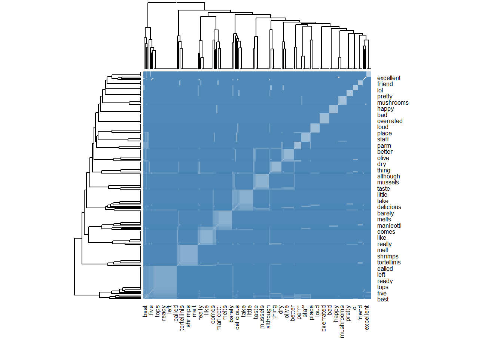
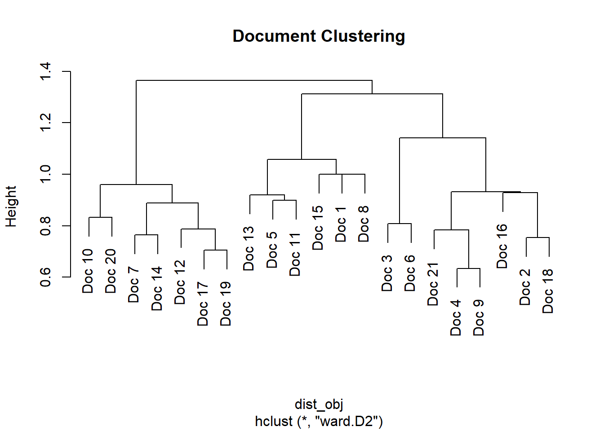
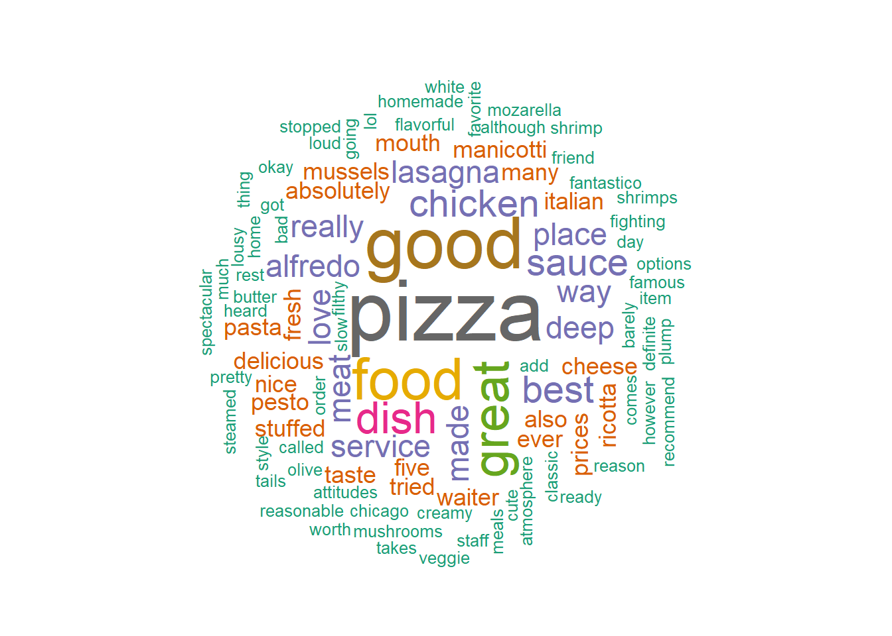

[1] "Love the food...Do not have any complaints!!! Favorite item to order stuffed mushrooms"
[2] "Food is delicious and fresh! Many options to choose from including veggie. Service is a little slow but it's good. Take time to make the food home made. Reasonable prices."
[3] "t was absolutely the best , atmosphere was great the food was fantastic , our waiter was cute to lol"
[4] "Really great pizza pie! The service was good and the food was also good."
[5] "The special was Tortellini with Pesto sauce & Shrimp, and it was sublime! Creamy pesto sauce, with plump perfectly cooked shrimps, (tails on, but not a deterrent!), and cheese tortellinis that melt in your mouth"
[6] "Best gnocchi ever!"
[7] "A definite five stars for the pizza and their classic appetizers! "
[8] "Way way way over-rated! I stopped going here after a few lousy meals and bad attitudes."
[9] "The chicken was so dry and the alfredo sauce wasn't that great. We heard that the pizza was spectacular but what we tasted was just okay. The only good thing was the waiter, he was really nice."
[10] "Food : we ordered the chicken Alfredo pizza , mussels and Linguini ! The mussels were steamed with white wine , butter and garlic ! However, although they were flavorful , they did not taste very fresh. "
[11] "the manicotti is made with a homemade crepe instead of pasta. You barely have to chew at all, as it melts seamlessly into the ricotta and mozarella cheeses. I recommend ordering it with meat sauce. "
[12] "Real deep dish pan pizza Chicago style, worth fighting for. I called it in before I left the house and it was ready when we got there, best pizza ever, nice people good food no fourty five minute wait for seating and the rest of the menu is tops also. "
[13] "Fantastico!! I had the manicotti and it was mouth watering. My friend had there lasagna and it was to die for. H"
[14] "The stuffed pizza is excellent! "
[15] "Amazing pasta and meatballs. I was so happy to stop here after a long day of hiking"
[16] "Their pizzas are good, their spaghetti not so much. Service takes forever and the place is filthy and loud. "
[17] "Love this place! Super friendly staff and the pizza is delicious. I love the deep dish meat lovers, its a diamond in the rough!"
[18] "Not too pretty on the eyes but great Italian food (I'm Italian), huge portions, and good prices!"
[19] "This place is famous for their deep dish pizza for a reason it is yummy! I tried their chicken caccatore and their chicken parm they were ok but their pizza is the best!"
[20] "The only good dish I have had here was the pizza. I've tried the fettuccine Alfredo, which had absolutely no taste to it. The lasagne was ok...I've had better at Olive Garden and many other places. "
[21] "The lasagna was great!! When it comes to lasagna, I definitely like some meat and don't want the ricotta cheese to overpower the entire dish. It was very good and the spices they add really made it great! " Customer Review Analysis
1. Introduction
Customer reviews are an important source of information for business decision making. Using text mining, we can analyse the reviews and create opinion association, heat maps and word cloud to understand the content of the reviews.
2. Data Pre-processing
We load the dataset and the column “Reviews”, which comprises of customer reviews, are the only ones taken into account.
2.1 Importing necessary Libraries
This loads the
tmfor text processing,slamfor handling sparse data.proxyfor similarity calculations,wordcloudfor visual output,RColorbrewerfor color palettes.
2.2 Creation of Corpus object
Texts -> Vectors->Volatile Corpus
2.3 Text Pre-processing
We do the following changes:
Convert text to lower case
Remove Punctuations
Remove Numbers
Remove Words
Remove White Space
2.4 Document Term matrix creation
A document term matrix is created from this . The following is the description for a DTM:
Rows -document number
Columns - unique words (terms) across all documents
Cells - how often each word appears in each document (or sometimes a weight like TF-IDF).
<<DocumentTermMatrix (documents: 21, terms: 185)>>
Non-/sparse entries: 254/3631
Sparsity : 93%
Maximal term length: 11
Weighting : term frequency (tf)
Sample :
Terms
Docs alfredo best chicken deep dish food good great pizza sauce
10 1 0 1 0 0 1 0 0 1 0
11 0 0 0 0 0 0 0 0 0 1
12 0 1 0 1 1 1 1 0 2 0
17 0 0 0 1 1 0 0 0 1 0
19 0 1 2 1 1 0 0 0 2 0
2 0 0 0 0 0 2 1 0 0 0
20 1 0 0 0 1 0 1 0 1 0
21 0 0 0 0 1 0 1 2 0 0
5 0 0 0 0 0 0 0 0 0 2
9 1 0 1 0 0 0 1 1 1 12.5 Cosine distance from DTM
Numerator is a term-term co-occurrence matrix, computed by multiplying DTM with its transpose
Denominator has the following characteristics:
col_sums(dtm^2)- Squares each term count and sums down the column — giving the squared length of each term vector.
sqrt(...)
- Gives the **Euclidean length** (norm) of each term vector.%*% t(...)
- Outer product of the norm vector with itself, producing all pairwise combinations ∥A∥×∥B∥\|A\| \times \|B\|∥A∥×∥B∥.Cosine similarity is obtained by dividing numerator with denominator. And on subtracting 1 with this, we get the cosine distance.
2.6 Converting to Matrix
The following is the output for cosine matrix:
Terms
Terms absolutely add alfredo also although amazing appetizers
absolutely 0.00 1.00 0.59 1.00 1.00 1.00 1.00
add 1.00 0.00 1.00 1.00 1.00 1.00 1.00
alfredo 0.59 1.00 0.00 1.00 0.42 1.00 1.00
also 1.00 1.00 1.00 0.00 1.00 1.00 1.00
although 1.00 1.00 0.42 1.00 0.00 1.00 1.00
amazing 1.00 1.00 1.00 1.00 1.00 0.00 1.00
appetizers 1.00 1.00 1.00 1.00 1.00 1.00 0.00
atmosphere 0.29 1.00 1.00 1.00 1.00 1.00 1.00
attitudes 1.00 1.00 1.00 1.00 1.00 1.00 1.00
bad 1.00 1.00 1.00 1.00 1.00 1.00 1.00
barely 1.00 1.00 1.00 1.00 1.00 1.00 1.00
best 0.65 1.00 1.00 0.65 1.00 1.00 1.00
better 0.29 1.00 0.42 1.00 1.00 1.00 1.00
butter 1.00 1.00 0.42 1.00 0.00 1.00 1.00
caccatore 1.00 1.00 1.00 1.00 1.00 1.00 1.00
called 1.00 1.00 1.00 0.29 1.00 1.00 1.00
cheese 1.00 0.29 1.00 1.00 1.00 1.00 1.00
cheeses 1.00 1.00 1.00 1.00 1.00 1.00 1.00
chew 1.00 1.00 1.00 1.00 1.00 1.00 1.00
chicago 1.00 1.00 1.00 0.29 1.00 1.00 1.00
chicken 1.00 1.00 0.53 1.00 0.59 1.00 1.00
choose 1.00 1.00 1.00 1.00 1.00 1.00 1.00
classic 1.00 1.00 1.00 1.00 1.00 1.00 0.00
comes 1.00 0.00 1.00 1.00 1.00 1.00 1.00
complaints 1.00 1.00 1.00 1.00 1.00 1.00 1.00
cooked 1.00 1.00 1.00 1.00 1.00 1.00 1.00
creamy 1.00 1.00 1.00 1.00 1.00 1.00 1.00
crepe 1.00 1.00 1.00 1.00 1.00 1.00 1.00
cute 0.29 1.00 1.00 1.00 1.00 1.00 1.00
day 1.00 1.00 1.00 1.00 1.00 0.00 1.00
deep 1.00 1.00 1.00 0.59 1.00 1.00 1.00
definite 1.00 1.00 1.00 1.00 1.00 1.00 0.00
definitely 1.00 0.00 1.00 1.00 1.00 1.00 1.00
delicious 1.00 1.00 1.00 1.00 1.00 1.00 1.00
deterrent 1.00 1.00 1.00 1.00 1.00 1.00 1.00
diamond 1.00 1.00 1.00 1.00 1.00 1.00 1.00
die 1.00 1.00 1.00 1.00 1.00 1.00 1.00
dish 0.68 0.55 0.74 0.68 1.00 1.00 1.00
dont 1.00 0.00 1.00 1.00 1.00 1.00 1.00
dry 1.00 1.00 0.42 1.00 1.00 1.00 1.00
entire 1.00 0.00 1.00 1.00 1.00 1.00 1.00
ever 1.00 1.00 1.00 0.50 1.00 1.00 1.00
excellent 1.00 1.00 1.00 1.00 1.00 1.00 1.00
eyes 1.00 1.00 1.00 1.00 1.00 1.00 1.00
famous 1.00 1.00 1.00 1.00 1.00 1.00 1.00
fantastic 0.29 1.00 1.00 1.00 1.00 1.00 1.00
fantastico 1.00 1.00 1.00 1.00 1.00 1.00 1.00
favorite 1.00 1.00 1.00 1.00 1.00 1.00 1.00
fettuccine 0.29 1.00 0.42 1.00 1.00 1.00 1.00
fighting 1.00 1.00 1.00 0.29 1.00 1.00 1.00
filthy 1.00 1.00 1.00 1.00 1.00 1.00 1.00
five 1.00 1.00 1.00 0.50 1.00 1.00 0.29
flavorful 1.00 1.00 0.42 1.00 0.00 1.00 1.00
food 0.76 1.00 0.81 0.53 0.67 1.00 1.00
fooddo 1.00 1.00 1.00 1.00 1.00 1.00 1.00
forever 1.00 1.00 1.00 1.00 1.00 1.00 1.00
fourty 1.00 1.00 1.00 0.29 1.00 1.00 1.00
fresh 1.00 1.00 0.59 1.00 0.29 1.00 1.00
friend 1.00 1.00 1.00 1.00 1.00 1.00 1.00
friendly 1.00 1.00 1.00 1.00 1.00 1.00 1.00
garden 0.29 1.00 0.42 1.00 1.00 1.00 1.00
garlic 1.00 1.00 0.42 1.00 0.00 1.00 1.00
gnocchi 1.00 1.00 1.00 1.00 1.00 1.00 1.00
going 1.00 1.00 1.00 1.00 1.00 1.00 1.00
good 0.79 0.70 0.65 0.36 1.00 1.00 1.00
got 1.00 1.00 1.00 0.29 1.00 1.00 1.00
great 0.75 0.29 0.80 0.75 1.00 1.00 1.00
happy 1.00 1.00 1.00 1.00 1.00 0.00 1.00
heard 1.00 1.00 0.42 1.00 1.00 1.00 1.00
hiking 1.00 1.00 1.00 1.00 1.00 0.00 1.00
home 1.00 1.00 1.00 1.00 1.00 1.00 1.00
homemade 1.00 1.00 1.00 1.00 1.00 1.00 1.00
house 1.00 1.00 1.00 0.29 1.00 1.00 1.00
however 1.00 1.00 0.42 1.00 0.00 1.00 1.00
huge 1.00 1.00 1.00 1.00 1.00 1.00 1.00
including 1.00 1.00 1.00 1.00 1.00 1.00 1.00
instead 1.00 1.00 1.00 1.00 1.00 1.00 1.00
italian 1.00 1.00 1.00 1.00 1.00 1.00 1.00
item 1.00 1.00 1.00 1.00 1.00 1.00 1.00
ive 0.29 1.00 0.42 1.00 1.00 1.00 1.00
just 1.00 1.00 0.42 1.00 1.00 1.00 1.00
lasagna 1.00 0.11 1.00 1.00 1.00 1.00 1.00
lasagne 0.29 1.00 0.42 1.00 1.00 1.00 1.00
left 1.00 1.00 1.00 0.29 1.00 1.00 1.00
like 1.00 0.00 1.00 1.00 1.00 1.00 1.00
linguini 1.00 1.00 0.42 1.00 0.00 1.00 1.00
little 1.00 1.00 1.00 1.00 1.00 1.00 1.00
lol 0.29 1.00 1.00 1.00 1.00 1.00 1.00
long 1.00 1.00 1.00 1.00 1.00 0.00 1.00
loud 1.00 1.00 1.00 1.00 1.00 1.00 1.00
lousy 1.00 1.00 1.00 1.00 1.00 1.00 1.00
love 1.00 1.00 1.00 1.00 1.00 1.00 1.00
lovers 1.00 1.00 1.00 1.00 1.00 1.00 1.00
made 1.00 0.42 1.00 1.00 1.00 1.00 1.00
make 1.00 1.00 1.00 1.00 1.00 1.00 1.00
manicotti 1.00 1.00 1.00 1.00 1.00 1.00 1.00
many 0.50 1.00 0.59 1.00 1.00 1.00 1.00
meals 1.00 1.00 1.00 1.00 1.00 1.00 1.00
meat 1.00 0.42 1.00 1.00 1.00 1.00 1.00
meatballs 1.00 1.00 1.00 1.00 1.00 0.00 1.00
melt 1.00 1.00 1.00 1.00 1.00 1.00 1.00
melts 1.00 1.00 1.00 1.00 1.00 1.00 1.00
menu 1.00 1.00 1.00 0.29 1.00 1.00 1.00
minute 1.00 1.00 1.00 0.29 1.00 1.00 1.00
mouth 1.00 1.00 1.00 1.00 1.00 1.00 1.00
mozarella 1.00 1.00 1.00 1.00 1.00 1.00 1.00
much 1.00 1.00 1.00 1.00 1.00 1.00 1.00
mushrooms 1.00 1.00 1.00 1.00 1.00 1.00 1.00
mussels 1.00 1.00 0.42 1.00 0.00 1.00 1.00
nice 1.00 1.00 0.59 0.50 1.00 1.00 1.00
okay 1.00 1.00 0.42 1.00 1.00 1.00 1.00
okive 0.29 1.00 0.42 1.00 1.00 1.00 1.00
olive 0.29 1.00 0.42 1.00 1.00 1.00 1.00
options 1.00 1.00 1.00 1.00 1.00 1.00 1.00
order 1.00 1.00 1.00 1.00 1.00 1.00 1.00
ordered 1.00 1.00 0.42 1.00 0.00 1.00 1.00
ordering 1.00 1.00 1.00 1.00 1.00 1.00 1.00
overpower 1.00 0.00 1.00 1.00 1.00 1.00 1.00
overrated 1.00 1.00 1.00 1.00 1.00 1.00 1.00
pan 1.00 1.00 1.00 0.29 1.00 1.00 1.00
parm 1.00 1.00 1.00 1.00 1.00 1.00 1.00
pasta 1.00 1.00 1.00 1.00 1.00 0.29 1.00
people 1.00 1.00 1.00 0.29 1.00 1.00 1.00
perfectly 1.00 1.00 1.00 1.00 1.00 1.00 1.00
pesto 1.00 1.00 1.00 1.00 1.00 1.00 1.00
pie 1.00 1.00 1.00 0.29 1.00 1.00 1.00
pizza 0.82 1.00 0.55 0.45 0.74 1.00 0.74
pizzas 1.00 1.00 1.00 1.00 1.00 1.00 1.00
place 1.00 1.00 1.00 1.00 1.00 1.00 1.00
places 0.29 1.00 0.42 1.00 1.00 1.00 1.00
plump 1.00 1.00 1.00 1.00 1.00 1.00 1.00
portions 1.00 1.00 1.00 1.00 1.00 1.00 1.00
pretty 1.00 1.00 1.00 1.00 1.00 1.00 1.00
prices 1.00 1.00 1.00 1.00 1.00 1.00 1.00
ready 1.00 1.00 1.00 0.29 1.00 1.00 1.00
real 1.00 1.00 1.00 0.29 1.00 1.00 1.00
really 1.00 0.42 0.67 0.59 1.00 1.00 1.00
reason 1.00 1.00 1.00 1.00 1.00 1.00 1.00
reasonable 1.00 1.00 1.00 1.00 1.00 1.00 1.00
recommend 1.00 1.00 1.00 1.00 1.00 1.00 1.00
rest 1.00 1.00 1.00 0.29 1.00 1.00 1.00
ricotta 1.00 0.29 1.00 1.00 1.00 1.00 1.00
rough 1.00 1.00 1.00 1.00 1.00 1.00 1.00
sauce 1.00 1.00 0.76 1.00 1.00 1.00 1.00
seamlessly 1.00 1.00 1.00 1.00 1.00 1.00 1.00
seating 1.00 1.00 1.00 0.29 1.00 1.00 1.00
service 1.00 1.00 1.00 0.59 1.00 1.00 1.00
shrimp 1.00 1.00 1.00 1.00 1.00 1.00 1.00
shrimps 1.00 1.00 1.00 1.00 1.00 1.00 1.00
slow 1.00 1.00 1.00 1.00 1.00 1.00 1.00
spaghetti 1.00 1.00 1.00 1.00 1.00 1.00 1.00
special 1.00 1.00 1.00 1.00 1.00 1.00 1.00
spectacular 1.00 1.00 0.42 1.00 1.00 1.00 1.00
spices 1.00 0.00 1.00 1.00 1.00 1.00 1.00
staff 1.00 1.00 1.00 1.00 1.00 1.00 1.00
stars 1.00 1.00 1.00 1.00 1.00 1.00 0.00
steamed 1.00 1.00 0.42 1.00 0.00 1.00 1.00
stop 1.00 1.00 1.00 1.00 1.00 0.00 1.00
stopped 1.00 1.00 1.00 1.00 1.00 1.00 1.00
stuffed 1.00 1.00 1.00 1.00 1.00 1.00 1.00
style 1.00 1.00 1.00 0.29 1.00 1.00 1.00
sublime 1.00 1.00 1.00 1.00 1.00 1.00 1.00
super 1.00 1.00 1.00 1.00 1.00 1.00 1.00
tails 1.00 1.00 1.00 1.00 1.00 1.00 1.00
take 1.00 1.00 1.00 1.00 1.00 1.00 1.00
takes 1.00 1.00 1.00 1.00 1.00 1.00 1.00
taste 0.50 1.00 0.18 1.00 0.29 1.00 1.00
tasted 1.00 1.00 0.42 1.00 1.00 1.00 1.00
thing 1.00 1.00 0.42 1.00 1.00 1.00 1.00
time 1.00 1.00 1.00 1.00 1.00 1.00 1.00
tops 1.00 1.00 1.00 0.29 1.00 1.00 1.00
tortellini 1.00 1.00 1.00 1.00 1.00 1.00 1.00
tortellinis 1.00 1.00 1.00 1.00 1.00 1.00 1.00
tried 0.50 1.00 0.59 1.00 1.00 1.00 1.00
veggie 1.00 1.00 1.00 1.00 1.00 1.00 1.00
wait 1.00 1.00 1.00 0.29 1.00 1.00 1.00
waiter 0.50 1.00 0.59 1.00 1.00 1.00 1.00
want 1.00 0.00 1.00 1.00 1.00 1.00 1.00
wasnt 1.00 1.00 0.42 1.00 1.00 1.00 1.00
watering 1.00 1.00 1.00 1.00 1.00 1.00 1.00
way 1.00 1.00 1.00 1.00 1.00 1.00 1.00
white 1.00 1.00 0.42 1.00 0.00 1.00 1.00
wine 1.00 1.00 0.42 1.00 0.00 1.00 1.00
worth 1.00 1.00 1.00 0.29 1.00 1.00 1.00
yummy 1.00 1.00 1.00 1.00 1.00 1.00 1.00
Terms
Terms atmosphere attitudes bad barely best better butter caccatore
absolutely 0.29 1 1 1.00 0.65 0.29 1.00 1.00
add 1.00 1 1 1.00 1.00 1.00 1.00 1.00
alfredo 1.00 1 1 1.00 1.00 0.42 0.42 1.00
also 1.00 1 1 1.00 0.65 1.00 1.00 1.00
although 1.00 1 1 1.00 1.00 1.00 0.00 1.00
amazing 1.00 1 1 1.00 1.00 1.00 1.00 1.00
appetizers 1.00 1 1 1.00 1.00 1.00 1.00 1.00
atmosphere 0.00 1 1 1.00 0.50 1.00 1.00 1.00
attitudes 1.00 0 0 1.00 1.00 1.00 1.00 1.00
bad 1.00 0 0 1.00 1.00 1.00 1.00 1.00
barely 1.00 1 1 0.00 1.00 1.00 1.00 1.00
best 0.50 1 1 1.00 0.00 1.00 1.00 0.50
better 1.00 1 1 1.00 1.00 0.00 1.00 1.00
butter 1.00 1 1 1.00 1.00 1.00 0.00 1.00
caccatore 1.00 1 1 1.00 0.50 1.00 1.00 0.00
called 1.00 1 1 1.00 0.50 1.00 1.00 1.00
cheese 1.00 1 1 1.00 1.00 1.00 1.00 1.00
cheeses 1.00 1 1 0.00 1.00 1.00 1.00 1.00
chew 1.00 1 1 0.00 1.00 1.00 1.00 1.00
chicago 1.00 1 1 1.00 0.50 1.00 1.00 1.00
chicken 1.00 1 1 1.00 0.59 1.00 0.59 0.18
choose 1.00 1 1 1.00 1.00 1.00 1.00 1.00
classic 1.00 1 1 1.00 1.00 1.00 1.00 1.00
comes 1.00 1 1 1.00 1.00 1.00 1.00 1.00
complaints 1.00 1 1 1.00 1.00 1.00 1.00 1.00
cooked 1.00 1 1 1.00 1.00 1.00 1.00 1.00
creamy 1.00 1 1 1.00 1.00 1.00 1.00 1.00
crepe 1.00 1 1 0.00 1.00 1.00 1.00 1.00
cute 0.00 1 1 1.00 0.50 1.00 1.00 1.00
day 1.00 1 1 1.00 1.00 1.00 1.00 1.00
deep 1.00 1 1 1.00 0.42 1.00 1.00 0.42
definite 1.00 1 1 1.00 1.00 1.00 1.00 1.00
definitely 1.00 1 1 1.00 1.00 1.00 1.00 1.00
delicious 1.00 1 1 1.00 1.00 1.00 1.00 1.00
deterrent 1.00 1 1 1.00 1.00 1.00 1.00 1.00
diamond 1.00 1 1 1.00 1.00 1.00 1.00 1.00
die 1.00 1 1 1.00 1.00 1.00 1.00 1.00
dish 1.00 1 1 1.00 0.55 0.55 1.00 0.55
dont 1.00 1 1 1.00 1.00 1.00 1.00 1.00
dry 1.00 1 1 1.00 1.00 1.00 1.00 1.00
entire 1.00 1 1 1.00 1.00 1.00 1.00 1.00
ever 1.00 1 1 1.00 0.29 1.00 1.00 1.00
excellent 1.00 1 1 1.00 1.00 1.00 1.00 1.00
eyes 1.00 1 1 1.00 1.00 1.00 1.00 1.00
famous 1.00 1 1 1.00 0.50 1.00 1.00 0.00
fantastic 0.00 1 1 1.00 0.50 1.00 1.00 1.00
fantastico 1.00 1 1 1.00 1.00 1.00 1.00 1.00
favorite 1.00 1 1 1.00 1.00 1.00 1.00 1.00
fettuccine 1.00 1 1 1.00 1.00 0.00 1.00 1.00
fighting 1.00 1 1 1.00 0.50 1.00 1.00 1.00
filthy 1.00 1 1 1.00 1.00 1.00 1.00 1.00
five 1.00 1 1 1.00 0.65 1.00 1.00 1.00
flavorful 1.00 1 1 1.00 1.00 1.00 0.00 1.00
food 0.67 1 1 1.00 0.67 1.00 0.67 1.00
fooddo 1.00 1 1 1.00 1.00 1.00 1.00 1.00
forever 1.00 1 1 1.00 1.00 1.00 1.00 1.00
fourty 1.00 1 1 1.00 0.50 1.00 1.00 1.00
fresh 1.00 1 1 1.00 1.00 1.00 0.29 1.00
friend 1.00 1 1 1.00 1.00 1.00 1.00 1.00
friendly 1.00 1 1 1.00 1.00 1.00 1.00 1.00
garden 1.00 1 1 1.00 1.00 0.00 1.00 1.00
garlic 1.00 1 1 1.00 1.00 1.00 0.00 1.00
gnocchi 1.00 1 1 1.00 0.50 1.00 1.00 1.00
going 1.00 0 0 1.00 1.00 1.00 1.00 1.00
good 1.00 1 1 1.00 0.85 0.70 1.00 1.00
got 1.00 1 1 1.00 0.50 1.00 1.00 1.00
great 0.65 1 1 1.00 0.82 1.00 1.00 1.00
happy 1.00 1 1 1.00 1.00 1.00 1.00 1.00
heard 1.00 1 1 1.00 1.00 1.00 1.00 1.00
hiking 1.00 1 1 1.00 1.00 1.00 1.00 1.00
home 1.00 1 1 1.00 1.00 1.00 1.00 1.00
homemade 1.00 1 1 0.00 1.00 1.00 1.00 1.00
house 1.00 1 1 1.00 0.50 1.00 1.00 1.00
however 1.00 1 1 1.00 1.00 1.00 0.00 1.00
huge 1.00 1 1 1.00 1.00 1.00 1.00 1.00
including 1.00 1 1 1.00 1.00 1.00 1.00 1.00
instead 1.00 1 1 0.00 1.00 1.00 1.00 1.00
italian 1.00 1 1 1.00 1.00 1.00 1.00 1.00
item 1.00 1 1 1.00 1.00 1.00 1.00 1.00
ive 1.00 1 1 1.00 1.00 0.00 1.00 1.00
just 1.00 1 1 1.00 1.00 1.00 1.00 1.00
lasagna 1.00 1 1 1.00 1.00 1.00 1.00 1.00
lasagne 1.00 1 1 1.00 1.00 0.00 1.00 1.00
left 1.00 1 1 1.00 0.50 1.00 1.00 1.00
like 1.00 1 1 1.00 1.00 1.00 1.00 1.00
linguini 1.00 1 1 1.00 1.00 1.00 0.00 1.00
little 1.00 1 1 1.00 1.00 1.00 1.00 1.00
lol 0.00 1 1 1.00 0.50 1.00 1.00 1.00
long 1.00 1 1 1.00 1.00 1.00 1.00 1.00
loud 1.00 1 1 1.00 1.00 1.00 1.00 1.00
lousy 1.00 0 0 1.00 1.00 1.00 1.00 1.00
love 1.00 1 1 1.00 1.00 1.00 1.00 1.00
lovers 1.00 1 1 1.00 1.00 1.00 1.00 1.00
made 1.00 1 1 0.42 1.00 1.00 1.00 1.00
make 1.00 1 1 1.00 1.00 1.00 1.00 1.00
manicotti 1.00 1 1 0.29 1.00 1.00 1.00 1.00
many 1.00 1 1 1.00 1.00 0.29 1.00 1.00
meals 1.00 0 0 1.00 1.00 1.00 1.00 1.00
meat 1.00 1 1 0.42 1.00 1.00 1.00 1.00
meatballs 1.00 1 1 1.00 1.00 1.00 1.00 1.00
melt 1.00 1 1 1.00 1.00 1.00 1.00 1.00
melts 1.00 1 1 0.00 1.00 1.00 1.00 1.00
menu 1.00 1 1 1.00 0.50 1.00 1.00 1.00
minute 1.00 1 1 1.00 0.50 1.00 1.00 1.00
mouth 1.00 1 1 1.00 1.00 1.00 1.00 1.00
mozarella 1.00 1 1 0.00 1.00 1.00 1.00 1.00
much 1.00 1 1 1.00 1.00 1.00 1.00 1.00
mushrooms 1.00 1 1 1.00 1.00 1.00 1.00 1.00
mussels 1.00 1 1 1.00 1.00 1.00 0.00 1.00
nice 1.00 1 1 1.00 0.65 1.00 1.00 1.00
okay 1.00 1 1 1.00 1.00 1.00 1.00 1.00
okive 1.00 1 1 1.00 1.00 0.00 1.00 1.00
olive 1.00 1 1 1.00 1.00 0.00 1.00 1.00
options 1.00 1 1 1.00 1.00 1.00 1.00 1.00
order 1.00 1 1 1.00 1.00 1.00 1.00 1.00
ordered 1.00 1 1 1.00 1.00 1.00 0.00 1.00
ordering 1.00 1 1 0.00 1.00 1.00 1.00 1.00
overpower 1.00 1 1 1.00 1.00 1.00 1.00 1.00
overrated 1.00 0 0 1.00 1.00 1.00 1.00 1.00
pan 1.00 1 1 1.00 0.50 1.00 1.00 1.00
parm 1.00 1 1 1.00 0.50 1.00 1.00 0.00
pasta 1.00 1 1 0.29 1.00 1.00 1.00 1.00
people 1.00 1 1 1.00 0.50 1.00 1.00 1.00
perfectly 1.00 1 1 1.00 1.00 1.00 1.00 1.00
pesto 1.00 1 1 1.00 1.00 1.00 1.00 1.00
pie 1.00 1 1 1.00 1.00 1.00 1.00 1.00
pizza 1.00 1 1 1.00 0.48 0.74 0.74 0.48
pizzas 1.00 1 1 1.00 1.00 1.00 1.00 1.00
place 1.00 1 1 1.00 0.71 1.00 1.00 0.42
places 1.00 1 1 1.00 1.00 0.00 1.00 1.00
plump 1.00 1 1 1.00 1.00 1.00 1.00 1.00
portions 1.00 1 1 1.00 1.00 1.00 1.00 1.00
pretty 1.00 1 1 1.00 1.00 1.00 1.00 1.00
prices 1.00 1 1 1.00 1.00 1.00 1.00 1.00
ready 1.00 1 1 1.00 0.50 1.00 1.00 1.00
real 1.00 1 1 1.00 0.50 1.00 1.00 1.00
really 1.00 1 1 1.00 1.00 1.00 1.00 1.00
reason 1.00 1 1 1.00 0.50 1.00 1.00 0.00
reasonable 1.00 1 1 1.00 1.00 1.00 1.00 1.00
recommend 1.00 1 1 0.00 1.00 1.00 1.00 1.00
rest 1.00 1 1 1.00 0.50 1.00 1.00 1.00
ricotta 1.00 1 1 0.29 1.00 1.00 1.00 1.00
rough 1.00 1 1 1.00 1.00 1.00 1.00 1.00
sauce 1.00 1 1 0.59 1.00 1.00 1.00 1.00
seamlessly 1.00 1 1 0.00 1.00 1.00 1.00 1.00
seating 1.00 1 1 1.00 0.50 1.00 1.00 1.00
service 1.00 1 1 1.00 1.00 1.00 1.00 1.00
shrimp 1.00 1 1 1.00 1.00 1.00 1.00 1.00
shrimps 1.00 1 1 1.00 1.00 1.00 1.00 1.00
slow 1.00 1 1 1.00 1.00 1.00 1.00 1.00
spaghetti 1.00 1 1 1.00 1.00 1.00 1.00 1.00
special 1.00 1 1 1.00 1.00 1.00 1.00 1.00
spectacular 1.00 1 1 1.00 1.00 1.00 1.00 1.00
spices 1.00 1 1 1.00 1.00 1.00 1.00 1.00
staff 1.00 1 1 1.00 1.00 1.00 1.00 1.00
stars 1.00 1 1 1.00 1.00 1.00 1.00 1.00
steamed 1.00 1 1 1.00 1.00 1.00 0.00 1.00
stop 1.00 1 1 1.00 1.00 1.00 1.00 1.00
stopped 1.00 0 0 1.00 1.00 1.00 1.00 1.00
stuffed 1.00 1 1 1.00 1.00 1.00 1.00 1.00
style 1.00 1 1 1.00 0.50 1.00 1.00 1.00
sublime 1.00 1 1 1.00 1.00 1.00 1.00 1.00
super 1.00 1 1 1.00 1.00 1.00 1.00 1.00
tails 1.00 1 1 1.00 1.00 1.00 1.00 1.00
take 1.00 1 1 1.00 1.00 1.00 1.00 1.00
takes 1.00 1 1 1.00 1.00 1.00 1.00 1.00
taste 1.00 1 1 1.00 1.00 0.29 0.29 1.00
tasted 1.00 1 1 1.00 1.00 1.00 1.00 1.00
thing 1.00 1 1 1.00 1.00 1.00 1.00 1.00
time 1.00 1 1 1.00 1.00 1.00 1.00 1.00
tops 1.00 1 1 1.00 0.50 1.00 1.00 1.00
tortellini 1.00 1 1 1.00 1.00 1.00 1.00 1.00
tortellinis 1.00 1 1 1.00 1.00 1.00 1.00 1.00
tried 1.00 1 1 1.00 0.65 0.29 1.00 0.29
veggie 1.00 1 1 1.00 1.00 1.00 1.00 1.00
wait 1.00 1 1 1.00 0.50 1.00 1.00 1.00
waiter 0.29 1 1 1.00 0.65 1.00 1.00 1.00
want 1.00 1 1 1.00 1.00 1.00 1.00 1.00
wasnt 1.00 1 1 1.00 1.00 1.00 1.00 1.00
watering 1.00 1 1 1.00 1.00 1.00 1.00 1.00
way 1.00 0 0 1.00 1.00 1.00 1.00 1.00
white 1.00 1 1 1.00 1.00 1.00 0.00 1.00
wine 1.00 1 1 1.00 1.00 1.00 0.00 1.00
worth 1.00 1 1 1.00 0.50 1.00 1.00 1.00
yummy 1.00 1 1 1.00 0.50 1.00 1.00 0.00
Terms
Terms called cheese cheeses chew chicago chicken choose classic comes
absolutely 1.00 1.00 1.00 1.00 1.00 1.00 1.00 1.00 1.00
add 1.00 0.29 1.00 1.00 1.00 1.00 1.00 1.00 0.00
alfredo 1.00 1.00 1.00 1.00 1.00 0.53 1.00 1.00 1.00
also 0.29 1.00 1.00 1.00 0.29 1.00 1.00 1.00 1.00
although 1.00 1.00 1.00 1.00 1.00 0.59 1.00 1.00 1.00
amazing 1.00 1.00 1.00 1.00 1.00 1.00 1.00 1.00 1.00
appetizers 1.00 1.00 1.00 1.00 1.00 1.00 1.00 0.00 1.00
atmosphere 1.00 1.00 1.00 1.00 1.00 1.00 1.00 1.00 1.00
attitudes 1.00 1.00 1.00 1.00 1.00 1.00 1.00 1.00 1.00
bad 1.00 1.00 1.00 1.00 1.00 1.00 1.00 1.00 1.00
barely 1.00 1.00 0.00 0.00 1.00 1.00 1.00 1.00 1.00
best 0.50 1.00 1.00 1.00 0.50 0.59 1.00 1.00 1.00
better 1.00 1.00 1.00 1.00 1.00 1.00 1.00 1.00 1.00
butter 1.00 1.00 1.00 1.00 1.00 0.59 1.00 1.00 1.00
caccatore 1.00 1.00 1.00 1.00 1.00 0.18 1.00 1.00 1.00
called 0.00 1.00 1.00 1.00 0.00 1.00 1.00 1.00 1.00
cheese 1.00 0.00 1.00 1.00 1.00 1.00 1.00 1.00 0.29
cheeses 1.00 1.00 0.00 0.00 1.00 1.00 1.00 1.00 1.00
chew 1.00 1.00 0.00 0.00 1.00 1.00 1.00 1.00 1.00
chicago 0.00 1.00 1.00 1.00 0.00 1.00 1.00 1.00 1.00
chicken 1.00 1.00 1.00 1.00 1.00 0.00 1.00 1.00 1.00
choose 1.00 1.00 1.00 1.00 1.00 1.00 0.00 1.00 1.00
classic 1.00 1.00 1.00 1.00 1.00 1.00 1.00 0.00 1.00
comes 1.00 0.29 1.00 1.00 1.00 1.00 1.00 1.00 0.00
complaints 1.00 1.00 1.00 1.00 1.00 1.00 1.00 1.00 1.00
cooked 1.00 0.29 1.00 1.00 1.00 1.00 1.00 1.00 1.00
creamy 1.00 0.29 1.00 1.00 1.00 1.00 1.00 1.00 1.00
crepe 1.00 1.00 0.00 0.00 1.00 1.00 1.00 1.00 1.00
cute 1.00 1.00 1.00 1.00 1.00 1.00 1.00 1.00 1.00
day 1.00 1.00 1.00 1.00 1.00 1.00 1.00 1.00 1.00
deep 0.42 1.00 1.00 1.00 0.42 0.53 1.00 1.00 1.00
definite 1.00 1.00 1.00 1.00 1.00 1.00 1.00 0.00 1.00
definitely 1.00 0.29 1.00 1.00 1.00 1.00 1.00 1.00 0.00
delicious 1.00 1.00 1.00 1.00 1.00 1.00 0.29 1.00 1.00
deterrent 1.00 0.29 1.00 1.00 1.00 1.00 1.00 1.00 1.00
diamond 1.00 1.00 1.00 1.00 1.00 1.00 1.00 1.00 1.00
die 1.00 1.00 1.00 1.00 1.00 1.00 1.00 1.00 1.00
dish 0.55 0.68 1.00 1.00 0.55 0.63 1.00 1.00 0.55
dont 1.00 0.29 1.00 1.00 1.00 1.00 1.00 1.00 0.00
dry 1.00 1.00 1.00 1.00 1.00 0.59 1.00 1.00 1.00
entire 1.00 0.29 1.00 1.00 1.00 1.00 1.00 1.00 0.00
ever 0.29 1.00 1.00 1.00 0.29 1.00 1.00 1.00 1.00
excellent 1.00 1.00 1.00 1.00 1.00 1.00 1.00 1.00 1.00
eyes 1.00 1.00 1.00 1.00 1.00 1.00 1.00 1.00 1.00
famous 1.00 1.00 1.00 1.00 1.00 0.18 1.00 1.00 1.00
fantastic 1.00 1.00 1.00 1.00 1.00 1.00 1.00 1.00 1.00
fantastico 1.00 1.00 1.00 1.00 1.00 1.00 1.00 1.00 1.00
favorite 1.00 1.00 1.00 1.00 1.00 1.00 1.00 1.00 1.00
fettuccine 1.00 1.00 1.00 1.00 1.00 1.00 1.00 1.00 1.00
fighting 0.00 1.00 1.00 1.00 0.00 1.00 1.00 1.00 1.00
filthy 1.00 1.00 1.00 1.00 1.00 1.00 1.00 1.00 1.00
five 0.29 1.00 1.00 1.00 0.29 1.00 1.00 0.29 1.00
flavorful 1.00 1.00 1.00 1.00 1.00 0.59 1.00 1.00 1.00
food 0.67 1.00 1.00 1.00 0.67 0.86 0.33 1.00 1.00
fooddo 1.00 1.00 1.00 1.00 1.00 1.00 1.00 1.00 1.00
forever 1.00 1.00 1.00 1.00 1.00 1.00 1.00 1.00 1.00
fourty 0.00 1.00 1.00 1.00 0.00 1.00 1.00 1.00 1.00
fresh 1.00 1.00 1.00 1.00 1.00 0.71 0.29 1.00 1.00
friend 1.00 1.00 1.00 1.00 1.00 1.00 1.00 1.00 1.00
friendly 1.00 1.00 1.00 1.00 1.00 1.00 1.00 1.00 1.00
garden 1.00 1.00 1.00 1.00 1.00 1.00 1.00 1.00 1.00
garlic 1.00 1.00 1.00 1.00 1.00 0.59 1.00 1.00 1.00
gnocchi 1.00 1.00 1.00 1.00 1.00 1.00 1.00 1.00 1.00
going 1.00 1.00 1.00 1.00 1.00 1.00 1.00 1.00 1.00
good 0.70 0.79 1.00 1.00 0.70 0.88 0.70 1.00 0.70
got 0.00 1.00 1.00 1.00 0.00 1.00 1.00 1.00 1.00
great 1.00 0.50 1.00 1.00 1.00 0.86 1.00 1.00 0.29
happy 1.00 1.00 1.00 1.00 1.00 1.00 1.00 1.00 1.00
heard 1.00 1.00 1.00 1.00 1.00 0.59 1.00 1.00 1.00
hiking 1.00 1.00 1.00 1.00 1.00 1.00 1.00 1.00 1.00
home 1.00 1.00 1.00 1.00 1.00 1.00 0.00 1.00 1.00
homemade 1.00 1.00 0.00 0.00 1.00 1.00 1.00 1.00 1.00
house 0.00 1.00 1.00 1.00 0.00 1.00 1.00 1.00 1.00
however 1.00 1.00 1.00 1.00 1.00 0.59 1.00 1.00 1.00
huge 1.00 1.00 1.00 1.00 1.00 1.00 1.00 1.00 1.00
including 1.00 1.00 1.00 1.00 1.00 1.00 0.00 1.00 1.00
instead 1.00 1.00 0.00 0.00 1.00 1.00 1.00 1.00 1.00
italian 1.00 1.00 1.00 1.00 1.00 1.00 1.00 1.00 1.00
item 1.00 1.00 1.00 1.00 1.00 1.00 1.00 1.00 1.00
ive 1.00 1.00 1.00 1.00 1.00 1.00 1.00 1.00 1.00
just 1.00 1.00 1.00 1.00 1.00 0.59 1.00 1.00 1.00
lasagna 1.00 0.37 1.00 1.00 1.00 1.00 1.00 1.00 0.11
lasagne 1.00 1.00 1.00 1.00 1.00 1.00 1.00 1.00 1.00
left 0.00 1.00 1.00 1.00 0.00 1.00 1.00 1.00 1.00
like 1.00 0.29 1.00 1.00 1.00 1.00 1.00 1.00 0.00
linguini 1.00 1.00 1.00 1.00 1.00 0.59 1.00 1.00 1.00
little 1.00 1.00 1.00 1.00 1.00 1.00 0.00 1.00 1.00
lol 1.00 1.00 1.00 1.00 1.00 1.00 1.00 1.00 1.00
long 1.00 1.00 1.00 1.00 1.00 1.00 1.00 1.00 1.00
loud 1.00 1.00 1.00 1.00 1.00 1.00 1.00 1.00 1.00
lousy 1.00 1.00 1.00 1.00 1.00 1.00 1.00 1.00 1.00
love 1.00 1.00 1.00 1.00 1.00 1.00 1.00 1.00 1.00
lovers 1.00 1.00 1.00 1.00 1.00 1.00 1.00 1.00 1.00
made 1.00 0.59 0.42 0.42 1.00 1.00 0.42 1.00 0.42
make 1.00 1.00 1.00 1.00 1.00 1.00 0.00 1.00 1.00
manicotti 1.00 1.00 0.29 0.29 1.00 1.00 1.00 1.00 1.00
many 1.00 1.00 1.00 1.00 1.00 1.00 0.29 1.00 1.00
meals 1.00 1.00 1.00 1.00 1.00 1.00 1.00 1.00 1.00
meat 1.00 0.59 0.42 0.42 1.00 1.00 1.00 1.00 0.42
meatballs 1.00 1.00 1.00 1.00 1.00 1.00 1.00 1.00 1.00
melt 1.00 0.29 1.00 1.00 1.00 1.00 1.00 1.00 1.00
melts 1.00 1.00 0.00 0.00 1.00 1.00 1.00 1.00 1.00
menu 0.00 1.00 1.00 1.00 0.00 1.00 1.00 1.00 1.00
minute 0.00 1.00 1.00 1.00 0.00 1.00 1.00 1.00 1.00
mouth 1.00 0.50 1.00 1.00 1.00 1.00 1.00 1.00 1.00
mozarella 1.00 1.00 0.00 0.00 1.00 1.00 1.00 1.00 1.00
much 1.00 1.00 1.00 1.00 1.00 1.00 1.00 1.00 1.00
mushrooms 1.00 1.00 1.00 1.00 1.00 1.00 1.00 1.00 1.00
mussels 1.00 1.00 1.00 1.00 1.00 0.59 1.00 1.00 1.00
nice 0.29 1.00 1.00 1.00 0.29 0.71 1.00 1.00 1.00
okay 1.00 1.00 1.00 1.00 1.00 0.59 1.00 1.00 1.00
okive 1.00 1.00 1.00 1.00 1.00 1.00 1.00 1.00 1.00
olive 1.00 1.00 1.00 1.00 1.00 1.00 1.00 1.00 1.00
options 1.00 1.00 1.00 1.00 1.00 1.00 0.00 1.00 1.00
order 1.00 1.00 1.00 1.00 1.00 1.00 1.00 1.00 1.00
ordered 1.00 1.00 1.00 1.00 1.00 0.59 1.00 1.00 1.00
ordering 1.00 1.00 0.00 0.00 1.00 1.00 1.00 1.00 1.00
overpower 1.00 0.29 1.00 1.00 1.00 1.00 1.00 1.00 0.00
overrated 1.00 1.00 1.00 1.00 1.00 1.00 1.00 1.00 1.00
pan 0.00 1.00 1.00 1.00 0.00 1.00 1.00 1.00 1.00
parm 1.00 1.00 1.00 1.00 1.00 0.18 1.00 1.00 1.00
pasta 1.00 1.00 0.29 0.29 1.00 1.00 1.00 1.00 1.00
people 0.00 1.00 1.00 1.00 0.00 1.00 1.00 1.00 1.00
perfectly 1.00 0.29 1.00 1.00 1.00 1.00 1.00 1.00 1.00
pesto 1.00 0.29 1.00 1.00 1.00 1.00 1.00 1.00 1.00
pie 1.00 1.00 1.00 1.00 1.00 1.00 1.00 1.00 1.00
pizza 0.48 1.00 1.00 1.00 0.48 0.37 1.00 0.74 1.00
pizzas 1.00 1.00 1.00 1.00 1.00 1.00 1.00 1.00 1.00
place 1.00 1.00 1.00 1.00 1.00 0.53 1.00 1.00 1.00
places 1.00 1.00 1.00 1.00 1.00 1.00 1.00 1.00 1.00
plump 1.00 0.29 1.00 1.00 1.00 1.00 1.00 1.00 1.00
portions 1.00 1.00 1.00 1.00 1.00 1.00 1.00 1.00 1.00
pretty 1.00 1.00 1.00 1.00 1.00 1.00 1.00 1.00 1.00
prices 1.00 1.00 1.00 1.00 1.00 1.00 0.29 1.00 1.00
ready 0.00 1.00 1.00 1.00 0.00 1.00 1.00 1.00 1.00
real 0.00 1.00 1.00 1.00 0.00 1.00 1.00 1.00 1.00
really 1.00 0.59 1.00 1.00 1.00 0.76 1.00 1.00 0.42
reason 1.00 1.00 1.00 1.00 1.00 0.18 1.00 1.00 1.00
reasonable 1.00 1.00 1.00 1.00 1.00 1.00 0.00 1.00 1.00
recommend 1.00 1.00 0.00 0.00 1.00 1.00 1.00 1.00 1.00
rest 0.00 1.00 1.00 1.00 0.00 1.00 1.00 1.00 1.00
ricotta 1.00 0.50 0.29 0.29 1.00 1.00 1.00 1.00 0.29
rough 1.00 1.00 1.00 1.00 1.00 1.00 1.00 1.00 1.00
sauce 1.00 0.42 0.59 0.59 1.00 0.83 1.00 1.00 1.00
seamlessly 1.00 1.00 0.00 0.00 1.00 1.00 1.00 1.00 1.00
seating 0.00 1.00 1.00 1.00 0.00 1.00 1.00 1.00 1.00
service 1.00 1.00 1.00 1.00 1.00 1.00 0.42 1.00 1.00
shrimp 1.00 0.29 1.00 1.00 1.00 1.00 1.00 1.00 1.00
shrimps 1.00 0.29 1.00 1.00 1.00 1.00 1.00 1.00 1.00
slow 1.00 1.00 1.00 1.00 1.00 1.00 0.00 1.00 1.00
spaghetti 1.00 1.00 1.00 1.00 1.00 1.00 1.00 1.00 1.00
special 1.00 0.29 1.00 1.00 1.00 1.00 1.00 1.00 1.00
spectacular 1.00 1.00 1.00 1.00 1.00 0.59 1.00 1.00 1.00
spices 1.00 0.29 1.00 1.00 1.00 1.00 1.00 1.00 0.00
staff 1.00 1.00 1.00 1.00 1.00 1.00 1.00 1.00 1.00
stars 1.00 1.00 1.00 1.00 1.00 1.00 1.00 0.00 1.00
steamed 1.00 1.00 1.00 1.00 1.00 0.59 1.00 1.00 1.00
stop 1.00 1.00 1.00 1.00 1.00 1.00 1.00 1.00 1.00
stopped 1.00 1.00 1.00 1.00 1.00 1.00 1.00 1.00 1.00
stuffed 1.00 1.00 1.00 1.00 1.00 1.00 1.00 1.00 1.00
style 0.00 1.00 1.00 1.00 0.00 1.00 1.00 1.00 1.00
sublime 1.00 0.29 1.00 1.00 1.00 1.00 1.00 1.00 1.00
super 1.00 1.00 1.00 1.00 1.00 1.00 1.00 1.00 1.00
tails 1.00 0.29 1.00 1.00 1.00 1.00 1.00 1.00 1.00
take 1.00 1.00 1.00 1.00 1.00 1.00 0.00 1.00 1.00
takes 1.00 1.00 1.00 1.00 1.00 1.00 1.00 1.00 1.00
taste 1.00 1.00 1.00 1.00 1.00 0.71 1.00 1.00 1.00
tasted 1.00 1.00 1.00 1.00 1.00 0.59 1.00 1.00 1.00
thing 1.00 1.00 1.00 1.00 1.00 0.59 1.00 1.00 1.00
time 1.00 1.00 1.00 1.00 1.00 1.00 0.00 1.00 1.00
tops 0.00 1.00 1.00 1.00 0.00 1.00 1.00 1.00 1.00
tortellini 1.00 0.29 1.00 1.00 1.00 1.00 1.00 1.00 1.00
tortellinis 1.00 0.29 1.00 1.00 1.00 1.00 1.00 1.00 1.00
tried 1.00 1.00 1.00 1.00 1.00 0.42 1.00 1.00 1.00
veggie 1.00 1.00 1.00 1.00 1.00 1.00 0.00 1.00 1.00
wait 0.00 1.00 1.00 1.00 0.00 1.00 1.00 1.00 1.00
waiter 1.00 1.00 1.00 1.00 1.00 0.71 1.00 1.00 1.00
want 1.00 0.29 1.00 1.00 1.00 1.00 1.00 1.00 0.00
wasnt 1.00 1.00 1.00 1.00 1.00 0.59 1.00 1.00 1.00
watering 1.00 1.00 1.00 1.00 1.00 1.00 1.00 1.00 1.00
way 1.00 1.00 1.00 1.00 1.00 1.00 1.00 1.00 1.00
white 1.00 1.00 1.00 1.00 1.00 0.59 1.00 1.00 1.00
wine 1.00 1.00 1.00 1.00 1.00 0.59 1.00 1.00 1.00
worth 0.00 1.00 1.00 1.00 0.00 1.00 1.00 1.00 1.00
yummy 1.00 1.00 1.00 1.00 1.00 0.18 1.00 1.00 1.00
Terms
Terms complaints cooked creamy crepe cute day deep definite definitely
absolutely 1.00 1.00 1.00 1.00 0.29 1.00 1.00 1.00 1.00
add 1.00 1.00 1.00 1.00 1.00 1.00 1.00 1.00 0.00
alfredo 1.00 1.00 1.00 1.00 1.00 1.00 1.00 1.00 1.00
also 1.00 1.00 1.00 1.00 1.00 1.00 0.59 1.00 1.00
although 1.00 1.00 1.00 1.00 1.00 1.00 1.00 1.00 1.00
amazing 1.00 1.00 1.00 1.00 1.00 0.00 1.00 1.00 1.00
appetizers 1.00 1.00 1.00 1.00 1.00 1.00 1.00 0.00 1.00
atmosphere 1.00 1.00 1.00 1.00 0.00 1.00 1.00 1.00 1.00
attitudes 1.00 1.00 1.00 1.00 1.00 1.00 1.00 1.00 1.00
bad 1.00 1.00 1.00 1.00 1.00 1.00 1.00 1.00 1.00
barely 1.00 1.00 1.00 0.00 1.00 1.00 1.00 1.00 1.00
best 1.00 1.00 1.00 1.00 0.50 1.00 0.42 1.00 1.00
better 1.00 1.00 1.00 1.00 1.00 1.00 1.00 1.00 1.00
butter 1.00 1.00 1.00 1.00 1.00 1.00 1.00 1.00 1.00
caccatore 1.00 1.00 1.00 1.00 1.00 1.00 0.42 1.00 1.00
called 1.00 1.00 1.00 1.00 1.00 1.00 0.42 1.00 1.00
cheese 1.00 0.29 0.29 1.00 1.00 1.00 1.00 1.00 0.29
cheeses 1.00 1.00 1.00 0.00 1.00 1.00 1.00 1.00 1.00
chew 1.00 1.00 1.00 0.00 1.00 1.00 1.00 1.00 1.00
chicago 1.00 1.00 1.00 1.00 1.00 1.00 0.42 1.00 1.00
chicken 1.00 1.00 1.00 1.00 1.00 1.00 0.53 1.00 1.00
choose 1.00 1.00 1.00 1.00 1.00 1.00 1.00 1.00 1.00
classic 1.00 1.00 1.00 1.00 1.00 1.00 1.00 0.00 1.00
comes 1.00 1.00 1.00 1.00 1.00 1.00 1.00 1.00 0.00
complaints 0.00 1.00 1.00 1.00 1.00 1.00 1.00 1.00 1.00
cooked 1.00 0.00 0.00 1.00 1.00 1.00 1.00 1.00 1.00
creamy 1.00 0.00 0.00 1.00 1.00 1.00 1.00 1.00 1.00
crepe 1.00 1.00 1.00 0.00 1.00 1.00 1.00 1.00 1.00
cute 1.00 1.00 1.00 1.00 0.00 1.00 1.00 1.00 1.00
day 1.00 1.00 1.00 1.00 1.00 0.00 1.00 1.00 1.00
deep 1.00 1.00 1.00 1.00 1.00 1.00 0.00 1.00 1.00
definite 1.00 1.00 1.00 1.00 1.00 1.00 1.00 0.00 1.00
definitely 1.00 1.00 1.00 1.00 1.00 1.00 1.00 1.00 0.00
delicious 1.00 1.00 1.00 1.00 1.00 1.00 0.59 1.00 1.00
deterrent 1.00 0.00 0.00 1.00 1.00 1.00 1.00 1.00 1.00
diamond 1.00 1.00 1.00 1.00 1.00 1.00 0.42 1.00 1.00
die 1.00 1.00 1.00 1.00 1.00 1.00 1.00 1.00 1.00
dish 1.00 1.00 1.00 1.00 1.00 1.00 0.23 1.00 0.55
dont 1.00 1.00 1.00 1.00 1.00 1.00 1.00 1.00 0.00
dry 1.00 1.00 1.00 1.00 1.00 1.00 1.00 1.00 1.00
entire 1.00 1.00 1.00 1.00 1.00 1.00 1.00 1.00 0.00
ever 1.00 1.00 1.00 1.00 1.00 1.00 0.59 1.00 1.00
excellent 1.00 1.00 1.00 1.00 1.00 1.00 1.00 1.00 1.00
eyes 1.00 1.00 1.00 1.00 1.00 1.00 1.00 1.00 1.00
famous 1.00 1.00 1.00 1.00 1.00 1.00 0.42 1.00 1.00
fantastic 1.00 1.00 1.00 1.00 0.00 1.00 1.00 1.00 1.00
fantastico 1.00 1.00 1.00 1.00 1.00 1.00 1.00 1.00 1.00
favorite 0.00 1.00 1.00 1.00 1.00 1.00 1.00 1.00 1.00
fettuccine 1.00 1.00 1.00 1.00 1.00 1.00 1.00 1.00 1.00
fighting 1.00 1.00 1.00 1.00 1.00 1.00 0.42 1.00 1.00
filthy 1.00 1.00 1.00 1.00 1.00 1.00 1.00 1.00 1.00
five 1.00 1.00 1.00 1.00 1.00 1.00 0.59 0.29 1.00
flavorful 1.00 1.00 1.00 1.00 1.00 1.00 1.00 1.00 1.00
food 1.00 1.00 1.00 1.00 0.67 1.00 0.81 1.00 1.00
fooddo 0.00 1.00 1.00 1.00 1.00 1.00 1.00 1.00 1.00
forever 1.00 1.00 1.00 1.00 1.00 1.00 1.00 1.00 1.00
fourty 1.00 1.00 1.00 1.00 1.00 1.00 0.42 1.00 1.00
fresh 1.00 1.00 1.00 1.00 1.00 1.00 1.00 1.00 1.00
friend 1.00 1.00 1.00 1.00 1.00 1.00 1.00 1.00 1.00
friendly 1.00 1.00 1.00 1.00 1.00 1.00 0.42 1.00 1.00
garden 1.00 1.00 1.00 1.00 1.00 1.00 1.00 1.00 1.00
garlic 1.00 1.00 1.00 1.00 1.00 1.00 1.00 1.00 1.00
gnocchi 1.00 1.00 1.00 1.00 1.00 1.00 1.00 1.00 1.00
going 1.00 1.00 1.00 1.00 1.00 1.00 1.00 1.00 1.00
good 1.00 1.00 1.00 1.00 1.00 1.00 0.83 1.00 0.70
got 1.00 1.00 1.00 1.00 1.00 1.00 0.42 1.00 1.00
great 1.00 1.00 1.00 1.00 0.65 1.00 1.00 1.00 0.29
happy 1.00 1.00 1.00 1.00 1.00 0.00 1.00 1.00 1.00
heard 1.00 1.00 1.00 1.00 1.00 1.00 1.00 1.00 1.00
hiking 1.00 1.00 1.00 1.00 1.00 0.00 1.00 1.00 1.00
home 1.00 1.00 1.00 1.00 1.00 1.00 1.00 1.00 1.00
homemade 1.00 1.00 1.00 0.00 1.00 1.00 1.00 1.00 1.00
house 1.00 1.00 1.00 1.00 1.00 1.00 0.42 1.00 1.00
however 1.00 1.00 1.00 1.00 1.00 1.00 1.00 1.00 1.00
huge 1.00 1.00 1.00 1.00 1.00 1.00 1.00 1.00 1.00
including 1.00 1.00 1.00 1.00 1.00 1.00 1.00 1.00 1.00
instead 1.00 1.00 1.00 0.00 1.00 1.00 1.00 1.00 1.00
italian 1.00 1.00 1.00 1.00 1.00 1.00 1.00 1.00 1.00
item 0.00 1.00 1.00 1.00 1.00 1.00 1.00 1.00 1.00
ive 1.00 1.00 1.00 1.00 1.00 1.00 1.00 1.00 1.00
just 1.00 1.00 1.00 1.00 1.00 1.00 1.00 1.00 1.00
lasagna 1.00 1.00 1.00 1.00 1.00 1.00 1.00 1.00 0.11
lasagne 1.00 1.00 1.00 1.00 1.00 1.00 1.00 1.00 1.00
left 1.00 1.00 1.00 1.00 1.00 1.00 0.42 1.00 1.00
like 1.00 1.00 1.00 1.00 1.00 1.00 1.00 1.00 0.00
linguini 1.00 1.00 1.00 1.00 1.00 1.00 1.00 1.00 1.00
little 1.00 1.00 1.00 1.00 1.00 1.00 1.00 1.00 1.00
lol 1.00 1.00 1.00 1.00 0.00 1.00 1.00 1.00 1.00
long 1.00 1.00 1.00 1.00 1.00 0.00 1.00 1.00 1.00
loud 1.00 1.00 1.00 1.00 1.00 1.00 1.00 1.00 1.00
lousy 1.00 1.00 1.00 1.00 1.00 1.00 1.00 1.00 1.00
love 0.55 1.00 1.00 1.00 1.00 1.00 0.48 1.00 1.00
lovers 1.00 1.00 1.00 1.00 1.00 1.00 0.42 1.00 1.00
made 1.00 1.00 1.00 0.42 1.00 1.00 1.00 1.00 0.42
make 1.00 1.00 1.00 1.00 1.00 1.00 1.00 1.00 1.00
manicotti 1.00 1.00 1.00 0.29 1.00 1.00 1.00 1.00 1.00
many 1.00 1.00 1.00 1.00 1.00 1.00 1.00 1.00 1.00
meals 1.00 1.00 1.00 1.00 1.00 1.00 1.00 1.00 1.00
meat 1.00 1.00 1.00 0.42 1.00 1.00 0.67 1.00 0.42
meatballs 1.00 1.00 1.00 1.00 1.00 0.00 1.00 1.00 1.00
melt 1.00 0.00 0.00 1.00 1.00 1.00 1.00 1.00 1.00
melts 1.00 1.00 1.00 0.00 1.00 1.00 1.00 1.00 1.00
menu 1.00 1.00 1.00 1.00 1.00 1.00 0.42 1.00 1.00
minute 1.00 1.00 1.00 1.00 1.00 1.00 0.42 1.00 1.00
mouth 1.00 0.29 0.29 1.00 1.00 1.00 1.00 1.00 1.00
mozarella 1.00 1.00 1.00 0.00 1.00 1.00 1.00 1.00 1.00
much 1.00 1.00 1.00 1.00 1.00 1.00 1.00 1.00 1.00
mushrooms 0.00 1.00 1.00 1.00 1.00 1.00 1.00 1.00 1.00
mussels 1.00 1.00 1.00 1.00 1.00 1.00 1.00 1.00 1.00
nice 1.00 1.00 1.00 1.00 1.00 1.00 0.59 1.00 1.00
okay 1.00 1.00 1.00 1.00 1.00 1.00 1.00 1.00 1.00
okive 1.00 1.00 1.00 1.00 1.00 1.00 1.00 1.00 1.00
olive 1.00 1.00 1.00 1.00 1.00 1.00 1.00 1.00 1.00
options 1.00 1.00 1.00 1.00 1.00 1.00 1.00 1.00 1.00
order 0.00 1.00 1.00 1.00 1.00 1.00 1.00 1.00 1.00
ordered 1.00 1.00 1.00 1.00 1.00 1.00 1.00 1.00 1.00
ordering 1.00 1.00 1.00 0.00 1.00 1.00 1.00 1.00 1.00
overpower 1.00 1.00 1.00 1.00 1.00 1.00 1.00 1.00 0.00
overrated 1.00 1.00 1.00 1.00 1.00 1.00 1.00 1.00 1.00
pan 1.00 1.00 1.00 1.00 1.00 1.00 0.42 1.00 1.00
parm 1.00 1.00 1.00 1.00 1.00 1.00 0.42 1.00 1.00
pasta 1.00 1.00 1.00 0.29 1.00 0.29 1.00 1.00 1.00
people 1.00 1.00 1.00 1.00 1.00 1.00 0.42 1.00 1.00
perfectly 1.00 0.00 0.00 1.00 1.00 1.00 1.00 1.00 1.00
pesto 1.00 0.00 0.00 1.00 1.00 1.00 1.00 1.00 1.00
pie 1.00 1.00 1.00 1.00 1.00 1.00 1.00 1.00 1.00
pizza 1.00 1.00 1.00 1.00 1.00 1.00 0.25 0.74 1.00
pizzas 1.00 1.00 1.00 1.00 1.00 1.00 1.00 1.00 1.00
place 1.00 1.00 1.00 1.00 1.00 1.00 0.33 1.00 1.00
places 1.00 1.00 1.00 1.00 1.00 1.00 1.00 1.00 1.00
plump 1.00 0.00 0.00 1.00 1.00 1.00 1.00 1.00 1.00
portions 1.00 1.00 1.00 1.00 1.00 1.00 1.00 1.00 1.00
pretty 1.00 1.00 1.00 1.00 1.00 1.00 1.00 1.00 1.00
prices 1.00 1.00 1.00 1.00 1.00 1.00 1.00 1.00 1.00
ready 1.00 1.00 1.00 1.00 1.00 1.00 0.42 1.00 1.00
real 1.00 1.00 1.00 1.00 1.00 1.00 0.42 1.00 1.00
really 1.00 1.00 1.00 1.00 1.00 1.00 1.00 1.00 0.42
reason 1.00 1.00 1.00 1.00 1.00 1.00 0.42 1.00 1.00
reasonable 1.00 1.00 1.00 1.00 1.00 1.00 1.00 1.00 1.00
recommend 1.00 1.00 1.00 0.00 1.00 1.00 1.00 1.00 1.00
rest 1.00 1.00 1.00 1.00 1.00 1.00 0.42 1.00 1.00
ricotta 1.00 1.00 1.00 0.29 1.00 1.00 1.00 1.00 0.29
rough 1.00 1.00 1.00 1.00 1.00 1.00 0.42 1.00 1.00
sauce 1.00 0.18 0.18 0.59 1.00 1.00 1.00 1.00 1.00
seamlessly 1.00 1.00 1.00 0.00 1.00 1.00 1.00 1.00 1.00
seating 1.00 1.00 1.00 1.00 1.00 1.00 0.42 1.00 1.00
service 1.00 1.00 1.00 1.00 1.00 1.00 1.00 1.00 1.00
shrimp 1.00 0.00 0.00 1.00 1.00 1.00 1.00 1.00 1.00
shrimps 1.00 0.00 0.00 1.00 1.00 1.00 1.00 1.00 1.00
slow 1.00 1.00 1.00 1.00 1.00 1.00 1.00 1.00 1.00
spaghetti 1.00 1.00 1.00 1.00 1.00 1.00 1.00 1.00 1.00
special 1.00 0.00 0.00 1.00 1.00 1.00 1.00 1.00 1.00
spectacular 1.00 1.00 1.00 1.00 1.00 1.00 1.00 1.00 1.00
spices 1.00 1.00 1.00 1.00 1.00 1.00 1.00 1.00 0.00
staff 1.00 1.00 1.00 1.00 1.00 1.00 0.42 1.00 1.00
stars 1.00 1.00 1.00 1.00 1.00 1.00 1.00 0.00 1.00
steamed 1.00 1.00 1.00 1.00 1.00 1.00 1.00 1.00 1.00
stop 1.00 1.00 1.00 1.00 1.00 0.00 1.00 1.00 1.00
stopped 1.00 1.00 1.00 1.00 1.00 1.00 1.00 1.00 1.00
stuffed 0.29 1.00 1.00 1.00 1.00 1.00 1.00 1.00 1.00
style 1.00 1.00 1.00 1.00 1.00 1.00 0.42 1.00 1.00
sublime 1.00 0.00 0.00 1.00 1.00 1.00 1.00 1.00 1.00
super 1.00 1.00 1.00 1.00 1.00 1.00 0.42 1.00 1.00
tails 1.00 0.00 0.00 1.00 1.00 1.00 1.00 1.00 1.00
take 1.00 1.00 1.00 1.00 1.00 1.00 1.00 1.00 1.00
takes 1.00 1.00 1.00 1.00 1.00 1.00 1.00 1.00 1.00
taste 1.00 1.00 1.00 1.00 1.00 1.00 1.00 1.00 1.00
tasted 1.00 1.00 1.00 1.00 1.00 1.00 1.00 1.00 1.00
thing 1.00 1.00 1.00 1.00 1.00 1.00 1.00 1.00 1.00
time 1.00 1.00 1.00 1.00 1.00 1.00 1.00 1.00 1.00
tops 1.00 1.00 1.00 1.00 1.00 1.00 0.42 1.00 1.00
tortellini 1.00 0.00 0.00 1.00 1.00 1.00 1.00 1.00 1.00
tortellinis 1.00 0.00 0.00 1.00 1.00 1.00 1.00 1.00 1.00
tried 1.00 1.00 1.00 1.00 1.00 1.00 0.59 1.00 1.00
veggie 1.00 1.00 1.00 1.00 1.00 1.00 1.00 1.00 1.00
wait 1.00 1.00 1.00 1.00 1.00 1.00 0.42 1.00 1.00
waiter 1.00 1.00 1.00 1.00 0.29 1.00 1.00 1.00 1.00
want 1.00 1.00 1.00 1.00 1.00 1.00 1.00 1.00 0.00
wasnt 1.00 1.00 1.00 1.00 1.00 1.00 1.00 1.00 1.00
watering 1.00 1.00 1.00 1.00 1.00 1.00 1.00 1.00 1.00
way 1.00 1.00 1.00 1.00 1.00 1.00 1.00 1.00 1.00
white 1.00 1.00 1.00 1.00 1.00 1.00 1.00 1.00 1.00
wine 1.00 1.00 1.00 1.00 1.00 1.00 1.00 1.00 1.00
worth 1.00 1.00 1.00 1.00 1.00 1.00 0.42 1.00 1.00
yummy 1.00 1.00 1.00 1.00 1.00 1.00 0.42 1.00 1.00
Terms
Terms delicious deterrent diamond die dish dont dry entire ever
absolutely 1.00 1.00 1.00 1.00 0.68 1.00 1.00 1.00 1.00
add 1.00 1.00 1.00 1.00 0.55 0.00 1.00 0.00 1.00
alfredo 1.00 1.00 1.00 1.00 0.74 1.00 0.42 1.00 1.00
also 1.00 1.00 1.00 1.00 0.68 1.00 1.00 1.00 0.50
although 1.00 1.00 1.00 1.00 1.00 1.00 1.00 1.00 1.00
amazing 1.00 1.00 1.00 1.00 1.00 1.00 1.00 1.00 1.00
appetizers 1.00 1.00 1.00 1.00 1.00 1.00 1.00 1.00 1.00
atmosphere 1.00 1.00 1.00 1.00 1.00 1.00 1.00 1.00 1.00
attitudes 1.00 1.00 1.00 1.00 1.00 1.00 1.00 1.00 1.00
bad 1.00 1.00 1.00 1.00 1.00 1.00 1.00 1.00 1.00
barely 1.00 1.00 1.00 1.00 1.00 1.00 1.00 1.00 1.00
best 1.00 1.00 1.00 1.00 0.55 1.00 1.00 1.00 0.29
better 1.00 1.00 1.00 1.00 0.55 1.00 1.00 1.00 1.00
butter 1.00 1.00 1.00 1.00 1.00 1.00 1.00 1.00 1.00
caccatore 1.00 1.00 1.00 1.00 0.55 1.00 1.00 1.00 1.00
called 1.00 1.00 1.00 1.00 0.55 1.00 1.00 1.00 0.29
cheese 1.00 0.29 1.00 1.00 0.68 0.29 1.00 0.29 1.00
cheeses 1.00 1.00 1.00 1.00 1.00 1.00 1.00 1.00 1.00
chew 1.00 1.00 1.00 1.00 1.00 1.00 1.00 1.00 1.00
chicago 1.00 1.00 1.00 1.00 0.55 1.00 1.00 1.00 0.29
chicken 1.00 1.00 1.00 1.00 0.63 1.00 0.59 1.00 1.00
choose 0.29 1.00 1.00 1.00 1.00 1.00 1.00 1.00 1.00
classic 1.00 1.00 1.00 1.00 1.00 1.00 1.00 1.00 1.00
comes 1.00 1.00 1.00 1.00 0.55 0.00 1.00 0.00 1.00
complaints 1.00 1.00 1.00 1.00 1.00 1.00 1.00 1.00 1.00
cooked 1.00 0.00 1.00 1.00 1.00 1.00 1.00 1.00 1.00
creamy 1.00 0.00 1.00 1.00 1.00 1.00 1.00 1.00 1.00
crepe 1.00 1.00 1.00 1.00 1.00 1.00 1.00 1.00 1.00
cute 1.00 1.00 1.00 1.00 1.00 1.00 1.00 1.00 1.00
day 1.00 1.00 1.00 1.00 1.00 1.00 1.00 1.00 1.00
deep 0.59 1.00 0.42 1.00 0.23 1.00 1.00 1.00 0.59
definite 1.00 1.00 1.00 1.00 1.00 1.00 1.00 1.00 1.00
definitely 1.00 1.00 1.00 1.00 0.55 0.00 1.00 0.00 1.00
delicious 0.00 1.00 0.29 1.00 0.68 1.00 1.00 1.00 1.00
deterrent 1.00 0.00 1.00 1.00 1.00 1.00 1.00 1.00 1.00
diamond 0.29 1.00 0.00 1.00 0.55 1.00 1.00 1.00 1.00
die 1.00 1.00 1.00 0.00 1.00 1.00 1.00 1.00 1.00
dish 0.68 1.00 0.55 1.00 0.00 0.55 1.00 0.55 0.68
dont 1.00 1.00 1.00 1.00 0.55 0.00 1.00 0.00 1.00
dry 1.00 1.00 1.00 1.00 1.00 1.00 0.00 1.00 1.00
entire 1.00 1.00 1.00 1.00 0.55 0.00 1.00 0.00 1.00
ever 1.00 1.00 1.00 1.00 0.68 1.00 1.00 1.00 0.00
excellent 1.00 1.00 1.00 1.00 1.00 1.00 1.00 1.00 1.00
eyes 1.00 1.00 1.00 1.00 1.00 1.00 1.00 1.00 1.00
famous 1.00 1.00 1.00 1.00 0.55 1.00 1.00 1.00 1.00
fantastic 1.00 1.00 1.00 1.00 1.00 1.00 1.00 1.00 1.00
fantastico 1.00 1.00 1.00 0.00 1.00 1.00 1.00 1.00 1.00
favorite 1.00 1.00 1.00 1.00 1.00 1.00 1.00 1.00 1.00
fettuccine 1.00 1.00 1.00 1.00 0.55 1.00 1.00 1.00 1.00
fighting 1.00 1.00 1.00 1.00 0.55 1.00 1.00 1.00 0.29
filthy 1.00 1.00 1.00 1.00 1.00 1.00 1.00 1.00 1.00
five 1.00 1.00 1.00 1.00 0.68 1.00 1.00 1.00 0.50
flavorful 1.00 1.00 1.00 1.00 1.00 1.00 1.00 1.00 1.00
food 0.53 1.00 1.00 1.00 0.85 1.00 1.00 1.00 0.76
fooddo 1.00 1.00 1.00 1.00 1.00 1.00 1.00 1.00 1.00
forever 1.00 1.00 1.00 1.00 1.00 1.00 1.00 1.00 1.00
fourty 1.00 1.00 1.00 1.00 0.55 1.00 1.00 1.00 0.29
fresh 0.50 1.00 1.00 1.00 1.00 1.00 1.00 1.00 1.00
friend 1.00 1.00 1.00 0.00 1.00 1.00 1.00 1.00 1.00
friendly 0.29 1.00 0.00 1.00 0.55 1.00 1.00 1.00 1.00
garden 1.00 1.00 1.00 1.00 0.55 1.00 1.00 1.00 1.00
garlic 1.00 1.00 1.00 1.00 1.00 1.00 1.00 1.00 1.00
gnocchi 1.00 1.00 1.00 1.00 1.00 1.00 1.00 1.00 0.29
going 1.00 1.00 1.00 1.00 1.00 1.00 1.00 1.00 1.00
good 0.79 1.00 1.00 1.00 0.60 0.70 0.70 0.70 0.79
got 1.00 1.00 1.00 1.00 0.55 1.00 1.00 1.00 0.29
great 1.00 1.00 1.00 1.00 0.68 0.29 0.65 0.29 1.00
happy 1.00 1.00 1.00 1.00 1.00 1.00 1.00 1.00 1.00
heard 1.00 1.00 1.00 1.00 1.00 1.00 0.00 1.00 1.00
hiking 1.00 1.00 1.00 1.00 1.00 1.00 1.00 1.00 1.00
home 0.29 1.00 1.00 1.00 1.00 1.00 1.00 1.00 1.00
homemade 1.00 1.00 1.00 1.00 1.00 1.00 1.00 1.00 1.00
house 1.00 1.00 1.00 1.00 0.55 1.00 1.00 1.00 0.29
however 1.00 1.00 1.00 1.00 1.00 1.00 1.00 1.00 1.00
huge 1.00 1.00 1.00 1.00 1.00 1.00 1.00 1.00 1.00
including 0.29 1.00 1.00 1.00 1.00 1.00 1.00 1.00 1.00
instead 1.00 1.00 1.00 1.00 1.00 1.00 1.00 1.00 1.00
italian 1.00 1.00 1.00 1.00 1.00 1.00 1.00 1.00 1.00
item 1.00 1.00 1.00 1.00 1.00 1.00 1.00 1.00 1.00
ive 1.00 1.00 1.00 1.00 0.55 1.00 1.00 1.00 1.00
just 1.00 1.00 1.00 1.00 1.00 1.00 0.00 1.00 1.00
lasagna 1.00 1.00 1.00 0.55 0.60 0.11 1.00 0.11 1.00
lasagne 1.00 1.00 1.00 1.00 0.55 1.00 1.00 1.00 1.00
left 1.00 1.00 1.00 1.00 0.55 1.00 1.00 1.00 0.29
like 1.00 1.00 1.00 1.00 0.55 0.00 1.00 0.00 1.00
linguini 1.00 1.00 1.00 1.00 1.00 1.00 1.00 1.00 1.00
little 0.29 1.00 1.00 1.00 1.00 1.00 1.00 1.00 1.00
lol 1.00 1.00 1.00 1.00 1.00 1.00 1.00 1.00 1.00
long 1.00 1.00 1.00 1.00 1.00 1.00 1.00 1.00 1.00
loud 1.00 1.00 1.00 1.00 1.00 1.00 1.00 1.00 1.00
lousy 1.00 1.00 1.00 1.00 1.00 1.00 1.00 1.00 1.00
love 0.37 1.00 0.11 1.00 0.60 1.00 1.00 1.00 1.00
lovers 0.29 1.00 0.00 1.00 0.55 1.00 1.00 1.00 1.00
made 0.59 1.00 1.00 1.00 0.74 0.42 1.00 0.42 1.00
make 0.29 1.00 1.00 1.00 1.00 1.00 1.00 1.00 1.00
manicotti 1.00 1.00 1.00 0.29 1.00 1.00 1.00 1.00 1.00
many 0.50 1.00 1.00 1.00 0.68 1.00 1.00 1.00 1.00
meals 1.00 1.00 1.00 1.00 1.00 1.00 1.00 1.00 1.00
meat 0.59 1.00 0.42 1.00 0.48 0.42 1.00 0.42 1.00
meatballs 1.00 1.00 1.00 1.00 1.00 1.00 1.00 1.00 1.00
melt 1.00 0.00 1.00 1.00 1.00 1.00 1.00 1.00 1.00
melts 1.00 1.00 1.00 1.00 1.00 1.00 1.00 1.00 1.00
menu 1.00 1.00 1.00 1.00 0.55 1.00 1.00 1.00 0.29
minute 1.00 1.00 1.00 1.00 0.55 1.00 1.00 1.00 0.29
mouth 1.00 0.29 1.00 0.29 1.00 1.00 1.00 1.00 1.00
mozarella 1.00 1.00 1.00 1.00 1.00 1.00 1.00 1.00 1.00
much 1.00 1.00 1.00 1.00 1.00 1.00 1.00 1.00 1.00
mushrooms 1.00 1.00 1.00 1.00 1.00 1.00 1.00 1.00 1.00
mussels 1.00 1.00 1.00 1.00 1.00 1.00 1.00 1.00 1.00
nice 1.00 1.00 1.00 1.00 0.68 1.00 0.29 1.00 0.50
okay 1.00 1.00 1.00 1.00 1.00 1.00 0.00 1.00 1.00
okive 1.00 1.00 1.00 1.00 0.55 1.00 1.00 1.00 1.00
olive 1.00 1.00 1.00 1.00 0.55 1.00 1.00 1.00 1.00
options 0.29 1.00 1.00 1.00 1.00 1.00 1.00 1.00 1.00
order 1.00 1.00 1.00 1.00 1.00 1.00 1.00 1.00 1.00
ordered 1.00 1.00 1.00 1.00 1.00 1.00 1.00 1.00 1.00
ordering 1.00 1.00 1.00 1.00 1.00 1.00 1.00 1.00 1.00
overpower 1.00 1.00 1.00 1.00 0.55 0.00 1.00 0.00 1.00
overrated 1.00 1.00 1.00 1.00 1.00 1.00 1.00 1.00 1.00
pan 1.00 1.00 1.00 1.00 0.55 1.00 1.00 1.00 0.29
parm 1.00 1.00 1.00 1.00 0.55 1.00 1.00 1.00 1.00
pasta 1.00 1.00 1.00 1.00 1.00 1.00 1.00 1.00 1.00
people 1.00 1.00 1.00 1.00 0.55 1.00 1.00 1.00 0.29
perfectly 1.00 0.00 1.00 1.00 1.00 1.00 1.00 1.00 1.00
pesto 1.00 0.00 1.00 1.00 1.00 1.00 1.00 1.00 1.00
pie 1.00 1.00 1.00 1.00 1.00 1.00 1.00 1.00 1.00
pizza 0.82 1.00 0.74 1.00 0.31 1.00 0.74 1.00 0.63
pizzas 1.00 1.00 1.00 1.00 1.00 1.00 1.00 1.00 1.00
place 0.59 1.00 0.42 1.00 0.48 1.00 1.00 1.00 1.00
places 1.00 1.00 1.00 1.00 0.55 1.00 1.00 1.00 1.00
plump 1.00 0.00 1.00 1.00 1.00 1.00 1.00 1.00 1.00
portions 1.00 1.00 1.00 1.00 1.00 1.00 1.00 1.00 1.00
pretty 1.00 1.00 1.00 1.00 1.00 1.00 1.00 1.00 1.00
prices 0.50 1.00 1.00 1.00 1.00 1.00 1.00 1.00 1.00
ready 1.00 1.00 1.00 1.00 0.55 1.00 1.00 1.00 0.29
real 1.00 1.00 1.00 1.00 0.55 1.00 1.00 1.00 0.29
really 1.00 1.00 1.00 1.00 0.74 0.42 0.42 0.42 1.00
reason 1.00 1.00 1.00 1.00 0.55 1.00 1.00 1.00 1.00
reasonable 0.29 1.00 1.00 1.00 1.00 1.00 1.00 1.00 1.00
recommend 1.00 1.00 1.00 1.00 1.00 1.00 1.00 1.00 1.00
rest 1.00 1.00 1.00 1.00 0.55 1.00 1.00 1.00 0.29
ricotta 1.00 1.00 1.00 1.00 0.68 0.29 1.00 0.29 1.00
rough 0.29 1.00 0.00 1.00 0.55 1.00 1.00 1.00 1.00
sauce 1.00 0.18 1.00 1.00 1.00 1.00 0.59 1.00 1.00
seamlessly 1.00 1.00 1.00 1.00 1.00 1.00 1.00 1.00 1.00
seating 1.00 1.00 1.00 1.00 0.55 1.00 1.00 1.00 0.29
service 0.59 1.00 1.00 1.00 1.00 1.00 1.00 1.00 1.00
shrimp 1.00 0.00 1.00 1.00 1.00 1.00 1.00 1.00 1.00
shrimps 1.00 0.00 1.00 1.00 1.00 1.00 1.00 1.00 1.00
slow 0.29 1.00 1.00 1.00 1.00 1.00 1.00 1.00 1.00
spaghetti 1.00 1.00 1.00 1.00 1.00 1.00 1.00 1.00 1.00
special 1.00 0.00 1.00 1.00 1.00 1.00 1.00 1.00 1.00
spectacular 1.00 1.00 1.00 1.00 1.00 1.00 0.00 1.00 1.00
spices 1.00 1.00 1.00 1.00 0.55 0.00 1.00 0.00 1.00
staff 0.29 1.00 0.00 1.00 0.55 1.00 1.00 1.00 1.00
stars 1.00 1.00 1.00 1.00 1.00 1.00 1.00 1.00 1.00
steamed 1.00 1.00 1.00 1.00 1.00 1.00 1.00 1.00 1.00
stop 1.00 1.00 1.00 1.00 1.00 1.00 1.00 1.00 1.00
stopped 1.00 1.00 1.00 1.00 1.00 1.00 1.00 1.00 1.00
stuffed 1.00 1.00 1.00 1.00 1.00 1.00 1.00 1.00 1.00
style 1.00 1.00 1.00 1.00 0.55 1.00 1.00 1.00 0.29
sublime 1.00 0.00 1.00 1.00 1.00 1.00 1.00 1.00 1.00
super 0.29 1.00 0.00 1.00 0.55 1.00 1.00 1.00 1.00
tails 1.00 0.00 1.00 1.00 1.00 1.00 1.00 1.00 1.00
take 0.29 1.00 1.00 1.00 1.00 1.00 1.00 1.00 1.00
takes 1.00 1.00 1.00 1.00 1.00 1.00 1.00 1.00 1.00
taste 1.00 1.00 1.00 1.00 0.68 1.00 1.00 1.00 1.00
tasted 1.00 1.00 1.00 1.00 1.00 1.00 0.00 1.00 1.00
thing 1.00 1.00 1.00 1.00 1.00 1.00 0.00 1.00 1.00
time 0.29 1.00 1.00 1.00 1.00 1.00 1.00 1.00 1.00
tops 1.00 1.00 1.00 1.00 0.55 1.00 1.00 1.00 0.29
tortellini 1.00 0.00 1.00 1.00 1.00 1.00 1.00 1.00 1.00
tortellinis 1.00 0.00 1.00 1.00 1.00 1.00 1.00 1.00 1.00
tried 1.00 1.00 1.00 1.00 0.37 1.00 1.00 1.00 1.00
veggie 0.29 1.00 1.00 1.00 1.00 1.00 1.00 1.00 1.00
wait 1.00 1.00 1.00 1.00 0.55 1.00 1.00 1.00 0.29
waiter 1.00 1.00 1.00 1.00 1.00 1.00 0.29 1.00 1.00
want 1.00 1.00 1.00 1.00 0.55 0.00 1.00 0.00 1.00
wasnt 1.00 1.00 1.00 1.00 1.00 1.00 0.00 1.00 1.00
watering 1.00 1.00 1.00 0.00 1.00 1.00 1.00 1.00 1.00
way 1.00 1.00 1.00 1.00 1.00 1.00 1.00 1.00 1.00
white 1.00 1.00 1.00 1.00 1.00 1.00 1.00 1.00 1.00
wine 1.00 1.00 1.00 1.00 1.00 1.00 1.00 1.00 1.00
worth 1.00 1.00 1.00 1.00 0.55 1.00 1.00 1.00 0.29
yummy 1.00 1.00 1.00 1.00 0.55 1.00 1.00 1.00 1.00
Terms
Terms excellent eyes famous fantastic fantastico favorite fettuccine
absolutely 1.00 1.00 1.00 0.29 1.00 1.00 0.29
add 1.00 1.00 1.00 1.00 1.00 1.00 1.00
alfredo 1.00 1.00 1.00 1.00 1.00 1.00 0.42
also 1.00 1.00 1.00 1.00 1.00 1.00 1.00
although 1.00 1.00 1.00 1.00 1.00 1.00 1.00
amazing 1.00 1.00 1.00 1.00 1.00 1.00 1.00
appetizers 1.00 1.00 1.00 1.00 1.00 1.00 1.00
atmosphere 1.00 1.00 1.00 0.00 1.00 1.00 1.00
attitudes 1.00 1.00 1.00 1.00 1.00 1.00 1.00
bad 1.00 1.00 1.00 1.00 1.00 1.00 1.00
barely 1.00 1.00 1.00 1.00 1.00 1.00 1.00
best 1.00 1.00 0.50 0.50 1.00 1.00 1.00
better 1.00 1.00 1.00 1.00 1.00 1.00 0.00
butter 1.00 1.00 1.00 1.00 1.00 1.00 1.00
caccatore 1.00 1.00 0.00 1.00 1.00 1.00 1.00
called 1.00 1.00 1.00 1.00 1.00 1.00 1.00
cheese 1.00 1.00 1.00 1.00 1.00 1.00 1.00
cheeses 1.00 1.00 1.00 1.00 1.00 1.00 1.00
chew 1.00 1.00 1.00 1.00 1.00 1.00 1.00
chicago 1.00 1.00 1.00 1.00 1.00 1.00 1.00
chicken 1.00 1.00 0.18 1.00 1.00 1.00 1.00
choose 1.00 1.00 1.00 1.00 1.00 1.00 1.00
classic 1.00 1.00 1.00 1.00 1.00 1.00 1.00
comes 1.00 1.00 1.00 1.00 1.00 1.00 1.00
complaints 1.00 1.00 1.00 1.00 1.00 0.00 1.00
cooked 1.00 1.00 1.00 1.00 1.00 1.00 1.00
creamy 1.00 1.00 1.00 1.00 1.00 1.00 1.00
crepe 1.00 1.00 1.00 1.00 1.00 1.00 1.00
cute 1.00 1.00 1.00 0.00 1.00 1.00 1.00
day 1.00 1.00 1.00 1.00 1.00 1.00 1.00
deep 1.00 1.00 0.42 1.00 1.00 1.00 1.00
definite 1.00 1.00 1.00 1.00 1.00 1.00 1.00
definitely 1.00 1.00 1.00 1.00 1.00 1.00 1.00
delicious 1.00 1.00 1.00 1.00 1.00 1.00 1.00
deterrent 1.00 1.00 1.00 1.00 1.00 1.00 1.00
diamond 1.00 1.00 1.00 1.00 1.00 1.00 1.00
die 1.00 1.00 1.00 1.00 0.00 1.00 1.00
dish 1.00 1.00 0.55 1.00 1.00 1.00 0.55
dont 1.00 1.00 1.00 1.00 1.00 1.00 1.00
dry 1.00 1.00 1.00 1.00 1.00 1.00 1.00
entire 1.00 1.00 1.00 1.00 1.00 1.00 1.00
ever 1.00 1.00 1.00 1.00 1.00 1.00 1.00
excellent 0.00 1.00 1.00 1.00 1.00 1.00 1.00
eyes 1.00 0.00 1.00 1.00 1.00 1.00 1.00
famous 1.00 1.00 0.00 1.00 1.00 1.00 1.00
fantastic 1.00 1.00 1.00 0.00 1.00 1.00 1.00
fantastico 1.00 1.00 1.00 1.00 0.00 1.00 1.00
favorite 1.00 1.00 1.00 1.00 1.00 0.00 1.00
fettuccine 1.00 1.00 1.00 1.00 1.00 1.00 0.00
fighting 1.00 1.00 1.00 1.00 1.00 1.00 1.00
filthy 1.00 1.00 1.00 1.00 1.00 1.00 1.00
five 1.00 1.00 1.00 1.00 1.00 1.00 1.00
flavorful 1.00 1.00 1.00 1.00 1.00 1.00 1.00
food 1.00 0.67 1.00 0.67 1.00 1.00 1.00
fooddo 1.00 1.00 1.00 1.00 1.00 0.00 1.00
forever 1.00 1.00 1.00 1.00 1.00 1.00 1.00
fourty 1.00 1.00 1.00 1.00 1.00 1.00 1.00
fresh 1.00 1.00 1.00 1.00 1.00 1.00 1.00
friend 1.00 1.00 1.00 1.00 0.00 1.00 1.00
friendly 1.00 1.00 1.00 1.00 1.00 1.00 1.00
garden 1.00 1.00 1.00 1.00 1.00 1.00 0.00
garlic 1.00 1.00 1.00 1.00 1.00 1.00 1.00
gnocchi 1.00 1.00 1.00 1.00 1.00 1.00 1.00
going 1.00 1.00 1.00 1.00 1.00 1.00 1.00
good 1.00 0.70 1.00 1.00 1.00 1.00 0.70
got 1.00 1.00 1.00 1.00 1.00 1.00 1.00
great 1.00 0.65 1.00 0.65 1.00 1.00 1.00
happy 1.00 1.00 1.00 1.00 1.00 1.00 1.00
heard 1.00 1.00 1.00 1.00 1.00 1.00 1.00
hiking 1.00 1.00 1.00 1.00 1.00 1.00 1.00
home 1.00 1.00 1.00 1.00 1.00 1.00 1.00
homemade 1.00 1.00 1.00 1.00 1.00 1.00 1.00
house 1.00 1.00 1.00 1.00 1.00 1.00 1.00
however 1.00 1.00 1.00 1.00 1.00 1.00 1.00
huge 1.00 0.00 1.00 1.00 1.00 1.00 1.00
including 1.00 1.00 1.00 1.00 1.00 1.00 1.00
instead 1.00 1.00 1.00 1.00 1.00 1.00 1.00
italian 1.00 0.00 1.00 1.00 1.00 1.00 1.00
item 1.00 1.00 1.00 1.00 1.00 0.00 1.00
ive 1.00 1.00 1.00 1.00 1.00 1.00 0.00
just 1.00 1.00 1.00 1.00 1.00 1.00 1.00
lasagna 1.00 1.00 1.00 1.00 0.55 1.00 1.00
lasagne 1.00 1.00 1.00 1.00 1.00 1.00 0.00
left 1.00 1.00 1.00 1.00 1.00 1.00 1.00
like 1.00 1.00 1.00 1.00 1.00 1.00 1.00
linguini 1.00 1.00 1.00 1.00 1.00 1.00 1.00
little 1.00 1.00 1.00 1.00 1.00 1.00 1.00
lol 1.00 1.00 1.00 0.00 1.00 1.00 1.00
long 1.00 1.00 1.00 1.00 1.00 1.00 1.00
loud 1.00 1.00 1.00 1.00 1.00 1.00 1.00
lousy 1.00 1.00 1.00 1.00 1.00 1.00 1.00
love 1.00 1.00 1.00 1.00 1.00 0.55 1.00
lovers 1.00 1.00 1.00 1.00 1.00 1.00 1.00
made 1.00 1.00 1.00 1.00 1.00 1.00 1.00
make 1.00 1.00 1.00 1.00 1.00 1.00 1.00
manicotti 1.00 1.00 1.00 1.00 0.29 1.00 1.00
many 1.00 1.00 1.00 1.00 1.00 1.00 0.29
meals 1.00 1.00 1.00 1.00 1.00 1.00 1.00
meat 1.00 1.00 1.00 1.00 1.00 1.00 1.00
meatballs 1.00 1.00 1.00 1.00 1.00 1.00 1.00
melt 1.00 1.00 1.00 1.00 1.00 1.00 1.00
melts 1.00 1.00 1.00 1.00 1.00 1.00 1.00
menu 1.00 1.00 1.00 1.00 1.00 1.00 1.00
minute 1.00 1.00 1.00 1.00 1.00 1.00 1.00
mouth 1.00 1.00 1.00 1.00 0.29 1.00 1.00
mozarella 1.00 1.00 1.00 1.00 1.00 1.00 1.00
much 1.00 1.00 1.00 1.00 1.00 1.00 1.00
mushrooms 1.00 1.00 1.00 1.00 1.00 0.00 1.00
mussels 1.00 1.00 1.00 1.00 1.00 1.00 1.00
nice 1.00 1.00 1.00 1.00 1.00 1.00 1.00
okay 1.00 1.00 1.00 1.00 1.00 1.00 1.00
okive 1.00 1.00 1.00 1.00 1.00 1.00 0.00
olive 1.00 1.00 1.00 1.00 1.00 1.00 0.00
options 1.00 1.00 1.00 1.00 1.00 1.00 1.00
order 1.00 1.00 1.00 1.00 1.00 0.00 1.00
ordered 1.00 1.00 1.00 1.00 1.00 1.00 1.00
ordering 1.00 1.00 1.00 1.00 1.00 1.00 1.00
overpower 1.00 1.00 1.00 1.00 1.00 1.00 1.00
overrated 1.00 1.00 1.00 1.00 1.00 1.00 1.00
pan 1.00 1.00 1.00 1.00 1.00 1.00 1.00
parm 1.00 1.00 0.00 1.00 1.00 1.00 1.00
pasta 1.00 1.00 1.00 1.00 1.00 1.00 1.00
people 1.00 1.00 1.00 1.00 1.00 1.00 1.00
perfectly 1.00 1.00 1.00 1.00 1.00 1.00 1.00
pesto 1.00 1.00 1.00 1.00 1.00 1.00 1.00
pie 1.00 1.00 1.00 1.00 1.00 1.00 1.00
pizza 0.74 1.00 0.48 1.00 1.00 1.00 0.74
pizzas 1.00 1.00 1.00 1.00 1.00 1.00 1.00
place 1.00 1.00 0.42 1.00 1.00 1.00 1.00
places 1.00 1.00 1.00 1.00 1.00 1.00 0.00
plump 1.00 1.00 1.00 1.00 1.00 1.00 1.00
portions 1.00 0.00 1.00 1.00 1.00 1.00 1.00
pretty 1.00 0.00 1.00 1.00 1.00 1.00 1.00
prices 1.00 0.29 1.00 1.00 1.00 1.00 1.00
ready 1.00 1.00 1.00 1.00 1.00 1.00 1.00
real 1.00 1.00 1.00 1.00 1.00 1.00 1.00
really 1.00 1.00 1.00 1.00 1.00 1.00 1.00
reason 1.00 1.00 0.00 1.00 1.00 1.00 1.00
reasonable 1.00 1.00 1.00 1.00 1.00 1.00 1.00
recommend 1.00 1.00 1.00 1.00 1.00 1.00 1.00
rest 1.00 1.00 1.00 1.00 1.00 1.00 1.00
ricotta 1.00 1.00 1.00 1.00 1.00 1.00 1.00
rough 1.00 1.00 1.00 1.00 1.00 1.00 1.00
sauce 1.00 1.00 1.00 1.00 1.00 1.00 1.00
seamlessly 1.00 1.00 1.00 1.00 1.00 1.00 1.00
seating 1.00 1.00 1.00 1.00 1.00 1.00 1.00
service 1.00 1.00 1.00 1.00 1.00 1.00 1.00
shrimp 1.00 1.00 1.00 1.00 1.00 1.00 1.00
shrimps 1.00 1.00 1.00 1.00 1.00 1.00 1.00
slow 1.00 1.00 1.00 1.00 1.00 1.00 1.00
spaghetti 1.00 1.00 1.00 1.00 1.00 1.00 1.00
special 1.00 1.00 1.00 1.00 1.00 1.00 1.00
spectacular 1.00 1.00 1.00 1.00 1.00 1.00 1.00
spices 1.00 1.00 1.00 1.00 1.00 1.00 1.00
staff 1.00 1.00 1.00 1.00 1.00 1.00 1.00
stars 1.00 1.00 1.00 1.00 1.00 1.00 1.00
steamed 1.00 1.00 1.00 1.00 1.00 1.00 1.00
stop 1.00 1.00 1.00 1.00 1.00 1.00 1.00
stopped 1.00 1.00 1.00 1.00 1.00 1.00 1.00
stuffed 0.29 1.00 1.00 1.00 1.00 0.29 1.00
style 1.00 1.00 1.00 1.00 1.00 1.00 1.00
sublime 1.00 1.00 1.00 1.00 1.00 1.00 1.00
super 1.00 1.00 1.00 1.00 1.00 1.00 1.00
tails 1.00 1.00 1.00 1.00 1.00 1.00 1.00
take 1.00 1.00 1.00 1.00 1.00 1.00 1.00
takes 1.00 1.00 1.00 1.00 1.00 1.00 1.00
taste 1.00 1.00 1.00 1.00 1.00 1.00 0.29
tasted 1.00 1.00 1.00 1.00 1.00 1.00 1.00
thing 1.00 1.00 1.00 1.00 1.00 1.00 1.00
time 1.00 1.00 1.00 1.00 1.00 1.00 1.00
tops 1.00 1.00 1.00 1.00 1.00 1.00 1.00
tortellini 1.00 1.00 1.00 1.00 1.00 1.00 1.00
tortellinis 1.00 1.00 1.00 1.00 1.00 1.00 1.00
tried 1.00 1.00 0.29 1.00 1.00 1.00 0.29
veggie 1.00 1.00 1.00 1.00 1.00 1.00 1.00
wait 1.00 1.00 1.00 1.00 1.00 1.00 1.00
waiter 1.00 1.00 1.00 0.29 1.00 1.00 1.00
want 1.00 1.00 1.00 1.00 1.00 1.00 1.00
wasnt 1.00 1.00 1.00 1.00 1.00 1.00 1.00
watering 1.00 1.00 1.00 1.00 0.00 1.00 1.00
way 1.00 1.00 1.00 1.00 1.00 1.00 1.00
white 1.00 1.00 1.00 1.00 1.00 1.00 1.00
wine 1.00 1.00 1.00 1.00 1.00 1.00 1.00
worth 1.00 1.00 1.00 1.00 1.00 1.00 1.00
yummy 1.00 1.00 0.00 1.00 1.00 1.00 1.00
Terms
Terms fighting filthy five flavorful food fooddo forever fourty fresh
absolutely 1.00 1.00 1.00 1.00 0.76 1.00 1.00 1.00 1.00
add 1.00 1.00 1.00 1.00 1.00 1.00 1.00 1.00 1.00
alfredo 1.00 1.00 1.00 0.42 0.81 1.00 1.00 1.00 0.59
also 0.29 1.00 0.50 1.00 0.53 1.00 1.00 0.29 1.00
although 1.00 1.00 1.00 0.00 0.67 1.00 1.00 1.00 0.29
amazing 1.00 1.00 1.00 1.00 1.00 1.00 1.00 1.00 1.00
appetizers 1.00 1.00 0.29 1.00 1.00 1.00 1.00 1.00 1.00
atmosphere 1.00 1.00 1.00 1.00 0.67 1.00 1.00 1.00 1.00
attitudes 1.00 1.00 1.00 1.00 1.00 1.00 1.00 1.00 1.00
bad 1.00 1.00 1.00 1.00 1.00 1.00 1.00 1.00 1.00
barely 1.00 1.00 1.00 1.00 1.00 1.00 1.00 1.00 1.00
best 0.50 1.00 0.65 1.00 0.67 1.00 1.00 0.50 1.00
better 1.00 1.00 1.00 1.00 1.00 1.00 1.00 1.00 1.00
butter 1.00 1.00 1.00 0.00 0.67 1.00 1.00 1.00 0.29
caccatore 1.00 1.00 1.00 1.00 1.00 1.00 1.00 1.00 1.00
called 0.00 1.00 0.29 1.00 0.67 1.00 1.00 0.00 1.00
cheese 1.00 1.00 1.00 1.00 1.00 1.00 1.00 1.00 1.00
cheeses 1.00 1.00 1.00 1.00 1.00 1.00 1.00 1.00 1.00
chew 1.00 1.00 1.00 1.00 1.00 1.00 1.00 1.00 1.00
chicago 0.00 1.00 0.29 1.00 0.67 1.00 1.00 0.00 1.00
chicken 1.00 1.00 1.00 0.59 0.86 1.00 1.00 1.00 0.71
choose 1.00 1.00 1.00 1.00 0.33 1.00 1.00 1.00 0.29
classic 1.00 1.00 0.29 1.00 1.00 1.00 1.00 1.00 1.00
comes 1.00 1.00 1.00 1.00 1.00 1.00 1.00 1.00 1.00
complaints 1.00 1.00 1.00 1.00 1.00 0.00 1.00 1.00 1.00
cooked 1.00 1.00 1.00 1.00 1.00 1.00 1.00 1.00 1.00
creamy 1.00 1.00 1.00 1.00 1.00 1.00 1.00 1.00 1.00
crepe 1.00 1.00 1.00 1.00 1.00 1.00 1.00 1.00 1.00
cute 1.00 1.00 1.00 1.00 0.67 1.00 1.00 1.00 1.00
day 1.00 1.00 1.00 1.00 1.00 1.00 1.00 1.00 1.00
deep 0.42 1.00 0.59 1.00 0.81 1.00 1.00 0.42 1.00
definite 1.00 1.00 0.29 1.00 1.00 1.00 1.00 1.00 1.00
definitely 1.00 1.00 1.00 1.00 1.00 1.00 1.00 1.00 1.00
delicious 1.00 1.00 1.00 1.00 0.53 1.00 1.00 1.00 0.50
deterrent 1.00 1.00 1.00 1.00 1.00 1.00 1.00 1.00 1.00
diamond 1.00 1.00 1.00 1.00 1.00 1.00 1.00 1.00 1.00
die 1.00 1.00 1.00 1.00 1.00 1.00 1.00 1.00 1.00
dish 0.55 1.00 0.68 1.00 0.85 1.00 1.00 0.55 1.00
dont 1.00 1.00 1.00 1.00 1.00 1.00 1.00 1.00 1.00
dry 1.00 1.00 1.00 1.00 1.00 1.00 1.00 1.00 1.00
entire 1.00 1.00 1.00 1.00 1.00 1.00 1.00 1.00 1.00
ever 0.29 1.00 0.50 1.00 0.76 1.00 1.00 0.29 1.00
excellent 1.00 1.00 1.00 1.00 1.00 1.00 1.00 1.00 1.00
eyes 1.00 1.00 1.00 1.00 0.67 1.00 1.00 1.00 1.00
famous 1.00 1.00 1.00 1.00 1.00 1.00 1.00 1.00 1.00
fantastic 1.00 1.00 1.00 1.00 0.67 1.00 1.00 1.00 1.00
fantastico 1.00 1.00 1.00 1.00 1.00 1.00 1.00 1.00 1.00
favorite 1.00 1.00 1.00 1.00 1.00 0.00 1.00 1.00 1.00
fettuccine 1.00 1.00 1.00 1.00 1.00 1.00 1.00 1.00 1.00
fighting 0.00 1.00 0.29 1.00 0.67 1.00 1.00 0.00 1.00
filthy 1.00 0.00 1.00 1.00 1.00 1.00 0.00 1.00 1.00
five 0.29 1.00 0.00 1.00 0.76 1.00 1.00 0.29 1.00
flavorful 1.00 1.00 1.00 0.00 0.67 1.00 1.00 1.00 0.29
food 0.67 1.00 0.76 0.67 0.00 1.00 1.00 0.67 0.29
fooddo 1.00 1.00 1.00 1.00 1.00 0.00 1.00 1.00 1.00
forever 1.00 0.00 1.00 1.00 1.00 1.00 0.00 1.00 1.00
fourty 0.00 1.00 0.29 1.00 0.67 1.00 1.00 0.00 1.00
fresh 1.00 1.00 1.00 0.29 0.29 1.00 1.00 1.00 0.00
friend 1.00 1.00 1.00 1.00 1.00 1.00 1.00 1.00 1.00
friendly 1.00 1.00 1.00 1.00 1.00 1.00 1.00 1.00 1.00
garden 1.00 1.00 1.00 1.00 1.00 1.00 1.00 1.00 1.00
garlic 1.00 1.00 1.00 0.00 0.67 1.00 1.00 1.00 0.29
gnocchi 1.00 1.00 1.00 1.00 1.00 1.00 1.00 1.00 1.00
going 1.00 1.00 1.00 1.00 1.00 1.00 1.00 1.00 1.00
good 0.70 0.70 0.79 1.00 0.40 1.00 0.70 0.70 0.79
got 0.00 1.00 0.29 1.00 0.67 1.00 1.00 0.00 1.00
great 1.00 1.00 1.00 1.00 0.65 1.00 1.00 1.00 1.00
happy 1.00 1.00 1.00 1.00 1.00 1.00 1.00 1.00 1.00
heard 1.00 1.00 1.00 1.00 1.00 1.00 1.00 1.00 1.00
hiking 1.00 1.00 1.00 1.00 1.00 1.00 1.00 1.00 1.00
home 1.00 1.00 1.00 1.00 0.33 1.00 1.00 1.00 0.29
homemade 1.00 1.00 1.00 1.00 1.00 1.00 1.00 1.00 1.00
house 0.00 1.00 0.29 1.00 0.67 1.00 1.00 0.00 1.00
however 1.00 1.00 1.00 0.00 0.67 1.00 1.00 1.00 0.29
huge 1.00 1.00 1.00 1.00 0.67 1.00 1.00 1.00 1.00
including 1.00 1.00 1.00 1.00 0.33 1.00 1.00 1.00 0.29
instead 1.00 1.00 1.00 1.00 1.00 1.00 1.00 1.00 1.00
italian 1.00 1.00 1.00 1.00 0.67 1.00 1.00 1.00 1.00
item 1.00 1.00 1.00 1.00 1.00 0.00 1.00 1.00 1.00
ive 1.00 1.00 1.00 1.00 1.00 1.00 1.00 1.00 1.00
just 1.00 1.00 1.00 1.00 1.00 1.00 1.00 1.00 1.00
lasagna 1.00 1.00 1.00 1.00 1.00 1.00 1.00 1.00 1.00
lasagne 1.00 1.00 1.00 1.00 1.00 1.00 1.00 1.00 1.00
left 0.00 1.00 0.29 1.00 0.67 1.00 1.00 0.00 1.00
like 1.00 1.00 1.00 1.00 1.00 1.00 1.00 1.00 1.00
linguini 1.00 1.00 1.00 0.00 0.67 1.00 1.00 1.00 0.29
little 1.00 1.00 1.00 1.00 0.33 1.00 1.00 1.00 0.29
lol 1.00 1.00 1.00 1.00 0.67 1.00 1.00 1.00 1.00
long 1.00 1.00 1.00 1.00 1.00 1.00 1.00 1.00 1.00
loud 1.00 0.00 1.00 1.00 1.00 1.00 0.00 1.00 1.00
lousy 1.00 1.00 1.00 1.00 1.00 1.00 1.00 1.00 1.00
love 1.00 1.00 1.00 1.00 1.00 0.55 1.00 1.00 1.00
lovers 1.00 1.00 1.00 1.00 1.00 1.00 1.00 1.00 1.00
made 1.00 1.00 1.00 1.00 0.62 1.00 1.00 1.00 0.59
make 1.00 1.00 1.00 1.00 0.33 1.00 1.00 1.00 0.29
manicotti 1.00 1.00 1.00 1.00 1.00 1.00 1.00 1.00 1.00
many 1.00 1.00 1.00 1.00 0.53 1.00 1.00 1.00 0.50
meals 1.00 1.00 1.00 1.00 1.00 1.00 1.00 1.00 1.00
meat 1.00 1.00 1.00 1.00 1.00 1.00 1.00 1.00 1.00
meatballs 1.00 1.00 1.00 1.00 1.00 1.00 1.00 1.00 1.00
melt 1.00 1.00 1.00 1.00 1.00 1.00 1.00 1.00 1.00
melts 1.00 1.00 1.00 1.00 1.00 1.00 1.00 1.00 1.00
menu 0.00 1.00 0.29 1.00 0.67 1.00 1.00 0.00 1.00
minute 0.00 1.00 0.29 1.00 0.67 1.00 1.00 0.00 1.00
mouth 1.00 1.00 1.00 1.00 1.00 1.00 1.00 1.00 1.00
mozarella 1.00 1.00 1.00 1.00 1.00 1.00 1.00 1.00 1.00
much 1.00 0.00 1.00 1.00 1.00 1.00 0.00 1.00 1.00
mushrooms 1.00 1.00 1.00 1.00 1.00 0.00 1.00 1.00 1.00
mussels 1.00 1.00 1.00 0.00 0.67 1.00 1.00 1.00 0.29
nice 0.29 1.00 0.50 1.00 0.76 1.00 1.00 0.29 1.00
okay 1.00 1.00 1.00 1.00 1.00 1.00 1.00 1.00 1.00
okive 1.00 1.00 1.00 1.00 1.00 1.00 1.00 1.00 1.00
olive 1.00 1.00 1.00 1.00 1.00 1.00 1.00 1.00 1.00
options 1.00 1.00 1.00 1.00 0.33 1.00 1.00 1.00 0.29
order 1.00 1.00 1.00 1.00 1.00 0.00 1.00 1.00 1.00
ordered 1.00 1.00 1.00 0.00 0.67 1.00 1.00 1.00 0.29
ordering 1.00 1.00 1.00 1.00 1.00 1.00 1.00 1.00 1.00
overpower 1.00 1.00 1.00 1.00 1.00 1.00 1.00 1.00 1.00
overrated 1.00 1.00 1.00 1.00 1.00 1.00 1.00 1.00 1.00
pan 0.00 1.00 0.29 1.00 0.67 1.00 1.00 0.00 1.00
parm 1.00 1.00 1.00 1.00 1.00 1.00 1.00 1.00 1.00
pasta 1.00 1.00 1.00 1.00 1.00 1.00 1.00 1.00 1.00
people 0.00 1.00 0.29 1.00 0.67 1.00 1.00 0.00 1.00
perfectly 1.00 1.00 1.00 1.00 1.00 1.00 1.00 1.00 1.00
pesto 1.00 1.00 1.00 1.00 1.00 1.00 1.00 1.00 1.00
pie 1.00 1.00 1.00 1.00 0.67 1.00 1.00 1.00 1.00
pizza 0.48 1.00 0.45 0.74 0.66 1.00 1.00 0.48 0.82
pizzas 1.00 0.00 1.00 1.00 1.00 1.00 0.00 1.00 1.00
place 1.00 0.42 1.00 1.00 1.00 1.00 0.42 1.00 1.00
places 1.00 1.00 1.00 1.00 1.00 1.00 1.00 1.00 1.00
plump 1.00 1.00 1.00 1.00 1.00 1.00 1.00 1.00 1.00
portions 1.00 1.00 1.00 1.00 0.67 1.00 1.00 1.00 1.00
pretty 1.00 1.00 1.00 1.00 0.67 1.00 1.00 1.00 1.00
prices 1.00 1.00 1.00 1.00 0.29 1.00 1.00 1.00 0.50
ready 0.00 1.00 0.29 1.00 0.67 1.00 1.00 0.00 1.00
real 0.00 1.00 0.29 1.00 0.67 1.00 1.00 0.00 1.00
really 1.00 1.00 1.00 1.00 0.81 1.00 1.00 1.00 1.00
reason 1.00 1.00 1.00 1.00 1.00 1.00 1.00 1.00 1.00
reasonable 1.00 1.00 1.00 1.00 0.33 1.00 1.00 1.00 0.29
recommend 1.00 1.00 1.00 1.00 1.00 1.00 1.00 1.00 1.00
rest 0.00 1.00 0.29 1.00 0.67 1.00 1.00 0.00 1.00
ricotta 1.00 1.00 1.00 1.00 1.00 1.00 1.00 1.00 1.00
rough 1.00 1.00 1.00 1.00 1.00 1.00 1.00 1.00 1.00
sauce 1.00 1.00 1.00 1.00 1.00 1.00 1.00 1.00 1.00
seamlessly 1.00 1.00 1.00 1.00 1.00 1.00 1.00 1.00 1.00
seating 0.00 1.00 0.29 1.00 0.67 1.00 1.00 0.00 1.00
service 1.00 0.42 1.00 1.00 0.42 1.00 0.42 1.00 0.59
shrimp 1.00 1.00 1.00 1.00 1.00 1.00 1.00 1.00 1.00
shrimps 1.00 1.00 1.00 1.00 1.00 1.00 1.00 1.00 1.00
slow 1.00 1.00 1.00 1.00 0.33 1.00 1.00 1.00 0.29
spaghetti 1.00 0.00 1.00 1.00 1.00 1.00 0.00 1.00 1.00
special 1.00 1.00 1.00 1.00 1.00 1.00 1.00 1.00 1.00
spectacular 1.00 1.00 1.00 1.00 1.00 1.00 1.00 1.00 1.00
spices 1.00 1.00 1.00 1.00 1.00 1.00 1.00 1.00 1.00
staff 1.00 1.00 1.00 1.00 1.00 1.00 1.00 1.00 1.00
stars 1.00 1.00 0.29 1.00 1.00 1.00 1.00 1.00 1.00
steamed 1.00 1.00 1.00 0.00 0.67 1.00 1.00 1.00 0.29
stop 1.00 1.00 1.00 1.00 1.00 1.00 1.00 1.00 1.00
stopped 1.00 1.00 1.00 1.00 1.00 1.00 1.00 1.00 1.00
stuffed 1.00 1.00 1.00 1.00 1.00 0.29 1.00 1.00 1.00
style 0.00 1.00 0.29 1.00 0.67 1.00 1.00 0.00 1.00
sublime 1.00 1.00 1.00 1.00 1.00 1.00 1.00 1.00 1.00
super 1.00 1.00 1.00 1.00 1.00 1.00 1.00 1.00 1.00
tails 1.00 1.00 1.00 1.00 1.00 1.00 1.00 1.00 1.00
take 1.00 1.00 1.00 1.00 0.33 1.00 1.00 1.00 0.29
takes 1.00 0.00 1.00 1.00 1.00 1.00 0.00 1.00 1.00
taste 1.00 1.00 1.00 0.29 0.76 1.00 1.00 1.00 0.50
tasted 1.00 1.00 1.00 1.00 1.00 1.00 1.00 1.00 1.00
thing 1.00 1.00 1.00 1.00 1.00 1.00 1.00 1.00 1.00
time 1.00 1.00 1.00 1.00 0.33 1.00 1.00 1.00 0.29
tops 0.00 1.00 0.29 1.00 0.67 1.00 1.00 0.00 1.00
tortellini 1.00 1.00 1.00 1.00 1.00 1.00 1.00 1.00 1.00
tortellinis 1.00 1.00 1.00 1.00 1.00 1.00 1.00 1.00 1.00
tried 1.00 1.00 1.00 1.00 1.00 1.00 1.00 1.00 1.00
veggie 1.00 1.00 1.00 1.00 0.33 1.00 1.00 1.00 0.29
wait 0.00 1.00 0.29 1.00 0.67 1.00 1.00 0.00 1.00
waiter 1.00 1.00 1.00 1.00 0.76 1.00 1.00 1.00 1.00
want 1.00 1.00 1.00 1.00 1.00 1.00 1.00 1.00 1.00
wasnt 1.00 1.00 1.00 1.00 1.00 1.00 1.00 1.00 1.00
watering 1.00 1.00 1.00 1.00 1.00 1.00 1.00 1.00 1.00
way 1.00 1.00 1.00 1.00 1.00 1.00 1.00 1.00 1.00
white 1.00 1.00 1.00 0.00 0.67 1.00 1.00 1.00 0.29
wine 1.00 1.00 1.00 0.00 0.67 1.00 1.00 1.00 0.29
worth 0.00 1.00 0.29 1.00 0.67 1.00 1.00 0.00 1.00
yummy 1.00 1.00 1.00 1.00 1.00 1.00 1.00 1.00 1.00
Terms
Terms friend friendly garden garlic gnocchi going good got great happy
absolutely 1.00 1.00 0.29 1.00 1.00 1 0.79 1.00 0.75 1.00
add 1.00 1.00 1.00 1.00 1.00 1 0.70 1.00 0.29 1.00
alfredo 1.00 1.00 0.42 0.42 1.00 1 0.65 1.00 0.80 1.00
also 1.00 1.00 1.00 1.00 1.00 1 0.36 0.29 0.75 1.00
although 1.00 1.00 1.00 0.00 1.00 1 1.00 1.00 1.00 1.00
amazing 1.00 1.00 1.00 1.00 1.00 1 1.00 1.00 1.00 0.00
appetizers 1.00 1.00 1.00 1.00 1.00 1 1.00 1.00 1.00 1.00
atmosphere 1.00 1.00 1.00 1.00 1.00 1 1.00 1.00 0.65 1.00
attitudes 1.00 1.00 1.00 1.00 1.00 0 1.00 1.00 1.00 1.00
bad 1.00 1.00 1.00 1.00 1.00 0 1.00 1.00 1.00 1.00
barely 1.00 1.00 1.00 1.00 1.00 1 1.00 1.00 1.00 1.00
best 1.00 1.00 1.00 1.00 0.50 1 0.85 0.50 0.82 1.00
better 1.00 1.00 0.00 1.00 1.00 1 0.70 1.00 1.00 1.00
butter 1.00 1.00 1.00 0.00 1.00 1 1.00 1.00 1.00 1.00
caccatore 1.00 1.00 1.00 1.00 1.00 1 1.00 1.00 1.00 1.00
called 1.00 1.00 1.00 1.00 1.00 1 0.70 0.00 1.00 1.00
cheese 1.00 1.00 1.00 1.00 1.00 1 0.79 1.00 0.50 1.00
cheeses 1.00 1.00 1.00 1.00 1.00 1 1.00 1.00 1.00 1.00
chew 1.00 1.00 1.00 1.00 1.00 1 1.00 1.00 1.00 1.00
chicago 1.00 1.00 1.00 1.00 1.00 1 0.70 0.00 1.00 1.00
chicken 1.00 1.00 1.00 0.59 1.00 1 0.88 1.00 0.86 1.00
choose 1.00 1.00 1.00 1.00 1.00 1 0.70 1.00 1.00 1.00
classic 1.00 1.00 1.00 1.00 1.00 1 1.00 1.00 1.00 1.00
comes 1.00 1.00 1.00 1.00 1.00 1 0.70 1.00 0.29 1.00
complaints 1.00 1.00 1.00 1.00 1.00 1 1.00 1.00 1.00 1.00
cooked 1.00 1.00 1.00 1.00 1.00 1 1.00 1.00 1.00 1.00
creamy 1.00 1.00 1.00 1.00 1.00 1 1.00 1.00 1.00 1.00
crepe 1.00 1.00 1.00 1.00 1.00 1 1.00 1.00 1.00 1.00
cute 1.00 1.00 1.00 1.00 1.00 1 1.00 1.00 0.65 1.00
day 1.00 1.00 1.00 1.00 1.00 1 1.00 1.00 1.00 0.00
deep 1.00 0.42 1.00 1.00 1.00 1 0.83 0.42 1.00 1.00
definite 1.00 1.00 1.00 1.00 1.00 1 1.00 1.00 1.00 1.00
definitely 1.00 1.00 1.00 1.00 1.00 1 0.70 1.00 0.29 1.00
delicious 1.00 0.29 1.00 1.00 1.00 1 0.79 1.00 1.00 1.00
deterrent 1.00 1.00 1.00 1.00 1.00 1 1.00 1.00 1.00 1.00
diamond 1.00 0.00 1.00 1.00 1.00 1 1.00 1.00 1.00 1.00
die 0.00 1.00 1.00 1.00 1.00 1 1.00 1.00 1.00 1.00
dish 1.00 0.55 0.55 1.00 1.00 1 0.60 0.55 0.68 1.00
dont 1.00 1.00 1.00 1.00 1.00 1 0.70 1.00 0.29 1.00
dry 1.00 1.00 1.00 1.00 1.00 1 0.70 1.00 0.65 1.00
entire 1.00 1.00 1.00 1.00 1.00 1 0.70 1.00 0.29 1.00
ever 1.00 1.00 1.00 1.00 0.29 1 0.79 0.29 1.00 1.00
excellent 1.00 1.00 1.00 1.00 1.00 1 1.00 1.00 1.00 1.00
eyes 1.00 1.00 1.00 1.00 1.00 1 0.70 1.00 0.65 1.00
famous 1.00 1.00 1.00 1.00 1.00 1 1.00 1.00 1.00 1.00
fantastic 1.00 1.00 1.00 1.00 1.00 1 1.00 1.00 0.65 1.00
fantastico 0.00 1.00 1.00 1.00 1.00 1 1.00 1.00 1.00 1.00
favorite 1.00 1.00 1.00 1.00 1.00 1 1.00 1.00 1.00 1.00
fettuccine 1.00 1.00 0.00 1.00 1.00 1 0.70 1.00 1.00 1.00
fighting 1.00 1.00 1.00 1.00 1.00 1 0.70 0.00 1.00 1.00
filthy 1.00 1.00 1.00 1.00 1.00 1 0.70 1.00 1.00 1.00
five 1.00 1.00 1.00 1.00 1.00 1 0.79 0.29 1.00 1.00
flavorful 1.00 1.00 1.00 0.00 1.00 1 1.00 1.00 1.00 1.00
food 1.00 1.00 1.00 0.67 1.00 1 0.40 0.67 0.65 1.00
fooddo 1.00 1.00 1.00 1.00 1.00 1 1.00 1.00 1.00 1.00
forever 1.00 1.00 1.00 1.00 1.00 1 0.70 1.00 1.00 1.00
fourty 1.00 1.00 1.00 1.00 1.00 1 0.70 0.00 1.00 1.00
fresh 1.00 1.00 1.00 0.29 1.00 1 0.79 1.00 1.00 1.00
friend 0.00 1.00 1.00 1.00 1.00 1 1.00 1.00 1.00 1.00
friendly 1.00 0.00 1.00 1.00 1.00 1 1.00 1.00 1.00 1.00
garden 1.00 1.00 0.00 1.00 1.00 1 0.70 1.00 1.00 1.00
garlic 1.00 1.00 1.00 0.00 1.00 1 1.00 1.00 1.00 1.00
gnocchi 1.00 1.00 1.00 1.00 0.00 1 1.00 1.00 1.00 1.00
going 1.00 1.00 1.00 1.00 1.00 0 1.00 1.00 1.00 1.00
good 1.00 1.00 0.70 1.00 1.00 1 0.00 0.70 0.36 1.00
got 1.00 1.00 1.00 1.00 1.00 1 0.70 0.00 1.00 1.00
great 1.00 1.00 1.00 1.00 1.00 1 0.36 1.00 0.00 1.00
happy 1.00 1.00 1.00 1.00 1.00 1 1.00 1.00 1.00 0.00
heard 1.00 1.00 1.00 1.00 1.00 1 0.70 1.00 0.65 1.00
hiking 1.00 1.00 1.00 1.00 1.00 1 1.00 1.00 1.00 0.00
home 1.00 1.00 1.00 1.00 1.00 1 0.70 1.00 1.00 1.00
homemade 1.00 1.00 1.00 1.00 1.00 1 1.00 1.00 1.00 1.00
house 1.00 1.00 1.00 1.00 1.00 1 0.70 0.00 1.00 1.00
however 1.00 1.00 1.00 0.00 1.00 1 1.00 1.00 1.00 1.00
huge 1.00 1.00 1.00 1.00 1.00 1 0.70 1.00 0.65 1.00
including 1.00 1.00 1.00 1.00 1.00 1 0.70 1.00 1.00 1.00
instead 1.00 1.00 1.00 1.00 1.00 1 1.00 1.00 1.00 1.00
italian 1.00 1.00 1.00 1.00 1.00 1 0.70 1.00 0.65 1.00
item 1.00 1.00 1.00 1.00 1.00 1 1.00 1.00 1.00 1.00
ive 1.00 1.00 0.00 1.00 1.00 1 0.70 1.00 1.00 1.00
just 1.00 1.00 1.00 1.00 1.00 1 0.70 1.00 0.65 1.00
lasagna 0.55 1.00 1.00 1.00 1.00 1 0.73 1.00 0.37 1.00
lasagne 1.00 1.00 0.00 1.00 1.00 1 0.70 1.00 1.00 1.00
left 1.00 1.00 1.00 1.00 1.00 1 0.70 0.00 1.00 1.00
like 1.00 1.00 1.00 1.00 1.00 1 0.70 1.00 0.29 1.00
linguini 1.00 1.00 1.00 0.00 1.00 1 1.00 1.00 1.00 1.00
little 1.00 1.00 1.00 1.00 1.00 1 0.70 1.00 1.00 1.00
lol 1.00 1.00 1.00 1.00 1.00 1 1.00 1.00 0.65 1.00
long 1.00 1.00 1.00 1.00 1.00 1 1.00 1.00 1.00 0.00
loud 1.00 1.00 1.00 1.00 1.00 1 0.70 1.00 1.00 1.00
lousy 1.00 1.00 1.00 1.00 1.00 0 1.00 1.00 1.00 1.00
love 1.00 0.11 1.00 1.00 1.00 1 1.00 1.00 1.00 1.00
lovers 1.00 0.00 1.00 1.00 1.00 1 1.00 1.00 1.00 1.00
made 1.00 1.00 1.00 1.00 1.00 1 0.65 1.00 0.59 1.00
make 1.00 1.00 1.00 1.00 1.00 1 0.70 1.00 1.00 1.00
manicotti 0.29 1.00 1.00 1.00 1.00 1 1.00 1.00 1.00 1.00
many 1.00 1.00 0.29 1.00 1.00 1 0.57 1.00 1.00 1.00
meals 1.00 1.00 1.00 1.00 1.00 0 1.00 1.00 1.00 1.00
meat 1.00 0.42 1.00 1.00 1.00 1 0.83 1.00 0.59 1.00
meatballs 1.00 1.00 1.00 1.00 1.00 1 1.00 1.00 1.00 0.00
melt 1.00 1.00 1.00 1.00 1.00 1 1.00 1.00 1.00 1.00
melts 1.00 1.00 1.00 1.00 1.00 1 1.00 1.00 1.00 1.00
menu 1.00 1.00 1.00 1.00 1.00 1 0.70 0.00 1.00 1.00
minute 1.00 1.00 1.00 1.00 1.00 1 0.70 0.00 1.00 1.00
mouth 0.29 1.00 1.00 1.00 1.00 1 1.00 1.00 1.00 1.00
mozarella 1.00 1.00 1.00 1.00 1.00 1 1.00 1.00 1.00 1.00
much 1.00 1.00 1.00 1.00 1.00 1 0.70 1.00 1.00 1.00
mushrooms 1.00 1.00 1.00 1.00 1.00 1 1.00 1.00 1.00 1.00
mussels 1.00 1.00 1.00 0.00 1.00 1 1.00 1.00 1.00 1.00
nice 1.00 1.00 1.00 1.00 1.00 1 0.57 0.29 0.75 1.00
okay 1.00 1.00 1.00 1.00 1.00 1 0.70 1.00 0.65 1.00
okive 1.00 1.00 0.00 1.00 1.00 1 0.70 1.00 1.00 1.00
olive 1.00 1.00 0.00 1.00 1.00 1 0.70 1.00 1.00 1.00
options 1.00 1.00 1.00 1.00 1.00 1 0.70 1.00 1.00 1.00
order 1.00 1.00 1.00 1.00 1.00 1 1.00 1.00 1.00 1.00
ordered 1.00 1.00 1.00 0.00 1.00 1 1.00 1.00 1.00 1.00
ordering 1.00 1.00 1.00 1.00 1.00 1 1.00 1.00 1.00 1.00
overpower 1.00 1.00 1.00 1.00 1.00 1 0.70 1.00 0.29 1.00
overrated 1.00 1.00 1.00 1.00 1.00 0 1.00 1.00 1.00 1.00
pan 1.00 1.00 1.00 1.00 1.00 1 0.70 0.00 1.00 1.00
parm 1.00 1.00 1.00 1.00 1.00 1 1.00 1.00 1.00 1.00
pasta 1.00 1.00 1.00 1.00 1.00 1 1.00 1.00 1.00 0.29
people 1.00 1.00 1.00 1.00 1.00 1 0.70 0.00 1.00 1.00
perfectly 1.00 1.00 1.00 1.00 1.00 1 1.00 1.00 1.00 1.00
pesto 1.00 1.00 1.00 1.00 1.00 1 1.00 1.00 1.00 1.00
pie 1.00 1.00 1.00 1.00 1.00 1 0.40 1.00 0.65 1.00
pizza 1.00 0.74 0.74 0.74 1.00 1 0.53 0.48 0.82 1.00
pizzas 1.00 1.00 1.00 1.00 1.00 1 0.70 1.00 1.00 1.00
place 1.00 0.42 1.00 1.00 1.00 1 0.83 1.00 1.00 1.00
places 1.00 1.00 0.00 1.00 1.00 1 0.70 1.00 1.00 1.00
plump 1.00 1.00 1.00 1.00 1.00 1 1.00 1.00 1.00 1.00
portions 1.00 1.00 1.00 1.00 1.00 1 0.70 1.00 0.65 1.00
pretty 1.00 1.00 1.00 1.00 1.00 1 0.70 1.00 0.65 1.00
prices 1.00 1.00 1.00 1.00 1.00 1 0.57 1.00 0.75 1.00
ready 1.00 1.00 1.00 1.00 1.00 1 0.70 0.00 1.00 1.00
real 1.00 1.00 1.00 1.00 1.00 1 0.70 0.00 1.00 1.00
really 1.00 1.00 1.00 1.00 1.00 1 0.30 1.00 0.18 1.00
reason 1.00 1.00 1.00 1.00 1.00 1 1.00 1.00 1.00 1.00
reasonable 1.00 1.00 1.00 1.00 1.00 1 0.70 1.00 1.00 1.00
recommend 1.00 1.00 1.00 1.00 1.00 1 1.00 1.00 1.00 1.00
rest 1.00 1.00 1.00 1.00 1.00 1 0.70 0.00 1.00 1.00
ricotta 1.00 1.00 1.00 1.00 1.00 1 0.79 1.00 0.50 1.00
rough 1.00 0.00 1.00 1.00 1.00 1 1.00 1.00 1.00 1.00
sauce 1.00 1.00 1.00 1.00 1.00 1 0.88 1.00 0.86 1.00
seamlessly 1.00 1.00 1.00 1.00 1.00 1 1.00 1.00 1.00 1.00
seating 1.00 1.00 1.00 1.00 1.00 1 0.70 0.00 1.00 1.00
service 1.00 1.00 1.00 1.00 1.00 1 0.30 1.00 0.80 1.00
shrimp 1.00 1.00 1.00 1.00 1.00 1 1.00 1.00 1.00 1.00
shrimps 1.00 1.00 1.00 1.00 1.00 1 1.00 1.00 1.00 1.00
slow 1.00 1.00 1.00 1.00 1.00 1 0.70 1.00 1.00 1.00
spaghetti 1.00 1.00 1.00 1.00 1.00 1 0.70 1.00 1.00 1.00
special 1.00 1.00 1.00 1.00 1.00 1 1.00 1.00 1.00 1.00
spectacular 1.00 1.00 1.00 1.00 1.00 1 0.70 1.00 0.65 1.00
spices 1.00 1.00 1.00 1.00 1.00 1 0.70 1.00 0.29 1.00
staff 1.00 0.00 1.00 1.00 1.00 1 1.00 1.00 1.00 1.00
stars 1.00 1.00 1.00 1.00 1.00 1 1.00 1.00 1.00 1.00
steamed 1.00 1.00 1.00 0.00 1.00 1 1.00 1.00 1.00 1.00
stop 1.00 1.00 1.00 1.00 1.00 1 1.00 1.00 1.00 0.00
stopped 1.00 1.00 1.00 1.00 1.00 0 1.00 1.00 1.00 1.00
stuffed 1.00 1.00 1.00 1.00 1.00 1 1.00 1.00 1.00 1.00
style 1.00 1.00 1.00 1.00 1.00 1 0.70 0.00 1.00 1.00
sublime 1.00 1.00 1.00 1.00 1.00 1 1.00 1.00 1.00 1.00
super 1.00 0.00 1.00 1.00 1.00 1 1.00 1.00 1.00 1.00
tails 1.00 1.00 1.00 1.00 1.00 1 1.00 1.00 1.00 1.00
take 1.00 1.00 1.00 1.00 1.00 1 0.70 1.00 1.00 1.00
takes 1.00 1.00 1.00 1.00 1.00 1 0.70 1.00 1.00 1.00
taste 1.00 1.00 0.29 0.29 1.00 1 0.79 1.00 1.00 1.00
tasted 1.00 1.00 1.00 1.00 1.00 1 0.70 1.00 0.65 1.00
thing 1.00 1.00 1.00 1.00 1.00 1 0.70 1.00 0.65 1.00
time 1.00 1.00 1.00 1.00 1.00 1 0.70 1.00 1.00 1.00
tops 1.00 1.00 1.00 1.00 1.00 1 0.70 0.00 1.00 1.00
tortellini 1.00 1.00 1.00 1.00 1.00 1 1.00 1.00 1.00 1.00
tortellinis 1.00 1.00 1.00 1.00 1.00 1 1.00 1.00 1.00 1.00
tried 1.00 1.00 0.29 1.00 1.00 1 0.79 1.00 1.00 1.00
veggie 1.00 1.00 1.00 1.00 1.00 1 0.70 1.00 1.00 1.00
wait 1.00 1.00 1.00 1.00 1.00 1 0.70 0.00 1.00 1.00
waiter 1.00 1.00 1.00 1.00 1.00 1 0.79 1.00 0.50 1.00
want 1.00 1.00 1.00 1.00 1.00 1 0.70 1.00 0.29 1.00
wasnt 1.00 1.00 1.00 1.00 1.00 1 0.70 1.00 0.65 1.00
watering 0.00 1.00 1.00 1.00 1.00 1 1.00 1.00 1.00 1.00
way 1.00 1.00 1.00 1.00 1.00 0 1.00 1.00 1.00 1.00
white 1.00 1.00 1.00 0.00 1.00 1 1.00 1.00 1.00 1.00
wine 1.00 1.00 1.00 0.00 1.00 1 1.00 1.00 1.00 1.00
worth 1.00 1.00 1.00 1.00 1.00 1 0.70 0.00 1.00 1.00
yummy 1.00 1.00 1.00 1.00 1.00 1 1.00 1.00 1.00 1.00
Terms
Terms heard hiking home homemade house however huge including instead
absolutely 1.00 1.00 1.00 1.00 1.00 1.00 1.00 1.00 1.00
add 1.00 1.00 1.00 1.00 1.00 1.00 1.00 1.00 1.00
alfredo 0.42 1.00 1.00 1.00 1.00 0.42 1.00 1.00 1.00
also 1.00 1.00 1.00 1.00 0.29 1.00 1.00 1.00 1.00
although 1.00 1.00 1.00 1.00 1.00 0.00 1.00 1.00 1.00
amazing 1.00 0.00 1.00 1.00 1.00 1.00 1.00 1.00 1.00
appetizers 1.00 1.00 1.00 1.00 1.00 1.00 1.00 1.00 1.00
atmosphere 1.00 1.00 1.00 1.00 1.00 1.00 1.00 1.00 1.00
attitudes 1.00 1.00 1.00 1.00 1.00 1.00 1.00 1.00 1.00
bad 1.00 1.00 1.00 1.00 1.00 1.00 1.00 1.00 1.00
barely 1.00 1.00 1.00 0.00 1.00 1.00 1.00 1.00 0.00
best 1.00 1.00 1.00 1.00 0.50 1.00 1.00 1.00 1.00
better 1.00 1.00 1.00 1.00 1.00 1.00 1.00 1.00 1.00
butter 1.00 1.00 1.00 1.00 1.00 0.00 1.00 1.00 1.00
caccatore 1.00 1.00 1.00 1.00 1.00 1.00 1.00 1.00 1.00
called 1.00 1.00 1.00 1.00 0.00 1.00 1.00 1.00 1.00
cheese 1.00 1.00 1.00 1.00 1.00 1.00 1.00 1.00 1.00
cheeses 1.00 1.00 1.00 0.00 1.00 1.00 1.00 1.00 0.00
chew 1.00 1.00 1.00 0.00 1.00 1.00 1.00 1.00 0.00
chicago 1.00 1.00 1.00 1.00 0.00 1.00 1.00 1.00 1.00
chicken 0.59 1.00 1.00 1.00 1.00 0.59 1.00 1.00 1.00
choose 1.00 1.00 0.00 1.00 1.00 1.00 1.00 0.00 1.00
classic 1.00 1.00 1.00 1.00 1.00 1.00 1.00 1.00 1.00
comes 1.00 1.00 1.00 1.00 1.00 1.00 1.00 1.00 1.00
complaints 1.00 1.00 1.00 1.00 1.00 1.00 1.00 1.00 1.00
cooked 1.00 1.00 1.00 1.00 1.00 1.00 1.00 1.00 1.00
creamy 1.00 1.00 1.00 1.00 1.00 1.00 1.00 1.00 1.00
crepe 1.00 1.00 1.00 0.00 1.00 1.00 1.00 1.00 0.00
cute 1.00 1.00 1.00 1.00 1.00 1.00 1.00 1.00 1.00
day 1.00 0.00 1.00 1.00 1.00 1.00 1.00 1.00 1.00
deep 1.00 1.00 1.00 1.00 0.42 1.00 1.00 1.00 1.00
definite 1.00 1.00 1.00 1.00 1.00 1.00 1.00 1.00 1.00
definitely 1.00 1.00 1.00 1.00 1.00 1.00 1.00 1.00 1.00
delicious 1.00 1.00 0.29 1.00 1.00 1.00 1.00 0.29 1.00
deterrent 1.00 1.00 1.00 1.00 1.00 1.00 1.00 1.00 1.00
diamond 1.00 1.00 1.00 1.00 1.00 1.00 1.00 1.00 1.00
die 1.00 1.00 1.00 1.00 1.00 1.00 1.00 1.00 1.00
dish 1.00 1.00 1.00 1.00 0.55 1.00 1.00 1.00 1.00
dont 1.00 1.00 1.00 1.00 1.00 1.00 1.00 1.00 1.00
dry 0.00 1.00 1.00 1.00 1.00 1.00 1.00 1.00 1.00
entire 1.00 1.00 1.00 1.00 1.00 1.00 1.00 1.00 1.00
ever 1.00 1.00 1.00 1.00 0.29 1.00 1.00 1.00 1.00
excellent 1.00 1.00 1.00 1.00 1.00 1.00 1.00 1.00 1.00
eyes 1.00 1.00 1.00 1.00 1.00 1.00 0.00 1.00 1.00
famous 1.00 1.00 1.00 1.00 1.00 1.00 1.00 1.00 1.00
fantastic 1.00 1.00 1.00 1.00 1.00 1.00 1.00 1.00 1.00
fantastico 1.00 1.00 1.00 1.00 1.00 1.00 1.00 1.00 1.00
favorite 1.00 1.00 1.00 1.00 1.00 1.00 1.00 1.00 1.00
fettuccine 1.00 1.00 1.00 1.00 1.00 1.00 1.00 1.00 1.00
fighting 1.00 1.00 1.00 1.00 0.00 1.00 1.00 1.00 1.00
filthy 1.00 1.00 1.00 1.00 1.00 1.00 1.00 1.00 1.00
five 1.00 1.00 1.00 1.00 0.29 1.00 1.00 1.00 1.00
flavorful 1.00 1.00 1.00 1.00 1.00 0.00 1.00 1.00 1.00
food 1.00 1.00 0.33 1.00 0.67 0.67 0.67 0.33 1.00
fooddo 1.00 1.00 1.00 1.00 1.00 1.00 1.00 1.00 1.00
forever 1.00 1.00 1.00 1.00 1.00 1.00 1.00 1.00 1.00
fourty 1.00 1.00 1.00 1.00 0.00 1.00 1.00 1.00 1.00
fresh 1.00 1.00 0.29 1.00 1.00 0.29 1.00 0.29 1.00
friend 1.00 1.00 1.00 1.00 1.00 1.00 1.00 1.00 1.00
friendly 1.00 1.00 1.00 1.00 1.00 1.00 1.00 1.00 1.00
garden 1.00 1.00 1.00 1.00 1.00 1.00 1.00 1.00 1.00
garlic 1.00 1.00 1.00 1.00 1.00 0.00 1.00 1.00 1.00
gnocchi 1.00 1.00 1.00 1.00 1.00 1.00 1.00 1.00 1.00
going 1.00 1.00 1.00 1.00 1.00 1.00 1.00 1.00 1.00
good 0.70 1.00 0.70 1.00 0.70 1.00 0.70 0.70 1.00
got 1.00 1.00 1.00 1.00 0.00 1.00 1.00 1.00 1.00
great 0.65 1.00 1.00 1.00 1.00 1.00 0.65 1.00 1.00
happy 1.00 0.00 1.00 1.00 1.00 1.00 1.00 1.00 1.00
heard 0.00 1.00 1.00 1.00 1.00 1.00 1.00 1.00 1.00
hiking 1.00 0.00 1.00 1.00 1.00 1.00 1.00 1.00 1.00
home 1.00 1.00 0.00 1.00 1.00 1.00 1.00 0.00 1.00
homemade 1.00 1.00 1.00 0.00 1.00 1.00 1.00 1.00 0.00
house 1.00 1.00 1.00 1.00 0.00 1.00 1.00 1.00 1.00
however 1.00 1.00 1.00 1.00 1.00 0.00 1.00 1.00 1.00
huge 1.00 1.00 1.00 1.00 1.00 1.00 0.00 1.00 1.00
including 1.00 1.00 0.00 1.00 1.00 1.00 1.00 0.00 1.00
instead 1.00 1.00 1.00 0.00 1.00 1.00 1.00 1.00 0.00
italian 1.00 1.00 1.00 1.00 1.00 1.00 0.00 1.00 1.00
item 1.00 1.00 1.00 1.00 1.00 1.00 1.00 1.00 1.00
ive 1.00 1.00 1.00 1.00 1.00 1.00 1.00 1.00 1.00
just 0.00 1.00 1.00 1.00 1.00 1.00 1.00 1.00 1.00
lasagna 1.00 1.00 1.00 1.00 1.00 1.00 1.00 1.00 1.00
lasagne 1.00 1.00 1.00 1.00 1.00 1.00 1.00 1.00 1.00
left 1.00 1.00 1.00 1.00 0.00 1.00 1.00 1.00 1.00
like 1.00 1.00 1.00 1.00 1.00 1.00 1.00 1.00 1.00
linguini 1.00 1.00 1.00 1.00 1.00 0.00 1.00 1.00 1.00
little 1.00 1.00 0.00 1.00 1.00 1.00 1.00 0.00 1.00
lol 1.00 1.00 1.00 1.00 1.00 1.00 1.00 1.00 1.00
long 1.00 0.00 1.00 1.00 1.00 1.00 1.00 1.00 1.00
loud 1.00 1.00 1.00 1.00 1.00 1.00 1.00 1.00 1.00
lousy 1.00 1.00 1.00 1.00 1.00 1.00 1.00 1.00 1.00
love 1.00 1.00 1.00 1.00 1.00 1.00 1.00 1.00 1.00
lovers 1.00 1.00 1.00 1.00 1.00 1.00 1.00 1.00 1.00
made 1.00 1.00 0.42 0.42 1.00 1.00 1.00 0.42 0.42
make 1.00 1.00 0.00 1.00 1.00 1.00 1.00 0.00 1.00
manicotti 1.00 1.00 1.00 0.29 1.00 1.00 1.00 1.00 0.29
many 1.00 1.00 0.29 1.00 1.00 1.00 1.00 0.29 1.00
meals 1.00 1.00 1.00 1.00 1.00 1.00 1.00 1.00 1.00
meat 1.00 1.00 1.00 0.42 1.00 1.00 1.00 1.00 0.42
meatballs 1.00 0.00 1.00 1.00 1.00 1.00 1.00 1.00 1.00
melt 1.00 1.00 1.00 1.00 1.00 1.00 1.00 1.00 1.00
melts 1.00 1.00 1.00 0.00 1.00 1.00 1.00 1.00 0.00
menu 1.00 1.00 1.00 1.00 0.00 1.00 1.00 1.00 1.00
minute 1.00 1.00 1.00 1.00 0.00 1.00 1.00 1.00 1.00
mouth 1.00 1.00 1.00 1.00 1.00 1.00 1.00 1.00 1.00
mozarella 1.00 1.00 1.00 0.00 1.00 1.00 1.00 1.00 0.00
much 1.00 1.00 1.00 1.00 1.00 1.00 1.00 1.00 1.00
mushrooms 1.00 1.00 1.00 1.00 1.00 1.00 1.00 1.00 1.00
mussels 1.00 1.00 1.00 1.00 1.00 0.00 1.00 1.00 1.00
nice 0.29 1.00 1.00 1.00 0.29 1.00 1.00 1.00 1.00
okay 0.00 1.00 1.00 1.00 1.00 1.00 1.00 1.00 1.00
okive 1.00 1.00 1.00 1.00 1.00 1.00 1.00 1.00 1.00
olive 1.00 1.00 1.00 1.00 1.00 1.00 1.00 1.00 1.00
options 1.00 1.00 0.00 1.00 1.00 1.00 1.00 0.00 1.00
order 1.00 1.00 1.00 1.00 1.00 1.00 1.00 1.00 1.00
ordered 1.00 1.00 1.00 1.00 1.00 0.00 1.00 1.00 1.00
ordering 1.00 1.00 1.00 0.00 1.00 1.00 1.00 1.00 0.00
overpower 1.00 1.00 1.00 1.00 1.00 1.00 1.00 1.00 1.00
overrated 1.00 1.00 1.00 1.00 1.00 1.00 1.00 1.00 1.00
pan 1.00 1.00 1.00 1.00 0.00 1.00 1.00 1.00 1.00
parm 1.00 1.00 1.00 1.00 1.00 1.00 1.00 1.00 1.00
pasta 1.00 0.29 1.00 0.29 1.00 1.00 1.00 1.00 0.29
people 1.00 1.00 1.00 1.00 0.00 1.00 1.00 1.00 1.00
perfectly 1.00 1.00 1.00 1.00 1.00 1.00 1.00 1.00 1.00
pesto 1.00 1.00 1.00 1.00 1.00 1.00 1.00 1.00 1.00
pie 1.00 1.00 1.00 1.00 1.00 1.00 1.00 1.00 1.00
pizza 0.74 1.00 1.00 1.00 0.48 0.74 1.00 1.00 1.00
pizzas 1.00 1.00 1.00 1.00 1.00 1.00 1.00 1.00 1.00
place 1.00 1.00 1.00 1.00 1.00 1.00 1.00 1.00 1.00
places 1.00 1.00 1.00 1.00 1.00 1.00 1.00 1.00 1.00
plump 1.00 1.00 1.00 1.00 1.00 1.00 1.00 1.00 1.00
portions 1.00 1.00 1.00 1.00 1.00 1.00 0.00 1.00 1.00
pretty 1.00 1.00 1.00 1.00 1.00 1.00 0.00 1.00 1.00
prices 1.00 1.00 0.29 1.00 1.00 1.00 0.29 0.29 1.00
ready 1.00 1.00 1.00 1.00 0.00 1.00 1.00 1.00 1.00
real 1.00 1.00 1.00 1.00 0.00 1.00 1.00 1.00 1.00
really 0.42 1.00 1.00 1.00 1.00 1.00 1.00 1.00 1.00
reason 1.00 1.00 1.00 1.00 1.00 1.00 1.00 1.00 1.00
reasonable 1.00 1.00 0.00 1.00 1.00 1.00 1.00 0.00 1.00
recommend 1.00 1.00 1.00 0.00 1.00 1.00 1.00 1.00 0.00
rest 1.00 1.00 1.00 1.00 0.00 1.00 1.00 1.00 1.00
ricotta 1.00 1.00 1.00 0.29 1.00 1.00 1.00 1.00 0.29
rough 1.00 1.00 1.00 1.00 1.00 1.00 1.00 1.00 1.00
sauce 0.59 1.00 1.00 0.59 1.00 1.00 1.00 1.00 0.59
seamlessly 1.00 1.00 1.00 0.00 1.00 1.00 1.00 1.00 0.00
seating 1.00 1.00 1.00 1.00 0.00 1.00 1.00 1.00 1.00
service 1.00 1.00 0.42 1.00 1.00 1.00 1.00 0.42 1.00
shrimp 1.00 1.00 1.00 1.00 1.00 1.00 1.00 1.00 1.00
shrimps 1.00 1.00 1.00 1.00 1.00 1.00 1.00 1.00 1.00
slow 1.00 1.00 0.00 1.00 1.00 1.00 1.00 0.00 1.00
spaghetti 1.00 1.00 1.00 1.00 1.00 1.00 1.00 1.00 1.00
special 1.00 1.00 1.00 1.00 1.00 1.00 1.00 1.00 1.00
spectacular 0.00 1.00 1.00 1.00 1.00 1.00 1.00 1.00 1.00
spices 1.00 1.00 1.00 1.00 1.00 1.00 1.00 1.00 1.00
staff 1.00 1.00 1.00 1.00 1.00 1.00 1.00 1.00 1.00
stars 1.00 1.00 1.00 1.00 1.00 1.00 1.00 1.00 1.00
steamed 1.00 1.00 1.00 1.00 1.00 0.00 1.00 1.00 1.00
stop 1.00 0.00 1.00 1.00 1.00 1.00 1.00 1.00 1.00
stopped 1.00 1.00 1.00 1.00 1.00 1.00 1.00 1.00 1.00
stuffed 1.00 1.00 1.00 1.00 1.00 1.00 1.00 1.00 1.00
style 1.00 1.00 1.00 1.00 0.00 1.00 1.00 1.00 1.00
sublime 1.00 1.00 1.00 1.00 1.00 1.00 1.00 1.00 1.00
super 1.00 1.00 1.00 1.00 1.00 1.00 1.00 1.00 1.00
tails 1.00 1.00 1.00 1.00 1.00 1.00 1.00 1.00 1.00
take 1.00 1.00 0.00 1.00 1.00 1.00 1.00 0.00 1.00
takes 1.00 1.00 1.00 1.00 1.00 1.00 1.00 1.00 1.00
taste 1.00 1.00 1.00 1.00 1.00 0.29 1.00 1.00 1.00
tasted 0.00 1.00 1.00 1.00 1.00 1.00 1.00 1.00 1.00
thing 0.00 1.00 1.00 1.00 1.00 1.00 1.00 1.00 1.00
time 1.00 1.00 0.00 1.00 1.00 1.00 1.00 0.00 1.00
tops 1.00 1.00 1.00 1.00 0.00 1.00 1.00 1.00 1.00
tortellini 1.00 1.00 1.00 1.00 1.00 1.00 1.00 1.00 1.00
tortellinis 1.00 1.00 1.00 1.00 1.00 1.00 1.00 1.00 1.00
tried 1.00 1.00 1.00 1.00 1.00 1.00 1.00 1.00 1.00
veggie 1.00 1.00 0.00 1.00 1.00 1.00 1.00 0.00 1.00
wait 1.00 1.00 1.00 1.00 0.00 1.00 1.00 1.00 1.00
waiter 0.29 1.00 1.00 1.00 1.00 1.00 1.00 1.00 1.00
want 1.00 1.00 1.00 1.00 1.00 1.00 1.00 1.00 1.00
wasnt 0.00 1.00 1.00 1.00 1.00 1.00 1.00 1.00 1.00
watering 1.00 1.00 1.00 1.00 1.00 1.00 1.00 1.00 1.00
way 1.00 1.00 1.00 1.00 1.00 1.00 1.00 1.00 1.00
white 1.00 1.00 1.00 1.00 1.00 0.00 1.00 1.00 1.00
wine 1.00 1.00 1.00 1.00 1.00 0.00 1.00 1.00 1.00
worth 1.00 1.00 1.00 1.00 0.00 1.00 1.00 1.00 1.00
yummy 1.00 1.00 1.00 1.00 1.00 1.00 1.00 1.00 1.00
Terms
Terms italian item ive just lasagna lasagne left like linguini little
absolutely 1.00 1.00 0.29 1.00 1.00 0.29 1.00 1.00 1.00 1.00
add 1.00 1.00 1.00 1.00 0.11 1.00 1.00 0.00 1.00 1.00
alfredo 1.00 1.00 0.42 0.42 1.00 0.42 1.00 1.00 0.42 1.00
also 1.00 1.00 1.00 1.00 1.00 1.00 0.29 1.00 1.00 1.00
although 1.00 1.00 1.00 1.00 1.00 1.00 1.00 1.00 0.00 1.00
amazing 1.00 1.00 1.00 1.00 1.00 1.00 1.00 1.00 1.00 1.00
appetizers 1.00 1.00 1.00 1.00 1.00 1.00 1.00 1.00 1.00 1.00
atmosphere 1.00 1.00 1.00 1.00 1.00 1.00 1.00 1.00 1.00 1.00
attitudes 1.00 1.00 1.00 1.00 1.00 1.00 1.00 1.00 1.00 1.00
bad 1.00 1.00 1.00 1.00 1.00 1.00 1.00 1.00 1.00 1.00
barely 1.00 1.00 1.00 1.00 1.00 1.00 1.00 1.00 1.00 1.00
best 1.00 1.00 1.00 1.00 1.00 1.00 0.50 1.00 1.00 1.00
better 1.00 1.00 0.00 1.00 1.00 0.00 1.00 1.00 1.00 1.00
butter 1.00 1.00 1.00 1.00 1.00 1.00 1.00 1.00 0.00 1.00
caccatore 1.00 1.00 1.00 1.00 1.00 1.00 1.00 1.00 1.00 1.00
called 1.00 1.00 1.00 1.00 1.00 1.00 0.00 1.00 1.00 1.00
cheese 1.00 1.00 1.00 1.00 0.37 1.00 1.00 0.29 1.00 1.00
cheeses 1.00 1.00 1.00 1.00 1.00 1.00 1.00 1.00 1.00 1.00
chew 1.00 1.00 1.00 1.00 1.00 1.00 1.00 1.00 1.00 1.00
chicago 1.00 1.00 1.00 1.00 1.00 1.00 0.00 1.00 1.00 1.00
chicken 1.00 1.00 1.00 0.59 1.00 1.00 1.00 1.00 0.59 1.00
choose 1.00 1.00 1.00 1.00 1.00 1.00 1.00 1.00 1.00 0.00
classic 1.00 1.00 1.00 1.00 1.00 1.00 1.00 1.00 1.00 1.00
comes 1.00 1.00 1.00 1.00 0.11 1.00 1.00 0.00 1.00 1.00
complaints 1.00 0.00 1.00 1.00 1.00 1.00 1.00 1.00 1.00 1.00
cooked 1.00 1.00 1.00 1.00 1.00 1.00 1.00 1.00 1.00 1.00
creamy 1.00 1.00 1.00 1.00 1.00 1.00 1.00 1.00 1.00 1.00
crepe 1.00 1.00 1.00 1.00 1.00 1.00 1.00 1.00 1.00 1.00
cute 1.00 1.00 1.00 1.00 1.00 1.00 1.00 1.00 1.00 1.00
day 1.00 1.00 1.00 1.00 1.00 1.00 1.00 1.00 1.00 1.00
deep 1.00 1.00 1.00 1.00 1.00 1.00 0.42 1.00 1.00 1.00
definite 1.00 1.00 1.00 1.00 1.00 1.00 1.00 1.00 1.00 1.00
definitely 1.00 1.00 1.00 1.00 0.11 1.00 1.00 0.00 1.00 1.00
delicious 1.00 1.00 1.00 1.00 1.00 1.00 1.00 1.00 1.00 0.29
deterrent 1.00 1.00 1.00 1.00 1.00 1.00 1.00 1.00 1.00 1.00
diamond 1.00 1.00 1.00 1.00 1.00 1.00 1.00 1.00 1.00 1.00
die 1.00 1.00 1.00 1.00 0.55 1.00 1.00 1.00 1.00 1.00
dish 1.00 1.00 0.55 1.00 0.60 0.55 0.55 0.55 1.00 1.00
dont 1.00 1.00 1.00 1.00 0.11 1.00 1.00 0.00 1.00 1.00
dry 1.00 1.00 1.00 0.00 1.00 1.00 1.00 1.00 1.00 1.00
entire 1.00 1.00 1.00 1.00 0.11 1.00 1.00 0.00 1.00 1.00
ever 1.00 1.00 1.00 1.00 1.00 1.00 0.29 1.00 1.00 1.00
excellent 1.00 1.00 1.00 1.00 1.00 1.00 1.00 1.00 1.00 1.00
eyes 0.00 1.00 1.00 1.00 1.00 1.00 1.00 1.00 1.00 1.00
famous 1.00 1.00 1.00 1.00 1.00 1.00 1.00 1.00 1.00 1.00
fantastic 1.00 1.00 1.00 1.00 1.00 1.00 1.00 1.00 1.00 1.00
fantastico 1.00 1.00 1.00 1.00 0.55 1.00 1.00 1.00 1.00 1.00
favorite 1.00 0.00 1.00 1.00 1.00 1.00 1.00 1.00 1.00 1.00
fettuccine 1.00 1.00 0.00 1.00 1.00 0.00 1.00 1.00 1.00 1.00
fighting 1.00 1.00 1.00 1.00 1.00 1.00 0.00 1.00 1.00 1.00
filthy 1.00 1.00 1.00 1.00 1.00 1.00 1.00 1.00 1.00 1.00
five 1.00 1.00 1.00 1.00 1.00 1.00 0.29 1.00 1.00 1.00
flavorful 1.00 1.00 1.00 1.00 1.00 1.00 1.00 1.00 0.00 1.00
food 0.67 1.00 1.00 1.00 1.00 1.00 0.67 1.00 0.67 0.33
fooddo 1.00 0.00 1.00 1.00 1.00 1.00 1.00 1.00 1.00 1.00
forever 1.00 1.00 1.00 1.00 1.00 1.00 1.00 1.00 1.00 1.00
fourty 1.00 1.00 1.00 1.00 1.00 1.00 0.00 1.00 1.00 1.00
fresh 1.00 1.00 1.00 1.00 1.00 1.00 1.00 1.00 0.29 0.29
friend 1.00 1.00 1.00 1.00 0.55 1.00 1.00 1.00 1.00 1.00
friendly 1.00 1.00 1.00 1.00 1.00 1.00 1.00 1.00 1.00 1.00
garden 1.00 1.00 0.00 1.00 1.00 0.00 1.00 1.00 1.00 1.00
garlic 1.00 1.00 1.00 1.00 1.00 1.00 1.00 1.00 0.00 1.00
gnocchi 1.00 1.00 1.00 1.00 1.00 1.00 1.00 1.00 1.00 1.00
going 1.00 1.00 1.00 1.00 1.00 1.00 1.00 1.00 1.00 1.00
good 0.70 1.00 0.70 0.70 0.73 0.70 0.70 0.70 1.00 0.70
got 1.00 1.00 1.00 1.00 1.00 1.00 0.00 1.00 1.00 1.00
great 0.65 1.00 1.00 0.65 0.37 1.00 1.00 0.29 1.00 1.00
happy 1.00 1.00 1.00 1.00 1.00 1.00 1.00 1.00 1.00 1.00
heard 1.00 1.00 1.00 0.00 1.00 1.00 1.00 1.00 1.00 1.00
hiking 1.00 1.00 1.00 1.00 1.00 1.00 1.00 1.00 1.00 1.00
home 1.00 1.00 1.00 1.00 1.00 1.00 1.00 1.00 1.00 0.00
homemade 1.00 1.00 1.00 1.00 1.00 1.00 1.00 1.00 1.00 1.00
house 1.00 1.00 1.00 1.00 1.00 1.00 0.00 1.00 1.00 1.00
however 1.00 1.00 1.00 1.00 1.00 1.00 1.00 1.00 0.00 1.00
huge 0.00 1.00 1.00 1.00 1.00 1.00 1.00 1.00 1.00 1.00
including 1.00 1.00 1.00 1.00 1.00 1.00 1.00 1.00 1.00 0.00
instead 1.00 1.00 1.00 1.00 1.00 1.00 1.00 1.00 1.00 1.00
italian 0.00 1.00 1.00 1.00 1.00 1.00 1.00 1.00 1.00 1.00
item 1.00 0.00 1.00 1.00 1.00 1.00 1.00 1.00 1.00 1.00
ive 1.00 1.00 0.00 1.00 1.00 0.00 1.00 1.00 1.00 1.00
just 1.00 1.00 1.00 0.00 1.00 1.00 1.00 1.00 1.00 1.00
lasagna 1.00 1.00 1.00 1.00 0.00 1.00 1.00 0.11 1.00 1.00
lasagne 1.00 1.00 0.00 1.00 1.00 0.00 1.00 1.00 1.00 1.00
left 1.00 1.00 1.00 1.00 1.00 1.00 0.00 1.00 1.00 1.00
like 1.00 1.00 1.00 1.00 0.11 1.00 1.00 0.00 1.00 1.00
linguini 1.00 1.00 1.00 1.00 1.00 1.00 1.00 1.00 0.00 1.00
little 1.00 1.00 1.00 1.00 1.00 1.00 1.00 1.00 1.00 0.00
lol 1.00 1.00 1.00 1.00 1.00 1.00 1.00 1.00 1.00 1.00
long 1.00 1.00 1.00 1.00 1.00 1.00 1.00 1.00 1.00 1.00
loud 1.00 1.00 1.00 1.00 1.00 1.00 1.00 1.00 1.00 1.00
lousy 1.00 1.00 1.00 1.00 1.00 1.00 1.00 1.00 1.00 1.00
love 1.00 0.55 1.00 1.00 1.00 1.00 1.00 1.00 1.00 1.00
lovers 1.00 1.00 1.00 1.00 1.00 1.00 1.00 1.00 1.00 1.00
made 1.00 1.00 1.00 1.00 0.48 1.00 1.00 0.42 1.00 0.42
make 1.00 1.00 1.00 1.00 1.00 1.00 1.00 1.00 1.00 0.00
manicotti 1.00 1.00 1.00 1.00 0.68 1.00 1.00 1.00 1.00 1.00
many 1.00 1.00 0.29 1.00 1.00 0.29 1.00 1.00 1.00 0.29
meals 1.00 1.00 1.00 1.00 1.00 1.00 1.00 1.00 1.00 1.00
meat 1.00 1.00 1.00 1.00 0.48 1.00 1.00 0.42 1.00 1.00
meatballs 1.00 1.00 1.00 1.00 1.00 1.00 1.00 1.00 1.00 1.00
melt 1.00 1.00 1.00 1.00 1.00 1.00 1.00 1.00 1.00 1.00
melts 1.00 1.00 1.00 1.00 1.00 1.00 1.00 1.00 1.00 1.00
menu 1.00 1.00 1.00 1.00 1.00 1.00 0.00 1.00 1.00 1.00
minute 1.00 1.00 1.00 1.00 1.00 1.00 0.00 1.00 1.00 1.00
mouth 1.00 1.00 1.00 1.00 0.68 1.00 1.00 1.00 1.00 1.00
mozarella 1.00 1.00 1.00 1.00 1.00 1.00 1.00 1.00 1.00 1.00
much 1.00 1.00 1.00 1.00 1.00 1.00 1.00 1.00 1.00 1.00
mushrooms 1.00 0.00 1.00 1.00 1.00 1.00 1.00 1.00 1.00 1.00
mussels 1.00 1.00 1.00 1.00 1.00 1.00 1.00 1.00 0.00 1.00
nice 1.00 1.00 1.00 0.29 1.00 1.00 0.29 1.00 1.00 1.00
okay 1.00 1.00 1.00 0.00 1.00 1.00 1.00 1.00 1.00 1.00
okive 1.00 1.00 0.00 1.00 1.00 0.00 1.00 1.00 1.00 1.00
olive 1.00 1.00 0.00 1.00 1.00 0.00 1.00 1.00 1.00 1.00
options 1.00 1.00 1.00 1.00 1.00 1.00 1.00 1.00 1.00 0.00
order 1.00 0.00 1.00 1.00 1.00 1.00 1.00 1.00 1.00 1.00
ordered 1.00 1.00 1.00 1.00 1.00 1.00 1.00 1.00 0.00 1.00
ordering 1.00 1.00 1.00 1.00 1.00 1.00 1.00 1.00 1.00 1.00
overpower 1.00 1.00 1.00 1.00 0.11 1.00 1.00 0.00 1.00 1.00
overrated 1.00 1.00 1.00 1.00 1.00 1.00 1.00 1.00 1.00 1.00
pan 1.00 1.00 1.00 1.00 1.00 1.00 0.00 1.00 1.00 1.00
parm 1.00 1.00 1.00 1.00 1.00 1.00 1.00 1.00 1.00 1.00
pasta 1.00 1.00 1.00 1.00 1.00 1.00 1.00 1.00 1.00 1.00
people 1.00 1.00 1.00 1.00 1.00 1.00 0.00 1.00 1.00 1.00
perfectly 1.00 1.00 1.00 1.00 1.00 1.00 1.00 1.00 1.00 1.00
pesto 1.00 1.00 1.00 1.00 1.00 1.00 1.00 1.00 1.00 1.00
pie 1.00 1.00 1.00 1.00 1.00 1.00 1.00 1.00 1.00 1.00
pizza 1.00 1.00 0.74 0.74 1.00 0.74 0.48 1.00 0.74 1.00
pizzas 1.00 1.00 1.00 1.00 1.00 1.00 1.00 1.00 1.00 1.00
place 1.00 1.00 1.00 1.00 1.00 1.00 1.00 1.00 1.00 1.00
places 1.00 1.00 0.00 1.00 1.00 0.00 1.00 1.00 1.00 1.00
plump 1.00 1.00 1.00 1.00 1.00 1.00 1.00 1.00 1.00 1.00
portions 0.00 1.00 1.00 1.00 1.00 1.00 1.00 1.00 1.00 1.00
pretty 0.00 1.00 1.00 1.00 1.00 1.00 1.00 1.00 1.00 1.00
prices 0.29 1.00 1.00 1.00 1.00 1.00 1.00 1.00 1.00 0.29
ready 1.00 1.00 1.00 1.00 1.00 1.00 0.00 1.00 1.00 1.00
real 1.00 1.00 1.00 1.00 1.00 1.00 0.00 1.00 1.00 1.00
really 1.00 1.00 1.00 0.42 0.48 1.00 1.00 0.42 1.00 1.00
reason 1.00 1.00 1.00 1.00 1.00 1.00 1.00 1.00 1.00 1.00
reasonable 1.00 1.00 1.00 1.00 1.00 1.00 1.00 1.00 1.00 0.00
recommend 1.00 1.00 1.00 1.00 1.00 1.00 1.00 1.00 1.00 1.00
rest 1.00 1.00 1.00 1.00 1.00 1.00 0.00 1.00 1.00 1.00
ricotta 1.00 1.00 1.00 1.00 0.37 1.00 1.00 0.29 1.00 1.00
rough 1.00 1.00 1.00 1.00 1.00 1.00 1.00 1.00 1.00 1.00
sauce 1.00 1.00 1.00 0.59 1.00 1.00 1.00 1.00 1.00 1.00
seamlessly 1.00 1.00 1.00 1.00 1.00 1.00 1.00 1.00 1.00 1.00
seating 1.00 1.00 1.00 1.00 1.00 1.00 0.00 1.00 1.00 1.00
service 1.00 1.00 1.00 1.00 1.00 1.00 1.00 1.00 1.00 0.42
shrimp 1.00 1.00 1.00 1.00 1.00 1.00 1.00 1.00 1.00 1.00
shrimps 1.00 1.00 1.00 1.00 1.00 1.00 1.00 1.00 1.00 1.00
slow 1.00 1.00 1.00 1.00 1.00 1.00 1.00 1.00 1.00 0.00
spaghetti 1.00 1.00 1.00 1.00 1.00 1.00 1.00 1.00 1.00 1.00
special 1.00 1.00 1.00 1.00 1.00 1.00 1.00 1.00 1.00 1.00
spectacular 1.00 1.00 1.00 0.00 1.00 1.00 1.00 1.00 1.00 1.00
spices 1.00 1.00 1.00 1.00 0.11 1.00 1.00 0.00 1.00 1.00
staff 1.00 1.00 1.00 1.00 1.00 1.00 1.00 1.00 1.00 1.00
stars 1.00 1.00 1.00 1.00 1.00 1.00 1.00 1.00 1.00 1.00
steamed 1.00 1.00 1.00 1.00 1.00 1.00 1.00 1.00 0.00 1.00
stop 1.00 1.00 1.00 1.00 1.00 1.00 1.00 1.00 1.00 1.00
stopped 1.00 1.00 1.00 1.00 1.00 1.00 1.00 1.00 1.00 1.00
stuffed 1.00 0.29 1.00 1.00 1.00 1.00 1.00 1.00 1.00 1.00
style 1.00 1.00 1.00 1.00 1.00 1.00 0.00 1.00 1.00 1.00
sublime 1.00 1.00 1.00 1.00 1.00 1.00 1.00 1.00 1.00 1.00
super 1.00 1.00 1.00 1.00 1.00 1.00 1.00 1.00 1.00 1.00
tails 1.00 1.00 1.00 1.00 1.00 1.00 1.00 1.00 1.00 1.00
take 1.00 1.00 1.00 1.00 1.00 1.00 1.00 1.00 1.00 0.00
takes 1.00 1.00 1.00 1.00 1.00 1.00 1.00 1.00 1.00 1.00
taste 1.00 1.00 0.29 1.00 1.00 0.29 1.00 1.00 0.29 1.00
tasted 1.00 1.00 1.00 0.00 1.00 1.00 1.00 1.00 1.00 1.00
thing 1.00 1.00 1.00 0.00 1.00 1.00 1.00 1.00 1.00 1.00
time 1.00 1.00 1.00 1.00 1.00 1.00 1.00 1.00 1.00 0.00
tops 1.00 1.00 1.00 1.00 1.00 1.00 0.00 1.00 1.00 1.00
tortellini 1.00 1.00 1.00 1.00 1.00 1.00 1.00 1.00 1.00 1.00
tortellinis 1.00 1.00 1.00 1.00 1.00 1.00 1.00 1.00 1.00 1.00
tried 1.00 1.00 0.29 1.00 1.00 0.29 1.00 1.00 1.00 1.00
veggie 1.00 1.00 1.00 1.00 1.00 1.00 1.00 1.00 1.00 0.00
wait 1.00 1.00 1.00 1.00 1.00 1.00 0.00 1.00 1.00 1.00
waiter 1.00 1.00 1.00 0.29 1.00 1.00 1.00 1.00 1.00 1.00
want 1.00 1.00 1.00 1.00 0.11 1.00 1.00 0.00 1.00 1.00
wasnt 1.00 1.00 1.00 0.00 1.00 1.00 1.00 1.00 1.00 1.00
watering 1.00 1.00 1.00 1.00 0.55 1.00 1.00 1.00 1.00 1.00
way 1.00 1.00 1.00 1.00 1.00 1.00 1.00 1.00 1.00 1.00
white 1.00 1.00 1.00 1.00 1.00 1.00 1.00 1.00 0.00 1.00
wine 1.00 1.00 1.00 1.00 1.00 1.00 1.00 1.00 0.00 1.00
worth 1.00 1.00 1.00 1.00 1.00 1.00 0.00 1.00 1.00 1.00
yummy 1.00 1.00 1.00 1.00 1.00 1.00 1.00 1.00 1.00 1.00
Terms
Terms lol long loud lousy love lovers made make manicotti many meals
absolutely 0.29 1.00 1.00 1 1.00 1.00 1.00 1.00 1.00 0.50 1
add 1.00 1.00 1.00 1 1.00 1.00 0.42 1.00 1.00 1.00 1
alfredo 1.00 1.00 1.00 1 1.00 1.00 1.00 1.00 1.00 0.59 1
also 1.00 1.00 1.00 1 1.00 1.00 1.00 1.00 1.00 1.00 1
although 1.00 1.00 1.00 1 1.00 1.00 1.00 1.00 1.00 1.00 1
amazing 1.00 0.00 1.00 1 1.00 1.00 1.00 1.00 1.00 1.00 1
appetizers 1.00 1.00 1.00 1 1.00 1.00 1.00 1.00 1.00 1.00 1
atmosphere 0.00 1.00 1.00 1 1.00 1.00 1.00 1.00 1.00 1.00 1
attitudes 1.00 1.00 1.00 0 1.00 1.00 1.00 1.00 1.00 1.00 0
bad 1.00 1.00 1.00 0 1.00 1.00 1.00 1.00 1.00 1.00 0
barely 1.00 1.00 1.00 1 1.00 1.00 0.42 1.00 0.29 1.00 1
best 0.50 1.00 1.00 1 1.00 1.00 1.00 1.00 1.00 1.00 1
better 1.00 1.00 1.00 1 1.00 1.00 1.00 1.00 1.00 0.29 1
butter 1.00 1.00 1.00 1 1.00 1.00 1.00 1.00 1.00 1.00 1
caccatore 1.00 1.00 1.00 1 1.00 1.00 1.00 1.00 1.00 1.00 1
called 1.00 1.00 1.00 1 1.00 1.00 1.00 1.00 1.00 1.00 1
cheese 1.00 1.00 1.00 1 1.00 1.00 0.59 1.00 1.00 1.00 1
cheeses 1.00 1.00 1.00 1 1.00 1.00 0.42 1.00 0.29 1.00 1
chew 1.00 1.00 1.00 1 1.00 1.00 0.42 1.00 0.29 1.00 1
chicago 1.00 1.00 1.00 1 1.00 1.00 1.00 1.00 1.00 1.00 1
chicken 1.00 1.00 1.00 1 1.00 1.00 1.00 1.00 1.00 1.00 1
choose 1.00 1.00 1.00 1 1.00 1.00 0.42 0.00 1.00 0.29 1
classic 1.00 1.00 1.00 1 1.00 1.00 1.00 1.00 1.00 1.00 1
comes 1.00 1.00 1.00 1 1.00 1.00 0.42 1.00 1.00 1.00 1
complaints 1.00 1.00 1.00 1 0.55 1.00 1.00 1.00 1.00 1.00 1
cooked 1.00 1.00 1.00 1 1.00 1.00 1.00 1.00 1.00 1.00 1
creamy 1.00 1.00 1.00 1 1.00 1.00 1.00 1.00 1.00 1.00 1
crepe 1.00 1.00 1.00 1 1.00 1.00 0.42 1.00 0.29 1.00 1
cute 0.00 1.00 1.00 1 1.00 1.00 1.00 1.00 1.00 1.00 1
day 1.00 0.00 1.00 1 1.00 1.00 1.00 1.00 1.00 1.00 1
deep 1.00 1.00 1.00 1 0.48 0.42 1.00 1.00 1.00 1.00 1
definite 1.00 1.00 1.00 1 1.00 1.00 1.00 1.00 1.00 1.00 1
definitely 1.00 1.00 1.00 1 1.00 1.00 0.42 1.00 1.00 1.00 1
delicious 1.00 1.00 1.00 1 0.37 0.29 0.59 0.29 1.00 0.50 1
deterrent 1.00 1.00 1.00 1 1.00 1.00 1.00 1.00 1.00 1.00 1
diamond 1.00 1.00 1.00 1 0.11 0.00 1.00 1.00 1.00 1.00 1
die 1.00 1.00 1.00 1 1.00 1.00 1.00 1.00 0.29 1.00 1
dish 1.00 1.00 1.00 1 0.60 0.55 0.74 1.00 1.00 0.68 1
dont 1.00 1.00 1.00 1 1.00 1.00 0.42 1.00 1.00 1.00 1
dry 1.00 1.00 1.00 1 1.00 1.00 1.00 1.00 1.00 1.00 1
entire 1.00 1.00 1.00 1 1.00 1.00 0.42 1.00 1.00 1.00 1
ever 1.00 1.00 1.00 1 1.00 1.00 1.00 1.00 1.00 1.00 1
excellent 1.00 1.00 1.00 1 1.00 1.00 1.00 1.00 1.00 1.00 1
eyes 1.00 1.00 1.00 1 1.00 1.00 1.00 1.00 1.00 1.00 1
famous 1.00 1.00 1.00 1 1.00 1.00 1.00 1.00 1.00 1.00 1
fantastic 0.00 1.00 1.00 1 1.00 1.00 1.00 1.00 1.00 1.00 1
fantastico 1.00 1.00 1.00 1 1.00 1.00 1.00 1.00 0.29 1.00 1
favorite 1.00 1.00 1.00 1 0.55 1.00 1.00 1.00 1.00 1.00 1
fettuccine 1.00 1.00 1.00 1 1.00 1.00 1.00 1.00 1.00 0.29 1
fighting 1.00 1.00 1.00 1 1.00 1.00 1.00 1.00 1.00 1.00 1
filthy 1.00 1.00 0.00 1 1.00 1.00 1.00 1.00 1.00 1.00 1
five 1.00 1.00 1.00 1 1.00 1.00 1.00 1.00 1.00 1.00 1
flavorful 1.00 1.00 1.00 1 1.00 1.00 1.00 1.00 1.00 1.00 1
food 0.67 1.00 1.00 1 1.00 1.00 0.62 0.33 1.00 0.53 1
fooddo 1.00 1.00 1.00 1 0.55 1.00 1.00 1.00 1.00 1.00 1
forever 1.00 1.00 0.00 1 1.00 1.00 1.00 1.00 1.00 1.00 1
fourty 1.00 1.00 1.00 1 1.00 1.00 1.00 1.00 1.00 1.00 1
fresh 1.00 1.00 1.00 1 1.00 1.00 0.59 0.29 1.00 0.50 1
friend 1.00 1.00 1.00 1 1.00 1.00 1.00 1.00 0.29 1.00 1
friendly 1.00 1.00 1.00 1 0.11 0.00 1.00 1.00 1.00 1.00 1
garden 1.00 1.00 1.00 1 1.00 1.00 1.00 1.00 1.00 0.29 1
garlic 1.00 1.00 1.00 1 1.00 1.00 1.00 1.00 1.00 1.00 1
gnocchi 1.00 1.00 1.00 1 1.00 1.00 1.00 1.00 1.00 1.00 1
going 1.00 1.00 1.00 0 1.00 1.00 1.00 1.00 1.00 1.00 0
good 1.00 1.00 0.70 1 1.00 1.00 0.65 0.70 1.00 0.57 1
got 1.00 1.00 1.00 1 1.00 1.00 1.00 1.00 1.00 1.00 1
great 0.65 1.00 1.00 1 1.00 1.00 0.59 1.00 1.00 1.00 1
happy 1.00 0.00 1.00 1 1.00 1.00 1.00 1.00 1.00 1.00 1
heard 1.00 1.00 1.00 1 1.00 1.00 1.00 1.00 1.00 1.00 1
hiking 1.00 0.00 1.00 1 1.00 1.00 1.00 1.00 1.00 1.00 1
home 1.00 1.00 1.00 1 1.00 1.00 0.42 0.00 1.00 0.29 1
homemade 1.00 1.00 1.00 1 1.00 1.00 0.42 1.00 0.29 1.00 1
house 1.00 1.00 1.00 1 1.00 1.00 1.00 1.00 1.00 1.00 1
however 1.00 1.00 1.00 1 1.00 1.00 1.00 1.00 1.00 1.00 1
huge 1.00 1.00 1.00 1 1.00 1.00 1.00 1.00 1.00 1.00 1
including 1.00 1.00 1.00 1 1.00 1.00 0.42 0.00 1.00 0.29 1
instead 1.00 1.00 1.00 1 1.00 1.00 0.42 1.00 0.29 1.00 1
italian 1.00 1.00 1.00 1 1.00 1.00 1.00 1.00 1.00 1.00 1
item 1.00 1.00 1.00 1 0.55 1.00 1.00 1.00 1.00 1.00 1
ive 1.00 1.00 1.00 1 1.00 1.00 1.00 1.00 1.00 0.29 1
just 1.00 1.00 1.00 1 1.00 1.00 1.00 1.00 1.00 1.00 1
lasagna 1.00 1.00 1.00 1 1.00 1.00 0.48 1.00 0.68 1.00 1
lasagne 1.00 1.00 1.00 1 1.00 1.00 1.00 1.00 1.00 0.29 1
left 1.00 1.00 1.00 1 1.00 1.00 1.00 1.00 1.00 1.00 1
like 1.00 1.00 1.00 1 1.00 1.00 0.42 1.00 1.00 1.00 1
linguini 1.00 1.00 1.00 1 1.00 1.00 1.00 1.00 1.00 1.00 1
little 1.00 1.00 1.00 1 1.00 1.00 0.42 0.00 1.00 0.29 1
lol 0.00 1.00 1.00 1 1.00 1.00 1.00 1.00 1.00 1.00 1
long 1.00 0.00 1.00 1 1.00 1.00 1.00 1.00 1.00 1.00 1
loud 1.00 1.00 0.00 1 1.00 1.00 1.00 1.00 1.00 1.00 1
lousy 1.00 1.00 1.00 0 1.00 1.00 1.00 1.00 1.00 1.00 0
love 1.00 1.00 1.00 1 0.00 0.11 1.00 1.00 1.00 1.00 1
lovers 1.00 1.00 1.00 1 0.11 0.00 1.00 1.00 1.00 1.00 1
made 1.00 1.00 1.00 1 1.00 1.00 0.00 0.42 0.59 0.59 1
make 1.00 1.00 1.00 1 1.00 1.00 0.42 0.00 1.00 0.29 1
manicotti 1.00 1.00 1.00 1 1.00 1.00 0.59 1.00 0.00 1.00 1
many 1.00 1.00 1.00 1 1.00 1.00 0.59 0.29 1.00 0.00 1
meals 1.00 1.00 1.00 0 1.00 1.00 1.00 1.00 1.00 1.00 0
meat 1.00 1.00 1.00 1 0.48 0.42 0.33 1.00 0.59 1.00 1
meatballs 1.00 0.00 1.00 1 1.00 1.00 1.00 1.00 1.00 1.00 1
melt 1.00 1.00 1.00 1 1.00 1.00 1.00 1.00 1.00 1.00 1
melts 1.00 1.00 1.00 1 1.00 1.00 0.42 1.00 0.29 1.00 1
menu 1.00 1.00 1.00 1 1.00 1.00 1.00 1.00 1.00 1.00 1
minute 1.00 1.00 1.00 1 1.00 1.00 1.00 1.00 1.00 1.00 1
mouth 1.00 1.00 1.00 1 1.00 1.00 1.00 1.00 0.50 1.00 1
mozarella 1.00 1.00 1.00 1 1.00 1.00 0.42 1.00 0.29 1.00 1
much 1.00 1.00 0.00 1 1.00 1.00 1.00 1.00 1.00 1.00 1
mushrooms 1.00 1.00 1.00 1 0.55 1.00 1.00 1.00 1.00 1.00 1
mussels 1.00 1.00 1.00 1 1.00 1.00 1.00 1.00 1.00 1.00 1
nice 1.00 1.00 1.00 1 1.00 1.00 1.00 1.00 1.00 1.00 1
okay 1.00 1.00 1.00 1 1.00 1.00 1.00 1.00 1.00 1.00 1
okive 1.00 1.00 1.00 1 1.00 1.00 1.00 1.00 1.00 0.29 1
olive 1.00 1.00 1.00 1 1.00 1.00 1.00 1.00 1.00 0.29 1
options 1.00 1.00 1.00 1 1.00 1.00 0.42 0.00 1.00 0.29 1
order 1.00 1.00 1.00 1 0.55 1.00 1.00 1.00 1.00 1.00 1
ordered 1.00 1.00 1.00 1 1.00 1.00 1.00 1.00 1.00 1.00 1
ordering 1.00 1.00 1.00 1 1.00 1.00 0.42 1.00 0.29 1.00 1
overpower 1.00 1.00 1.00 1 1.00 1.00 0.42 1.00 1.00 1.00 1
overrated 1.00 1.00 1.00 0 1.00 1.00 1.00 1.00 1.00 1.00 0
pan 1.00 1.00 1.00 1 1.00 1.00 1.00 1.00 1.00 1.00 1
parm 1.00 1.00 1.00 1 1.00 1.00 1.00 1.00 1.00 1.00 1
pasta 1.00 0.29 1.00 1 1.00 1.00 0.59 1.00 0.50 1.00 1
people 1.00 1.00 1.00 1 1.00 1.00 1.00 1.00 1.00 1.00 1
perfectly 1.00 1.00 1.00 1 1.00 1.00 1.00 1.00 1.00 1.00 1
pesto 1.00 1.00 1.00 1 1.00 1.00 1.00 1.00 1.00 1.00 1
pie 1.00 1.00 1.00 1 1.00 1.00 1.00 1.00 1.00 1.00 1
pizza 1.00 1.00 1.00 1 0.77 0.74 1.00 1.00 1.00 0.82 1
pizzas 1.00 1.00 0.00 1 1.00 1.00 1.00 1.00 1.00 1.00 1
place 1.00 1.00 0.42 1 0.48 0.42 1.00 1.00 1.00 1.00 1
places 1.00 1.00 1.00 1 1.00 1.00 1.00 1.00 1.00 0.29 1
plump 1.00 1.00 1.00 1 1.00 1.00 1.00 1.00 1.00 1.00 1
portions 1.00 1.00 1.00 1 1.00 1.00 1.00 1.00 1.00 1.00 1
pretty 1.00 1.00 1.00 1 1.00 1.00 1.00 1.00 1.00 1.00 1
prices 1.00 1.00 1.00 1 1.00 1.00 0.59 0.29 1.00 0.50 1
ready 1.00 1.00 1.00 1 1.00 1.00 1.00 1.00 1.00 1.00 1
real 1.00 1.00 1.00 1 1.00 1.00 1.00 1.00 1.00 1.00 1
really 1.00 1.00 1.00 1 1.00 1.00 0.67 1.00 1.00 1.00 1
reason 1.00 1.00 1.00 1 1.00 1.00 1.00 1.00 1.00 1.00 1
reasonable 1.00 1.00 1.00 1 1.00 1.00 0.42 0.00 1.00 0.29 1
recommend 1.00 1.00 1.00 1 1.00 1.00 0.42 1.00 0.29 1.00 1
rest 1.00 1.00 1.00 1 1.00 1.00 1.00 1.00 1.00 1.00 1
ricotta 1.00 1.00 1.00 1 1.00 1.00 0.18 1.00 0.50 1.00 1
rough 1.00 1.00 1.00 1 0.11 0.00 1.00 1.00 1.00 1.00 1
sauce 1.00 1.00 1.00 1 1.00 1.00 0.76 1.00 0.71 1.00 1
seamlessly 1.00 1.00 1.00 1 1.00 1.00 0.42 1.00 0.29 1.00 1
seating 1.00 1.00 1.00 1 1.00 1.00 1.00 1.00 1.00 1.00 1
service 1.00 1.00 0.42 1 1.00 1.00 0.67 0.42 1.00 0.59 1
shrimp 1.00 1.00 1.00 1 1.00 1.00 1.00 1.00 1.00 1.00 1
shrimps 1.00 1.00 1.00 1 1.00 1.00 1.00 1.00 1.00 1.00 1
slow 1.00 1.00 1.00 1 1.00 1.00 0.42 0.00 1.00 0.29 1
spaghetti 1.00 1.00 0.00 1 1.00 1.00 1.00 1.00 1.00 1.00 1
special 1.00 1.00 1.00 1 1.00 1.00 1.00 1.00 1.00 1.00 1
spectacular 1.00 1.00 1.00 1 1.00 1.00 1.00 1.00 1.00 1.00 1
spices 1.00 1.00 1.00 1 1.00 1.00 0.42 1.00 1.00 1.00 1
staff 1.00 1.00 1.00 1 0.11 0.00 1.00 1.00 1.00 1.00 1
stars 1.00 1.00 1.00 1 1.00 1.00 1.00 1.00 1.00 1.00 1
steamed 1.00 1.00 1.00 1 1.00 1.00 1.00 1.00 1.00 1.00 1
stop 1.00 0.00 1.00 1 1.00 1.00 1.00 1.00 1.00 1.00 1
stopped 1.00 1.00 1.00 0 1.00 1.00 1.00 1.00 1.00 1.00 0
stuffed 1.00 1.00 1.00 1 0.68 1.00 1.00 1.00 1.00 1.00 1
style 1.00 1.00 1.00 1 1.00 1.00 1.00 1.00 1.00 1.00 1
sublime 1.00 1.00 1.00 1 1.00 1.00 1.00 1.00 1.00 1.00 1
super 1.00 1.00 1.00 1 0.11 0.00 1.00 1.00 1.00 1.00 1
tails 1.00 1.00 1.00 1 1.00 1.00 1.00 1.00 1.00 1.00 1
take 1.00 1.00 1.00 1 1.00 1.00 0.42 0.00 1.00 0.29 1
takes 1.00 1.00 0.00 1 1.00 1.00 1.00 1.00 1.00 1.00 1
taste 1.00 1.00 1.00 1 1.00 1.00 1.00 1.00 1.00 0.50 1
tasted 1.00 1.00 1.00 1 1.00 1.00 1.00 1.00 1.00 1.00 1
thing 1.00 1.00 1.00 1 1.00 1.00 1.00 1.00 1.00 1.00 1
time 1.00 1.00 1.00 1 1.00 1.00 0.42 0.00 1.00 0.29 1
tops 1.00 1.00 1.00 1 1.00 1.00 1.00 1.00 1.00 1.00 1
tortellini 1.00 1.00 1.00 1 1.00 1.00 1.00 1.00 1.00 1.00 1
tortellinis 1.00 1.00 1.00 1 1.00 1.00 1.00 1.00 1.00 1.00 1
tried 1.00 1.00 1.00 1 1.00 1.00 1.00 1.00 1.00 0.50 1
veggie 1.00 1.00 1.00 1 1.00 1.00 0.42 0.00 1.00 0.29 1
wait 1.00 1.00 1.00 1 1.00 1.00 1.00 1.00 1.00 1.00 1
waiter 0.29 1.00 1.00 1 1.00 1.00 1.00 1.00 1.00 1.00 1
want 1.00 1.00 1.00 1 1.00 1.00 0.42 1.00 1.00 1.00 1
wasnt 1.00 1.00 1.00 1 1.00 1.00 1.00 1.00 1.00 1.00 1
watering 1.00 1.00 1.00 1 1.00 1.00 1.00 1.00 0.29 1.00 1
way 1.00 1.00 1.00 0 1.00 1.00 1.00 1.00 1.00 1.00 0
white 1.00 1.00 1.00 1 1.00 1.00 1.00 1.00 1.00 1.00 1
wine 1.00 1.00 1.00 1 1.00 1.00 1.00 1.00 1.00 1.00 1
worth 1.00 1.00 1.00 1 1.00 1.00 1.00 1.00 1.00 1.00 1
yummy 1.00 1.00 1.00 1 1.00 1.00 1.00 1.00 1.00 1.00 1
Terms
Terms meat meatballs melt melts menu minute mouth mozarella much
absolutely 1.00 1.00 1.00 1.00 1.00 1.00 1.00 1.00 1.00
add 0.42 1.00 1.00 1.00 1.00 1.00 1.00 1.00 1.00
alfredo 1.00 1.00 1.00 1.00 1.00 1.00 1.00 1.00 1.00
also 1.00 1.00 1.00 1.00 0.29 0.29 1.00 1.00 1.00
although 1.00 1.00 1.00 1.00 1.00 1.00 1.00 1.00 1.00
amazing 1.00 0.00 1.00 1.00 1.00 1.00 1.00 1.00 1.00
appetizers 1.00 1.00 1.00 1.00 1.00 1.00 1.00 1.00 1.00
atmosphere 1.00 1.00 1.00 1.00 1.00 1.00 1.00 1.00 1.00
attitudes 1.00 1.00 1.00 1.00 1.00 1.00 1.00 1.00 1.00
bad 1.00 1.00 1.00 1.00 1.00 1.00 1.00 1.00 1.00
barely 0.42 1.00 1.00 0.00 1.00 1.00 1.00 0.00 1.00
best 1.00 1.00 1.00 1.00 0.50 0.50 1.00 1.00 1.00
better 1.00 1.00 1.00 1.00 1.00 1.00 1.00 1.00 1.00
butter 1.00 1.00 1.00 1.00 1.00 1.00 1.00 1.00 1.00
caccatore 1.00 1.00 1.00 1.00 1.00 1.00 1.00 1.00 1.00
called 1.00 1.00 1.00 1.00 0.00 0.00 1.00 1.00 1.00
cheese 0.59 1.00 0.29 1.00 1.00 1.00 0.50 1.00 1.00
cheeses 0.42 1.00 1.00 0.00 1.00 1.00 1.00 0.00 1.00
chew 0.42 1.00 1.00 0.00 1.00 1.00 1.00 0.00 1.00
chicago 1.00 1.00 1.00 1.00 0.00 0.00 1.00 1.00 1.00
chicken 1.00 1.00 1.00 1.00 1.00 1.00 1.00 1.00 1.00
choose 1.00 1.00 1.00 1.00 1.00 1.00 1.00 1.00 1.00
classic 1.00 1.00 1.00 1.00 1.00 1.00 1.00 1.00 1.00
comes 0.42 1.00 1.00 1.00 1.00 1.00 1.00 1.00 1.00
complaints 1.00 1.00 1.00 1.00 1.00 1.00 1.00 1.00 1.00
cooked 1.00 1.00 0.00 1.00 1.00 1.00 0.29 1.00 1.00
creamy 1.00 1.00 0.00 1.00 1.00 1.00 0.29 1.00 1.00
crepe 0.42 1.00 1.00 0.00 1.00 1.00 1.00 0.00 1.00
cute 1.00 1.00 1.00 1.00 1.00 1.00 1.00 1.00 1.00
day 1.00 0.00 1.00 1.00 1.00 1.00 1.00 1.00 1.00
deep 0.67 1.00 1.00 1.00 0.42 0.42 1.00 1.00 1.00
definite 1.00 1.00 1.00 1.00 1.00 1.00 1.00 1.00 1.00
definitely 0.42 1.00 1.00 1.00 1.00 1.00 1.00 1.00 1.00
delicious 0.59 1.00 1.00 1.00 1.00 1.00 1.00 1.00 1.00
deterrent 1.00 1.00 0.00 1.00 1.00 1.00 0.29 1.00 1.00
diamond 0.42 1.00 1.00 1.00 1.00 1.00 1.00 1.00 1.00
die 1.00 1.00 1.00 1.00 1.00 1.00 0.29 1.00 1.00
dish 0.48 1.00 1.00 1.00 0.55 0.55 1.00 1.00 1.00
dont 0.42 1.00 1.00 1.00 1.00 1.00 1.00 1.00 1.00
dry 1.00 1.00 1.00 1.00 1.00 1.00 1.00 1.00 1.00
entire 0.42 1.00 1.00 1.00 1.00 1.00 1.00 1.00 1.00
ever 1.00 1.00 1.00 1.00 0.29 0.29 1.00 1.00 1.00
excellent 1.00 1.00 1.00 1.00 1.00 1.00 1.00 1.00 1.00
eyes 1.00 1.00 1.00 1.00 1.00 1.00 1.00 1.00 1.00
famous 1.00 1.00 1.00 1.00 1.00 1.00 1.00 1.00 1.00
fantastic 1.00 1.00 1.00 1.00 1.00 1.00 1.00 1.00 1.00
fantastico 1.00 1.00 1.00 1.00 1.00 1.00 0.29 1.00 1.00
favorite 1.00 1.00 1.00 1.00 1.00 1.00 1.00 1.00 1.00
fettuccine 1.00 1.00 1.00 1.00 1.00 1.00 1.00 1.00 1.00
fighting 1.00 1.00 1.00 1.00 0.00 0.00 1.00 1.00 1.00
filthy 1.00 1.00 1.00 1.00 1.00 1.00 1.00 1.00 0.00
five 1.00 1.00 1.00 1.00 0.29 0.29 1.00 1.00 1.00
flavorful 1.00 1.00 1.00 1.00 1.00 1.00 1.00 1.00 1.00
food 1.00 1.00 1.00 1.00 0.67 0.67 1.00 1.00 1.00
fooddo 1.00 1.00 1.00 1.00 1.00 1.00 1.00 1.00 1.00
forever 1.00 1.00 1.00 1.00 1.00 1.00 1.00 1.00 0.00
fourty 1.00 1.00 1.00 1.00 0.00 0.00 1.00 1.00 1.00
fresh 1.00 1.00 1.00 1.00 1.00 1.00 1.00 1.00 1.00
friend 1.00 1.00 1.00 1.00 1.00 1.00 0.29 1.00 1.00
friendly 0.42 1.00 1.00 1.00 1.00 1.00 1.00 1.00 1.00
garden 1.00 1.00 1.00 1.00 1.00 1.00 1.00 1.00 1.00
garlic 1.00 1.00 1.00 1.00 1.00 1.00 1.00 1.00 1.00
gnocchi 1.00 1.00 1.00 1.00 1.00 1.00 1.00 1.00 1.00
going 1.00 1.00 1.00 1.00 1.00 1.00 1.00 1.00 1.00
good 0.83 1.00 1.00 1.00 0.70 0.70 1.00 1.00 0.70
got 1.00 1.00 1.00 1.00 0.00 0.00 1.00 1.00 1.00
great 0.59 1.00 1.00 1.00 1.00 1.00 1.00 1.00 1.00
happy 1.00 0.00 1.00 1.00 1.00 1.00 1.00 1.00 1.00
heard 1.00 1.00 1.00 1.00 1.00 1.00 1.00 1.00 1.00
hiking 1.00 0.00 1.00 1.00 1.00 1.00 1.00 1.00 1.00
home 1.00 1.00 1.00 1.00 1.00 1.00 1.00 1.00 1.00
homemade 0.42 1.00 1.00 0.00 1.00 1.00 1.00 0.00 1.00
house 1.00 1.00 1.00 1.00 0.00 0.00 1.00 1.00 1.00
however 1.00 1.00 1.00 1.00 1.00 1.00 1.00 1.00 1.00
huge 1.00 1.00 1.00 1.00 1.00 1.00 1.00 1.00 1.00
including 1.00 1.00 1.00 1.00 1.00 1.00 1.00 1.00 1.00
instead 0.42 1.00 1.00 0.00 1.00 1.00 1.00 0.00 1.00
italian 1.00 1.00 1.00 1.00 1.00 1.00 1.00 1.00 1.00
item 1.00 1.00 1.00 1.00 1.00 1.00 1.00 1.00 1.00
ive 1.00 1.00 1.00 1.00 1.00 1.00 1.00 1.00 1.00
just 1.00 1.00 1.00 1.00 1.00 1.00 1.00 1.00 1.00
lasagna 0.48 1.00 1.00 1.00 1.00 1.00 0.68 1.00 1.00
lasagne 1.00 1.00 1.00 1.00 1.00 1.00 1.00 1.00 1.00
left 1.00 1.00 1.00 1.00 0.00 0.00 1.00 1.00 1.00
like 0.42 1.00 1.00 1.00 1.00 1.00 1.00 1.00 1.00
linguini 1.00 1.00 1.00 1.00 1.00 1.00 1.00 1.00 1.00
little 1.00 1.00 1.00 1.00 1.00 1.00 1.00 1.00 1.00
lol 1.00 1.00 1.00 1.00 1.00 1.00 1.00 1.00 1.00
long 1.00 0.00 1.00 1.00 1.00 1.00 1.00 1.00 1.00
loud 1.00 1.00 1.00 1.00 1.00 1.00 1.00 1.00 0.00
lousy 1.00 1.00 1.00 1.00 1.00 1.00 1.00 1.00 1.00
love 0.48 1.00 1.00 1.00 1.00 1.00 1.00 1.00 1.00
lovers 0.42 1.00 1.00 1.00 1.00 1.00 1.00 1.00 1.00
made 0.33 1.00 1.00 0.42 1.00 1.00 1.00 0.42 1.00
make 1.00 1.00 1.00 1.00 1.00 1.00 1.00 1.00 1.00
manicotti 0.59 1.00 1.00 0.29 1.00 1.00 0.50 0.29 1.00
many 1.00 1.00 1.00 1.00 1.00 1.00 1.00 1.00 1.00
meals 1.00 1.00 1.00 1.00 1.00 1.00 1.00 1.00 1.00
meat 0.00 1.00 1.00 0.42 1.00 1.00 1.00 0.42 1.00
meatballs 1.00 0.00 1.00 1.00 1.00 1.00 1.00 1.00 1.00
melt 1.00 1.00 0.00 1.00 1.00 1.00 0.29 1.00 1.00
melts 0.42 1.00 1.00 0.00 1.00 1.00 1.00 0.00 1.00
menu 1.00 1.00 1.00 1.00 0.00 0.00 1.00 1.00 1.00
minute 1.00 1.00 1.00 1.00 0.00 0.00 1.00 1.00 1.00
mouth 1.00 1.00 0.29 1.00 1.00 1.00 0.00 1.00 1.00
mozarella 0.42 1.00 1.00 0.00 1.00 1.00 1.00 0.00 1.00
much 1.00 1.00 1.00 1.00 1.00 1.00 1.00 1.00 0.00
mushrooms 1.00 1.00 1.00 1.00 1.00 1.00 1.00 1.00 1.00
mussels 1.00 1.00 1.00 1.00 1.00 1.00 1.00 1.00 1.00
nice 1.00 1.00 1.00 1.00 0.29 0.29 1.00 1.00 1.00
okay 1.00 1.00 1.00 1.00 1.00 1.00 1.00 1.00 1.00
okive 1.00 1.00 1.00 1.00 1.00 1.00 1.00 1.00 1.00
olive 1.00 1.00 1.00 1.00 1.00 1.00 1.00 1.00 1.00
options 1.00 1.00 1.00 1.00 1.00 1.00 1.00 1.00 1.00
order 1.00 1.00 1.00 1.00 1.00 1.00 1.00 1.00 1.00
ordered 1.00 1.00 1.00 1.00 1.00 1.00 1.00 1.00 1.00
ordering 0.42 1.00 1.00 0.00 1.00 1.00 1.00 0.00 1.00
overpower 0.42 1.00 1.00 1.00 1.00 1.00 1.00 1.00 1.00
overrated 1.00 1.00 1.00 1.00 1.00 1.00 1.00 1.00 1.00
pan 1.00 1.00 1.00 1.00 0.00 0.00 1.00 1.00 1.00
parm 1.00 1.00 1.00 1.00 1.00 1.00 1.00 1.00 1.00
pasta 0.59 0.29 1.00 0.29 1.00 1.00 1.00 0.29 1.00
people 1.00 1.00 1.00 1.00 0.00 0.00 1.00 1.00 1.00
perfectly 1.00 1.00 0.00 1.00 1.00 1.00 0.29 1.00 1.00
pesto 1.00 1.00 0.00 1.00 1.00 1.00 0.29 1.00 1.00
pie 1.00 1.00 1.00 1.00 1.00 1.00 1.00 1.00 1.00
pizza 0.85 1.00 1.00 1.00 0.48 0.48 1.00 1.00 1.00
pizzas 1.00 1.00 1.00 1.00 1.00 1.00 1.00 1.00 0.00
place 0.67 1.00 1.00 1.00 1.00 1.00 1.00 1.00 0.42
places 1.00 1.00 1.00 1.00 1.00 1.00 1.00 1.00 1.00
plump 1.00 1.00 0.00 1.00 1.00 1.00 0.29 1.00 1.00
portions 1.00 1.00 1.00 1.00 1.00 1.00 1.00 1.00 1.00
pretty 1.00 1.00 1.00 1.00 1.00 1.00 1.00 1.00 1.00
prices 1.00 1.00 1.00 1.00 1.00 1.00 1.00 1.00 1.00
ready 1.00 1.00 1.00 1.00 0.00 0.00 1.00 1.00 1.00
real 1.00 1.00 1.00 1.00 0.00 0.00 1.00 1.00 1.00
really 0.67 1.00 1.00 1.00 1.00 1.00 1.00 1.00 1.00
reason 1.00 1.00 1.00 1.00 1.00 1.00 1.00 1.00 1.00
reasonable 1.00 1.00 1.00 1.00 1.00 1.00 1.00 1.00 1.00
recommend 0.42 1.00 1.00 0.00 1.00 1.00 1.00 0.00 1.00
rest 1.00 1.00 1.00 1.00 0.00 0.00 1.00 1.00 1.00
ricotta 0.18 1.00 1.00 0.29 1.00 1.00 1.00 0.29 1.00
rough 0.42 1.00 1.00 1.00 1.00 1.00 1.00 1.00 1.00
sauce 0.76 1.00 0.18 0.59 1.00 1.00 0.42 0.59 1.00
seamlessly 0.42 1.00 1.00 0.00 1.00 1.00 1.00 0.00 1.00
seating 1.00 1.00 1.00 1.00 0.00 0.00 1.00 1.00 1.00
service 1.00 1.00 1.00 1.00 1.00 1.00 1.00 1.00 0.42
shrimp 1.00 1.00 0.00 1.00 1.00 1.00 0.29 1.00 1.00
shrimps 1.00 1.00 0.00 1.00 1.00 1.00 0.29 1.00 1.00
slow 1.00 1.00 1.00 1.00 1.00 1.00 1.00 1.00 1.00
spaghetti 1.00 1.00 1.00 1.00 1.00 1.00 1.00 1.00 0.00
special 1.00 1.00 0.00 1.00 1.00 1.00 0.29 1.00 1.00
spectacular 1.00 1.00 1.00 1.00 1.00 1.00 1.00 1.00 1.00
spices 0.42 1.00 1.00 1.00 1.00 1.00 1.00 1.00 1.00
staff 0.42 1.00 1.00 1.00 1.00 1.00 1.00 1.00 1.00
stars 1.00 1.00 1.00 1.00 1.00 1.00 1.00 1.00 1.00
steamed 1.00 1.00 1.00 1.00 1.00 1.00 1.00 1.00 1.00
stop 1.00 0.00 1.00 1.00 1.00 1.00 1.00 1.00 1.00
stopped 1.00 1.00 1.00 1.00 1.00 1.00 1.00 1.00 1.00
stuffed 1.00 1.00 1.00 1.00 1.00 1.00 1.00 1.00 1.00
style 1.00 1.00 1.00 1.00 0.00 0.00 1.00 1.00 1.00
sublime 1.00 1.00 0.00 1.00 1.00 1.00 0.29 1.00 1.00
super 0.42 1.00 1.00 1.00 1.00 1.00 1.00 1.00 1.00
tails 1.00 1.00 0.00 1.00 1.00 1.00 0.29 1.00 1.00
take 1.00 1.00 1.00 1.00 1.00 1.00 1.00 1.00 1.00
takes 1.00 1.00 1.00 1.00 1.00 1.00 1.00 1.00 0.00
taste 1.00 1.00 1.00 1.00 1.00 1.00 1.00 1.00 1.00
tasted 1.00 1.00 1.00 1.00 1.00 1.00 1.00 1.00 1.00
thing 1.00 1.00 1.00 1.00 1.00 1.00 1.00 1.00 1.00
time 1.00 1.00 1.00 1.00 1.00 1.00 1.00 1.00 1.00
tops 1.00 1.00 1.00 1.00 0.00 0.00 1.00 1.00 1.00
tortellini 1.00 1.00 0.00 1.00 1.00 1.00 0.29 1.00 1.00
tortellinis 1.00 1.00 0.00 1.00 1.00 1.00 0.29 1.00 1.00
tried 1.00 1.00 1.00 1.00 1.00 1.00 1.00 1.00 1.00
veggie 1.00 1.00 1.00 1.00 1.00 1.00 1.00 1.00 1.00
wait 1.00 1.00 1.00 1.00 0.00 0.00 1.00 1.00 1.00
waiter 1.00 1.00 1.00 1.00 1.00 1.00 1.00 1.00 1.00
want 0.42 1.00 1.00 1.00 1.00 1.00 1.00 1.00 1.00
wasnt 1.00 1.00 1.00 1.00 1.00 1.00 1.00 1.00 1.00
watering 1.00 1.00 1.00 1.00 1.00 1.00 0.29 1.00 1.00
way 1.00 1.00 1.00 1.00 1.00 1.00 1.00 1.00 1.00
white 1.00 1.00 1.00 1.00 1.00 1.00 1.00 1.00 1.00
wine 1.00 1.00 1.00 1.00 1.00 1.00 1.00 1.00 1.00
worth 1.00 1.00 1.00 1.00 0.00 0.00 1.00 1.00 1.00
yummy 1.00 1.00 1.00 1.00 1.00 1.00 1.00 1.00 1.00
Terms
Terms mushrooms mussels nice okay okive olive options order ordered
absolutely 1.00 1.00 1.00 1.00 0.29 0.29 1.00 1.00 1.00
add 1.00 1.00 1.00 1.00 1.00 1.00 1.00 1.00 1.00
alfredo 1.00 0.42 0.59 0.42 0.42 0.42 1.00 1.00 0.42
also 1.00 1.00 0.50 1.00 1.00 1.00 1.00 1.00 1.00
although 1.00 0.00 1.00 1.00 1.00 1.00 1.00 1.00 0.00
amazing 1.00 1.00 1.00 1.00 1.00 1.00 1.00 1.00 1.00
appetizers 1.00 1.00 1.00 1.00 1.00 1.00 1.00 1.00 1.00
atmosphere 1.00 1.00 1.00 1.00 1.00 1.00 1.00 1.00 1.00
attitudes 1.00 1.00 1.00 1.00 1.00 1.00 1.00 1.00 1.00
bad 1.00 1.00 1.00 1.00 1.00 1.00 1.00 1.00 1.00
barely 1.00 1.00 1.00 1.00 1.00 1.00 1.00 1.00 1.00
best 1.00 1.00 0.65 1.00 1.00 1.00 1.00 1.00 1.00
better 1.00 1.00 1.00 1.00 0.00 0.00 1.00 1.00 1.00
butter 1.00 0.00 1.00 1.00 1.00 1.00 1.00 1.00 0.00
caccatore 1.00 1.00 1.00 1.00 1.00 1.00 1.00 1.00 1.00
called 1.00 1.00 0.29 1.00 1.00 1.00 1.00 1.00 1.00
cheese 1.00 1.00 1.00 1.00 1.00 1.00 1.00 1.00 1.00
cheeses 1.00 1.00 1.00 1.00 1.00 1.00 1.00 1.00 1.00
chew 1.00 1.00 1.00 1.00 1.00 1.00 1.00 1.00 1.00
chicago 1.00 1.00 0.29 1.00 1.00 1.00 1.00 1.00 1.00
chicken 1.00 0.59 0.71 0.59 1.00 1.00 1.00 1.00 0.59
choose 1.00 1.00 1.00 1.00 1.00 1.00 0.00 1.00 1.00
classic 1.00 1.00 1.00 1.00 1.00 1.00 1.00 1.00 1.00
comes 1.00 1.00 1.00 1.00 1.00 1.00 1.00 1.00 1.00
complaints 0.00 1.00 1.00 1.00 1.00 1.00 1.00 0.00 1.00
cooked 1.00 1.00 1.00 1.00 1.00 1.00 1.00 1.00 1.00
creamy 1.00 1.00 1.00 1.00 1.00 1.00 1.00 1.00 1.00
crepe 1.00 1.00 1.00 1.00 1.00 1.00 1.00 1.00 1.00
cute 1.00 1.00 1.00 1.00 1.00 1.00 1.00 1.00 1.00
day 1.00 1.00 1.00 1.00 1.00 1.00 1.00 1.00 1.00
deep 1.00 1.00 0.59 1.00 1.00 1.00 1.00 1.00 1.00
definite 1.00 1.00 1.00 1.00 1.00 1.00 1.00 1.00 1.00
definitely 1.00 1.00 1.00 1.00 1.00 1.00 1.00 1.00 1.00
delicious 1.00 1.00 1.00 1.00 1.00 1.00 0.29 1.00 1.00
deterrent 1.00 1.00 1.00 1.00 1.00 1.00 1.00 1.00 1.00
diamond 1.00 1.00 1.00 1.00 1.00 1.00 1.00 1.00 1.00
die 1.00 1.00 1.00 1.00 1.00 1.00 1.00 1.00 1.00
dish 1.00 1.00 0.68 1.00 0.55 0.55 1.00 1.00 1.00
dont 1.00 1.00 1.00 1.00 1.00 1.00 1.00 1.00 1.00
dry 1.00 1.00 0.29 0.00 1.00 1.00 1.00 1.00 1.00
entire 1.00 1.00 1.00 1.00 1.00 1.00 1.00 1.00 1.00
ever 1.00 1.00 0.50 1.00 1.00 1.00 1.00 1.00 1.00
excellent 1.00 1.00 1.00 1.00 1.00 1.00 1.00 1.00 1.00
eyes 1.00 1.00 1.00 1.00 1.00 1.00 1.00 1.00 1.00
famous 1.00 1.00 1.00 1.00 1.00 1.00 1.00 1.00 1.00
fantastic 1.00 1.00 1.00 1.00 1.00 1.00 1.00 1.00 1.00
fantastico 1.00 1.00 1.00 1.00 1.00 1.00 1.00 1.00 1.00
favorite 0.00 1.00 1.00 1.00 1.00 1.00 1.00 0.00 1.00
fettuccine 1.00 1.00 1.00 1.00 0.00 0.00 1.00 1.00 1.00
fighting 1.00 1.00 0.29 1.00 1.00 1.00 1.00 1.00 1.00
filthy 1.00 1.00 1.00 1.00 1.00 1.00 1.00 1.00 1.00
five 1.00 1.00 0.50 1.00 1.00 1.00 1.00 1.00 1.00
flavorful 1.00 0.00 1.00 1.00 1.00 1.00 1.00 1.00 0.00
food 1.00 0.67 0.76 1.00 1.00 1.00 0.33 1.00 0.67
fooddo 0.00 1.00 1.00 1.00 1.00 1.00 1.00 0.00 1.00
forever 1.00 1.00 1.00 1.00 1.00 1.00 1.00 1.00 1.00
fourty 1.00 1.00 0.29 1.00 1.00 1.00 1.00 1.00 1.00
fresh 1.00 0.29 1.00 1.00 1.00 1.00 0.29 1.00 0.29
friend 1.00 1.00 1.00 1.00 1.00 1.00 1.00 1.00 1.00
friendly 1.00 1.00 1.00 1.00 1.00 1.00 1.00 1.00 1.00
garden 1.00 1.00 1.00 1.00 0.00 0.00 1.00 1.00 1.00
garlic 1.00 0.00 1.00 1.00 1.00 1.00 1.00 1.00 0.00
gnocchi 1.00 1.00 1.00 1.00 1.00 1.00 1.00 1.00 1.00
going 1.00 1.00 1.00 1.00 1.00 1.00 1.00 1.00 1.00
good 1.00 1.00 0.57 0.70 0.70 0.70 0.70 1.00 1.00
got 1.00 1.00 0.29 1.00 1.00 1.00 1.00 1.00 1.00
great 1.00 1.00 0.75 0.65 1.00 1.00 1.00 1.00 1.00
happy 1.00 1.00 1.00 1.00 1.00 1.00 1.00 1.00 1.00
heard 1.00 1.00 0.29 0.00 1.00 1.00 1.00 1.00 1.00
hiking 1.00 1.00 1.00 1.00 1.00 1.00 1.00 1.00 1.00
home 1.00 1.00 1.00 1.00 1.00 1.00 0.00 1.00 1.00
homemade 1.00 1.00 1.00 1.00 1.00 1.00 1.00 1.00 1.00
house 1.00 1.00 0.29 1.00 1.00 1.00 1.00 1.00 1.00
however 1.00 0.00 1.00 1.00 1.00 1.00 1.00 1.00 0.00
huge 1.00 1.00 1.00 1.00 1.00 1.00 1.00 1.00 1.00
including 1.00 1.00 1.00 1.00 1.00 1.00 0.00 1.00 1.00
instead 1.00 1.00 1.00 1.00 1.00 1.00 1.00 1.00 1.00
italian 1.00 1.00 1.00 1.00 1.00 1.00 1.00 1.00 1.00
item 0.00 1.00 1.00 1.00 1.00 1.00 1.00 0.00 1.00
ive 1.00 1.00 1.00 1.00 0.00 0.00 1.00 1.00 1.00
just 1.00 1.00 0.29 0.00 1.00 1.00 1.00 1.00 1.00
lasagna 1.00 1.00 1.00 1.00 1.00 1.00 1.00 1.00 1.00
lasagne 1.00 1.00 1.00 1.00 0.00 0.00 1.00 1.00 1.00
left 1.00 1.00 0.29 1.00 1.00 1.00 1.00 1.00 1.00
like 1.00 1.00 1.00 1.00 1.00 1.00 1.00 1.00 1.00
linguini 1.00 0.00 1.00 1.00 1.00 1.00 1.00 1.00 0.00
little 1.00 1.00 1.00 1.00 1.00 1.00 0.00 1.00 1.00
lol 1.00 1.00 1.00 1.00 1.00 1.00 1.00 1.00 1.00
long 1.00 1.00 1.00 1.00 1.00 1.00 1.00 1.00 1.00
loud 1.00 1.00 1.00 1.00 1.00 1.00 1.00 1.00 1.00
lousy 1.00 1.00 1.00 1.00 1.00 1.00 1.00 1.00 1.00
love 0.55 1.00 1.00 1.00 1.00 1.00 1.00 0.55 1.00
lovers 1.00 1.00 1.00 1.00 1.00 1.00 1.00 1.00 1.00
made 1.00 1.00 1.00 1.00 1.00 1.00 0.42 1.00 1.00
make 1.00 1.00 1.00 1.00 1.00 1.00 0.00 1.00 1.00
manicotti 1.00 1.00 1.00 1.00 1.00 1.00 1.00 1.00 1.00
many 1.00 1.00 1.00 1.00 0.29 0.29 0.29 1.00 1.00
meals 1.00 1.00 1.00 1.00 1.00 1.00 1.00 1.00 1.00
meat 1.00 1.00 1.00 1.00 1.00 1.00 1.00 1.00 1.00
meatballs 1.00 1.00 1.00 1.00 1.00 1.00 1.00 1.00 1.00
melt 1.00 1.00 1.00 1.00 1.00 1.00 1.00 1.00 1.00
melts 1.00 1.00 1.00 1.00 1.00 1.00 1.00 1.00 1.00
menu 1.00 1.00 0.29 1.00 1.00 1.00 1.00 1.00 1.00
minute 1.00 1.00 0.29 1.00 1.00 1.00 1.00 1.00 1.00
mouth 1.00 1.00 1.00 1.00 1.00 1.00 1.00 1.00 1.00
mozarella 1.00 1.00 1.00 1.00 1.00 1.00 1.00 1.00 1.00
much 1.00 1.00 1.00 1.00 1.00 1.00 1.00 1.00 1.00
mushrooms 0.00 1.00 1.00 1.00 1.00 1.00 1.00 0.00 1.00
mussels 1.00 0.00 1.00 1.00 1.00 1.00 1.00 1.00 0.00
nice 1.00 1.00 0.00 0.29 1.00 1.00 1.00 1.00 1.00
okay 1.00 1.00 0.29 0.00 1.00 1.00 1.00 1.00 1.00
okive 1.00 1.00 1.00 1.00 0.00 0.00 1.00 1.00 1.00
olive 1.00 1.00 1.00 1.00 0.00 0.00 1.00 1.00 1.00
options 1.00 1.00 1.00 1.00 1.00 1.00 0.00 1.00 1.00
order 0.00 1.00 1.00 1.00 1.00 1.00 1.00 0.00 1.00
ordered 1.00 0.00 1.00 1.00 1.00 1.00 1.00 1.00 0.00
ordering 1.00 1.00 1.00 1.00 1.00 1.00 1.00 1.00 1.00
overpower 1.00 1.00 1.00 1.00 1.00 1.00 1.00 1.00 1.00
overrated 1.00 1.00 1.00 1.00 1.00 1.00 1.00 1.00 1.00
pan 1.00 1.00 0.29 1.00 1.00 1.00 1.00 1.00 1.00
parm 1.00 1.00 1.00 1.00 1.00 1.00 1.00 1.00 1.00
pasta 1.00 1.00 1.00 1.00 1.00 1.00 1.00 1.00 1.00
people 1.00 1.00 0.29 1.00 1.00 1.00 1.00 1.00 1.00
perfectly 1.00 1.00 1.00 1.00 1.00 1.00 1.00 1.00 1.00
pesto 1.00 1.00 1.00 1.00 1.00 1.00 1.00 1.00 1.00
pie 1.00 1.00 1.00 1.00 1.00 1.00 1.00 1.00 1.00
pizza 1.00 0.74 0.45 0.74 0.74 0.74 1.00 1.00 0.74
pizzas 1.00 1.00 1.00 1.00 1.00 1.00 1.00 1.00 1.00
place 1.00 1.00 1.00 1.00 1.00 1.00 1.00 1.00 1.00
places 1.00 1.00 1.00 1.00 0.00 0.00 1.00 1.00 1.00
plump 1.00 1.00 1.00 1.00 1.00 1.00 1.00 1.00 1.00
portions 1.00 1.00 1.00 1.00 1.00 1.00 1.00 1.00 1.00
pretty 1.00 1.00 1.00 1.00 1.00 1.00 1.00 1.00 1.00
prices 1.00 1.00 1.00 1.00 1.00 1.00 0.29 1.00 1.00
ready 1.00 1.00 0.29 1.00 1.00 1.00 1.00 1.00 1.00
real 1.00 1.00 0.29 1.00 1.00 1.00 1.00 1.00 1.00
really 1.00 1.00 0.59 0.42 1.00 1.00 1.00 1.00 1.00
reason 1.00 1.00 1.00 1.00 1.00 1.00 1.00 1.00 1.00
reasonable 1.00 1.00 1.00 1.00 1.00 1.00 0.00 1.00 1.00
recommend 1.00 1.00 1.00 1.00 1.00 1.00 1.00 1.00 1.00
rest 1.00 1.00 0.29 1.00 1.00 1.00 1.00 1.00 1.00
ricotta 1.00 1.00 1.00 1.00 1.00 1.00 1.00 1.00 1.00
rough 1.00 1.00 1.00 1.00 1.00 1.00 1.00 1.00 1.00
sauce 1.00 1.00 0.71 0.59 1.00 1.00 1.00 1.00 1.00
seamlessly 1.00 1.00 1.00 1.00 1.00 1.00 1.00 1.00 1.00
seating 1.00 1.00 0.29 1.00 1.00 1.00 1.00 1.00 1.00
service 1.00 1.00 1.00 1.00 1.00 1.00 0.42 1.00 1.00
shrimp 1.00 1.00 1.00 1.00 1.00 1.00 1.00 1.00 1.00
shrimps 1.00 1.00 1.00 1.00 1.00 1.00 1.00 1.00 1.00
slow 1.00 1.00 1.00 1.00 1.00 1.00 0.00 1.00 1.00
spaghetti 1.00 1.00 1.00 1.00 1.00 1.00 1.00 1.00 1.00
special 1.00 1.00 1.00 1.00 1.00 1.00 1.00 1.00 1.00
spectacular 1.00 1.00 0.29 0.00 1.00 1.00 1.00 1.00 1.00
spices 1.00 1.00 1.00 1.00 1.00 1.00 1.00 1.00 1.00
staff 1.00 1.00 1.00 1.00 1.00 1.00 1.00 1.00 1.00
stars 1.00 1.00 1.00 1.00 1.00 1.00 1.00 1.00 1.00
steamed 1.00 0.00 1.00 1.00 1.00 1.00 1.00 1.00 0.00
stop 1.00 1.00 1.00 1.00 1.00 1.00 1.00 1.00 1.00
stopped 1.00 1.00 1.00 1.00 1.00 1.00 1.00 1.00 1.00
stuffed 0.29 1.00 1.00 1.00 1.00 1.00 1.00 0.29 1.00
style 1.00 1.00 0.29 1.00 1.00 1.00 1.00 1.00 1.00
sublime 1.00 1.00 1.00 1.00 1.00 1.00 1.00 1.00 1.00
super 1.00 1.00 1.00 1.00 1.00 1.00 1.00 1.00 1.00
tails 1.00 1.00 1.00 1.00 1.00 1.00 1.00 1.00 1.00
take 1.00 1.00 1.00 1.00 1.00 1.00 0.00 1.00 1.00
takes 1.00 1.00 1.00 1.00 1.00 1.00 1.00 1.00 1.00
taste 1.00 0.29 1.00 1.00 0.29 0.29 1.00 1.00 0.29
tasted 1.00 1.00 0.29 0.00 1.00 1.00 1.00 1.00 1.00
thing 1.00 1.00 0.29 0.00 1.00 1.00 1.00 1.00 1.00
time 1.00 1.00 1.00 1.00 1.00 1.00 0.00 1.00 1.00
tops 1.00 1.00 0.29 1.00 1.00 1.00 1.00 1.00 1.00
tortellini 1.00 1.00 1.00 1.00 1.00 1.00 1.00 1.00 1.00
tortellinis 1.00 1.00 1.00 1.00 1.00 1.00 1.00 1.00 1.00
tried 1.00 1.00 1.00 1.00 0.29 0.29 1.00 1.00 1.00
veggie 1.00 1.00 1.00 1.00 1.00 1.00 0.00 1.00 1.00
wait 1.00 1.00 0.29 1.00 1.00 1.00 1.00 1.00 1.00
waiter 1.00 1.00 0.50 0.29 1.00 1.00 1.00 1.00 1.00
want 1.00 1.00 1.00 1.00 1.00 1.00 1.00 1.00 1.00
wasnt 1.00 1.00 0.29 0.00 1.00 1.00 1.00 1.00 1.00
watering 1.00 1.00 1.00 1.00 1.00 1.00 1.00 1.00 1.00
way 1.00 1.00 1.00 1.00 1.00 1.00 1.00 1.00 1.00
white 1.00 0.00 1.00 1.00 1.00 1.00 1.00 1.00 0.00
wine 1.00 0.00 1.00 1.00 1.00 1.00 1.00 1.00 0.00
worth 1.00 1.00 0.29 1.00 1.00 1.00 1.00 1.00 1.00
yummy 1.00 1.00 1.00 1.00 1.00 1.00 1.00 1.00 1.00
Terms
Terms ordering overpower overrated pan parm pasta people perfectly
absolutely 1.00 1.00 1 1.00 1.00 1.00 1.00 1.00
add 1.00 0.00 1 1.00 1.00 1.00 1.00 1.00
alfredo 1.00 1.00 1 1.00 1.00 1.00 1.00 1.00
also 1.00 1.00 1 0.29 1.00 1.00 0.29 1.00
although 1.00 1.00 1 1.00 1.00 1.00 1.00 1.00
amazing 1.00 1.00 1 1.00 1.00 0.29 1.00 1.00
appetizers 1.00 1.00 1 1.00 1.00 1.00 1.00 1.00
atmosphere 1.00 1.00 1 1.00 1.00 1.00 1.00 1.00
attitudes 1.00 1.00 0 1.00 1.00 1.00 1.00 1.00
bad 1.00 1.00 0 1.00 1.00 1.00 1.00 1.00
barely 0.00 1.00 1 1.00 1.00 0.29 1.00 1.00
best 1.00 1.00 1 0.50 0.50 1.00 0.50 1.00
better 1.00 1.00 1 1.00 1.00 1.00 1.00 1.00
butter 1.00 1.00 1 1.00 1.00 1.00 1.00 1.00
caccatore 1.00 1.00 1 1.00 0.00 1.00 1.00 1.00
called 1.00 1.00 1 0.00 1.00 1.00 0.00 1.00
cheese 1.00 0.29 1 1.00 1.00 1.00 1.00 0.29
cheeses 0.00 1.00 1 1.00 1.00 0.29 1.00 1.00
chew 0.00 1.00 1 1.00 1.00 0.29 1.00 1.00
chicago 1.00 1.00 1 0.00 1.00 1.00 0.00 1.00
chicken 1.00 1.00 1 1.00 0.18 1.00 1.00 1.00
choose 1.00 1.00 1 1.00 1.00 1.00 1.00 1.00
classic 1.00 1.00 1 1.00 1.00 1.00 1.00 1.00
comes 1.00 0.00 1 1.00 1.00 1.00 1.00 1.00
complaints 1.00 1.00 1 1.00 1.00 1.00 1.00 1.00
cooked 1.00 1.00 1 1.00 1.00 1.00 1.00 0.00
creamy 1.00 1.00 1 1.00 1.00 1.00 1.00 0.00
crepe 0.00 1.00 1 1.00 1.00 0.29 1.00 1.00
cute 1.00 1.00 1 1.00 1.00 1.00 1.00 1.00
day 1.00 1.00 1 1.00 1.00 0.29 1.00 1.00
deep 1.00 1.00 1 0.42 0.42 1.00 0.42 1.00
definite 1.00 1.00 1 1.00 1.00 1.00 1.00 1.00
definitely 1.00 0.00 1 1.00 1.00 1.00 1.00 1.00
delicious 1.00 1.00 1 1.00 1.00 1.00 1.00 1.00
deterrent 1.00 1.00 1 1.00 1.00 1.00 1.00 0.00
diamond 1.00 1.00 1 1.00 1.00 1.00 1.00 1.00
die 1.00 1.00 1 1.00 1.00 1.00 1.00 1.00
dish 1.00 0.55 1 0.55 0.55 1.00 0.55 1.00
dont 1.00 0.00 1 1.00 1.00 1.00 1.00 1.00
dry 1.00 1.00 1 1.00 1.00 1.00 1.00 1.00
entire 1.00 0.00 1 1.00 1.00 1.00 1.00 1.00
ever 1.00 1.00 1 0.29 1.00 1.00 0.29 1.00
excellent 1.00 1.00 1 1.00 1.00 1.00 1.00 1.00
eyes 1.00 1.00 1 1.00 1.00 1.00 1.00 1.00
famous 1.00 1.00 1 1.00 0.00 1.00 1.00 1.00
fantastic 1.00 1.00 1 1.00 1.00 1.00 1.00 1.00
fantastico 1.00 1.00 1 1.00 1.00 1.00 1.00 1.00
favorite 1.00 1.00 1 1.00 1.00 1.00 1.00 1.00
fettuccine 1.00 1.00 1 1.00 1.00 1.00 1.00 1.00
fighting 1.00 1.00 1 0.00 1.00 1.00 0.00 1.00
filthy 1.00 1.00 1 1.00 1.00 1.00 1.00 1.00
five 1.00 1.00 1 0.29 1.00 1.00 0.29 1.00
flavorful 1.00 1.00 1 1.00 1.00 1.00 1.00 1.00
food 1.00 1.00 1 0.67 1.00 1.00 0.67 1.00
fooddo 1.00 1.00 1 1.00 1.00 1.00 1.00 1.00
forever 1.00 1.00 1 1.00 1.00 1.00 1.00 1.00
fourty 1.00 1.00 1 0.00 1.00 1.00 0.00 1.00
fresh 1.00 1.00 1 1.00 1.00 1.00 1.00 1.00
friend 1.00 1.00 1 1.00 1.00 1.00 1.00 1.00
friendly 1.00 1.00 1 1.00 1.00 1.00 1.00 1.00
garden 1.00 1.00 1 1.00 1.00 1.00 1.00 1.00
garlic 1.00 1.00 1 1.00 1.00 1.00 1.00 1.00
gnocchi 1.00 1.00 1 1.00 1.00 1.00 1.00 1.00
going 1.00 1.00 0 1.00 1.00 1.00 1.00 1.00
good 1.00 0.70 1 0.70 1.00 1.00 0.70 1.00
got 1.00 1.00 1 0.00 1.00 1.00 0.00 1.00
great 1.00 0.29 1 1.00 1.00 1.00 1.00 1.00
happy 1.00 1.00 1 1.00 1.00 0.29 1.00 1.00
heard 1.00 1.00 1 1.00 1.00 1.00 1.00 1.00
hiking 1.00 1.00 1 1.00 1.00 0.29 1.00 1.00
home 1.00 1.00 1 1.00 1.00 1.00 1.00 1.00
homemade 0.00 1.00 1 1.00 1.00 0.29 1.00 1.00
house 1.00 1.00 1 0.00 1.00 1.00 0.00 1.00
however 1.00 1.00 1 1.00 1.00 1.00 1.00 1.00
huge 1.00 1.00 1 1.00 1.00 1.00 1.00 1.00
including 1.00 1.00 1 1.00 1.00 1.00 1.00 1.00
instead 0.00 1.00 1 1.00 1.00 0.29 1.00 1.00
italian 1.00 1.00 1 1.00 1.00 1.00 1.00 1.00
item 1.00 1.00 1 1.00 1.00 1.00 1.00 1.00
ive 1.00 1.00 1 1.00 1.00 1.00 1.00 1.00
just 1.00 1.00 1 1.00 1.00 1.00 1.00 1.00
lasagna 1.00 0.11 1 1.00 1.00 1.00 1.00 1.00
lasagne 1.00 1.00 1 1.00 1.00 1.00 1.00 1.00
left 1.00 1.00 1 0.00 1.00 1.00 0.00 1.00
like 1.00 0.00 1 1.00 1.00 1.00 1.00 1.00
linguini 1.00 1.00 1 1.00 1.00 1.00 1.00 1.00
little 1.00 1.00 1 1.00 1.00 1.00 1.00 1.00
lol 1.00 1.00 1 1.00 1.00 1.00 1.00 1.00
long 1.00 1.00 1 1.00 1.00 0.29 1.00 1.00
loud 1.00 1.00 1 1.00 1.00 1.00 1.00 1.00
lousy 1.00 1.00 0 1.00 1.00 1.00 1.00 1.00
love 1.00 1.00 1 1.00 1.00 1.00 1.00 1.00
lovers 1.00 1.00 1 1.00 1.00 1.00 1.00 1.00
made 0.42 0.42 1 1.00 1.00 0.59 1.00 1.00
make 1.00 1.00 1 1.00 1.00 1.00 1.00 1.00
manicotti 0.29 1.00 1 1.00 1.00 0.50 1.00 1.00
many 1.00 1.00 1 1.00 1.00 1.00 1.00 1.00
meals 1.00 1.00 0 1.00 1.00 1.00 1.00 1.00
meat 0.42 0.42 1 1.00 1.00 0.59 1.00 1.00
meatballs 1.00 1.00 1 1.00 1.00 0.29 1.00 1.00
melt 1.00 1.00 1 1.00 1.00 1.00 1.00 0.00
melts 0.00 1.00 1 1.00 1.00 0.29 1.00 1.00
menu 1.00 1.00 1 0.00 1.00 1.00 0.00 1.00
minute 1.00 1.00 1 0.00 1.00 1.00 0.00 1.00
mouth 1.00 1.00 1 1.00 1.00 1.00 1.00 0.29
mozarella 0.00 1.00 1 1.00 1.00 0.29 1.00 1.00
much 1.00 1.00 1 1.00 1.00 1.00 1.00 1.00
mushrooms 1.00 1.00 1 1.00 1.00 1.00 1.00 1.00
mussels 1.00 1.00 1 1.00 1.00 1.00 1.00 1.00
nice 1.00 1.00 1 0.29 1.00 1.00 0.29 1.00
okay 1.00 1.00 1 1.00 1.00 1.00 1.00 1.00
okive 1.00 1.00 1 1.00 1.00 1.00 1.00 1.00
olive 1.00 1.00 1 1.00 1.00 1.00 1.00 1.00
options 1.00 1.00 1 1.00 1.00 1.00 1.00 1.00
order 1.00 1.00 1 1.00 1.00 1.00 1.00 1.00
ordered 1.00 1.00 1 1.00 1.00 1.00 1.00 1.00
ordering 0.00 1.00 1 1.00 1.00 0.29 1.00 1.00
overpower 1.00 0.00 1 1.00 1.00 1.00 1.00 1.00
overrated 1.00 1.00 0 1.00 1.00 1.00 1.00 1.00
pan 1.00 1.00 1 0.00 1.00 1.00 0.00 1.00
parm 1.00 1.00 1 1.00 0.00 1.00 1.00 1.00
pasta 0.29 1.00 1 1.00 1.00 0.00 1.00 1.00
people 1.00 1.00 1 0.00 1.00 1.00 0.00 1.00
perfectly 1.00 1.00 1 1.00 1.00 1.00 1.00 0.00
pesto 1.00 1.00 1 1.00 1.00 1.00 1.00 0.00
pie 1.00 1.00 1 1.00 1.00 1.00 1.00 1.00
pizza 1.00 1.00 1 0.48 0.48 1.00 0.48 1.00
pizzas 1.00 1.00 1 1.00 1.00 1.00 1.00 1.00
place 1.00 1.00 1 1.00 0.42 1.00 1.00 1.00
places 1.00 1.00 1 1.00 1.00 1.00 1.00 1.00
plump 1.00 1.00 1 1.00 1.00 1.00 1.00 0.00
portions 1.00 1.00 1 1.00 1.00 1.00 1.00 1.00
pretty 1.00 1.00 1 1.00 1.00 1.00 1.00 1.00
prices 1.00 1.00 1 1.00 1.00 1.00 1.00 1.00
ready 1.00 1.00 1 0.00 1.00 1.00 0.00 1.00
real 1.00 1.00 1 0.00 1.00 1.00 0.00 1.00
really 1.00 0.42 1 1.00 1.00 1.00 1.00 1.00
reason 1.00 1.00 1 1.00 0.00 1.00 1.00 1.00
reasonable 1.00 1.00 1 1.00 1.00 1.00 1.00 1.00
recommend 0.00 1.00 1 1.00 1.00 0.29 1.00 1.00
rest 1.00 1.00 1 0.00 1.00 1.00 0.00 1.00
ricotta 0.29 0.29 1 1.00 1.00 0.50 1.00 1.00
rough 1.00 1.00 1 1.00 1.00 1.00 1.00 1.00
sauce 0.59 1.00 1 1.00 1.00 0.71 1.00 0.18
seamlessly 0.00 1.00 1 1.00 1.00 0.29 1.00 1.00
seating 1.00 1.00 1 0.00 1.00 1.00 0.00 1.00
service 1.00 1.00 1 1.00 1.00 1.00 1.00 1.00
shrimp 1.00 1.00 1 1.00 1.00 1.00 1.00 0.00
shrimps 1.00 1.00 1 1.00 1.00 1.00 1.00 0.00
slow 1.00 1.00 1 1.00 1.00 1.00 1.00 1.00
spaghetti 1.00 1.00 1 1.00 1.00 1.00 1.00 1.00
special 1.00 1.00 1 1.00 1.00 1.00 1.00 0.00
spectacular 1.00 1.00 1 1.00 1.00 1.00 1.00 1.00
spices 1.00 0.00 1 1.00 1.00 1.00 1.00 1.00
staff 1.00 1.00 1 1.00 1.00 1.00 1.00 1.00
stars 1.00 1.00 1 1.00 1.00 1.00 1.00 1.00
steamed 1.00 1.00 1 1.00 1.00 1.00 1.00 1.00
stop 1.00 1.00 1 1.00 1.00 0.29 1.00 1.00
stopped 1.00 1.00 0 1.00 1.00 1.00 1.00 1.00
stuffed 1.00 1.00 1 1.00 1.00 1.00 1.00 1.00
style 1.00 1.00 1 0.00 1.00 1.00 0.00 1.00
sublime 1.00 1.00 1 1.00 1.00 1.00 1.00 0.00
super 1.00 1.00 1 1.00 1.00 1.00 1.00 1.00
tails 1.00 1.00 1 1.00 1.00 1.00 1.00 0.00
take 1.00 1.00 1 1.00 1.00 1.00 1.00 1.00
takes 1.00 1.00 1 1.00 1.00 1.00 1.00 1.00
taste 1.00 1.00 1 1.00 1.00 1.00 1.00 1.00
tasted 1.00 1.00 1 1.00 1.00 1.00 1.00 1.00
thing 1.00 1.00 1 1.00 1.00 1.00 1.00 1.00
time 1.00 1.00 1 1.00 1.00 1.00 1.00 1.00
tops 1.00 1.00 1 0.00 1.00 1.00 0.00 1.00
tortellini 1.00 1.00 1 1.00 1.00 1.00 1.00 0.00
tortellinis 1.00 1.00 1 1.00 1.00 1.00 1.00 0.00
tried 1.00 1.00 1 1.00 0.29 1.00 1.00 1.00
veggie 1.00 1.00 1 1.00 1.00 1.00 1.00 1.00
wait 1.00 1.00 1 0.00 1.00 1.00 0.00 1.00
waiter 1.00 1.00 1 1.00 1.00 1.00 1.00 1.00
want 1.00 0.00 1 1.00 1.00 1.00 1.00 1.00
wasnt 1.00 1.00 1 1.00 1.00 1.00 1.00 1.00
watering 1.00 1.00 1 1.00 1.00 1.00 1.00 1.00
way 1.00 1.00 0 1.00 1.00 1.00 1.00 1.00
white 1.00 1.00 1 1.00 1.00 1.00 1.00 1.00
wine 1.00 1.00 1 1.00 1.00 1.00 1.00 1.00
worth 1.00 1.00 1 0.00 1.00 1.00 0.00 1.00
yummy 1.00 1.00 1 1.00 0.00 1.00 1.00 1.00
Terms
Terms pesto pie pizza pizzas place places plump portions pretty prices
absolutely 1.00 1.00 0.82 1.00 1.00 0.29 1.00 1.00 1.00 1.00
add 1.00 1.00 1.00 1.00 1.00 1.00 1.00 1.00 1.00 1.00
alfredo 1.00 1.00 0.55 1.00 1.00 0.42 1.00 1.00 1.00 1.00
also 1.00 0.29 0.45 1.00 1.00 1.00 1.00 1.00 1.00 1.00
although 1.00 1.00 0.74 1.00 1.00 1.00 1.00 1.00 1.00 1.00
amazing 1.00 1.00 1.00 1.00 1.00 1.00 1.00 1.00 1.00 1.00
appetizers 1.00 1.00 0.74 1.00 1.00 1.00 1.00 1.00 1.00 1.00
atmosphere 1.00 1.00 1.00 1.00 1.00 1.00 1.00 1.00 1.00 1.00
attitudes 1.00 1.00 1.00 1.00 1.00 1.00 1.00 1.00 1.00 1.00
bad 1.00 1.00 1.00 1.00 1.00 1.00 1.00 1.00 1.00 1.00
barely 1.00 1.00 1.00 1.00 1.00 1.00 1.00 1.00 1.00 1.00
best 1.00 1.00 0.48 1.00 0.71 1.00 1.00 1.00 1.00 1.00
better 1.00 1.00 0.74 1.00 1.00 0.00 1.00 1.00 1.00 1.00
butter 1.00 1.00 0.74 1.00 1.00 1.00 1.00 1.00 1.00 1.00
caccatore 1.00 1.00 0.48 1.00 0.42 1.00 1.00 1.00 1.00 1.00
called 1.00 1.00 0.48 1.00 1.00 1.00 1.00 1.00 1.00 1.00
cheese 0.29 1.00 1.00 1.00 1.00 1.00 0.29 1.00 1.00 1.00
cheeses 1.00 1.00 1.00 1.00 1.00 1.00 1.00 1.00 1.00 1.00
chew 1.00 1.00 1.00 1.00 1.00 1.00 1.00 1.00 1.00 1.00
chicago 1.00 1.00 0.48 1.00 1.00 1.00 1.00 1.00 1.00 1.00
chicken 1.00 1.00 0.37 1.00 0.53 1.00 1.00 1.00 1.00 1.00
choose 1.00 1.00 1.00 1.00 1.00 1.00 1.00 1.00 1.00 0.29
classic 1.00 1.00 0.74 1.00 1.00 1.00 1.00 1.00 1.00 1.00
comes 1.00 1.00 1.00 1.00 1.00 1.00 1.00 1.00 1.00 1.00
complaints 1.00 1.00 1.00 1.00 1.00 1.00 1.00 1.00 1.00 1.00
cooked 0.00 1.00 1.00 1.00 1.00 1.00 0.00 1.00 1.00 1.00
creamy 0.00 1.00 1.00 1.00 1.00 1.00 0.00 1.00 1.00 1.00
crepe 1.00 1.00 1.00 1.00 1.00 1.00 1.00 1.00 1.00 1.00
cute 1.00 1.00 1.00 1.00 1.00 1.00 1.00 1.00 1.00 1.00
day 1.00 1.00 1.00 1.00 1.00 1.00 1.00 1.00 1.00 1.00
deep 1.00 1.00 0.25 1.00 0.33 1.00 1.00 1.00 1.00 1.00
definite 1.00 1.00 0.74 1.00 1.00 1.00 1.00 1.00 1.00 1.00
definitely 1.00 1.00 1.00 1.00 1.00 1.00 1.00 1.00 1.00 1.00
delicious 1.00 1.00 0.82 1.00 0.59 1.00 1.00 1.00 1.00 0.50
deterrent 0.00 1.00 1.00 1.00 1.00 1.00 0.00 1.00 1.00 1.00
diamond 1.00 1.00 0.74 1.00 0.42 1.00 1.00 1.00 1.00 1.00
die 1.00 1.00 1.00 1.00 1.00 1.00 1.00 1.00 1.00 1.00
dish 1.00 1.00 0.31 1.00 0.48 0.55 1.00 1.00 1.00 1.00
dont 1.00 1.00 1.00 1.00 1.00 1.00 1.00 1.00 1.00 1.00
dry 1.00 1.00 0.74 1.00 1.00 1.00 1.00 1.00 1.00 1.00
entire 1.00 1.00 1.00 1.00 1.00 1.00 1.00 1.00 1.00 1.00
ever 1.00 1.00 0.63 1.00 1.00 1.00 1.00 1.00 1.00 1.00
excellent 1.00 1.00 0.74 1.00 1.00 1.00 1.00 1.00 1.00 1.00
eyes 1.00 1.00 1.00 1.00 1.00 1.00 1.00 0.00 0.00 0.29
famous 1.00 1.00 0.48 1.00 0.42 1.00 1.00 1.00 1.00 1.00
fantastic 1.00 1.00 1.00 1.00 1.00 1.00 1.00 1.00 1.00 1.00
fantastico 1.00 1.00 1.00 1.00 1.00 1.00 1.00 1.00 1.00 1.00
favorite 1.00 1.00 1.00 1.00 1.00 1.00 1.00 1.00 1.00 1.00
fettuccine 1.00 1.00 0.74 1.00 1.00 0.00 1.00 1.00 1.00 1.00
fighting 1.00 1.00 0.48 1.00 1.00 1.00 1.00 1.00 1.00 1.00
filthy 1.00 1.00 1.00 0.00 0.42 1.00 1.00 1.00 1.00 1.00
five 1.00 1.00 0.45 1.00 1.00 1.00 1.00 1.00 1.00 1.00
flavorful 1.00 1.00 0.74 1.00 1.00 1.00 1.00 1.00 1.00 1.00
food 1.00 0.67 0.66 1.00 1.00 1.00 1.00 0.67 0.67 0.29
fooddo 1.00 1.00 1.00 1.00 1.00 1.00 1.00 1.00 1.00 1.00
forever 1.00 1.00 1.00 0.00 0.42 1.00 1.00 1.00 1.00 1.00
fourty 1.00 1.00 0.48 1.00 1.00 1.00 1.00 1.00 1.00 1.00
fresh 1.00 1.00 0.82 1.00 1.00 1.00 1.00 1.00 1.00 0.50
friend 1.00 1.00 1.00 1.00 1.00 1.00 1.00 1.00 1.00 1.00
friendly 1.00 1.00 0.74 1.00 0.42 1.00 1.00 1.00 1.00 1.00
garden 1.00 1.00 0.74 1.00 1.00 0.00 1.00 1.00 1.00 1.00
garlic 1.00 1.00 0.74 1.00 1.00 1.00 1.00 1.00 1.00 1.00
gnocchi 1.00 1.00 1.00 1.00 1.00 1.00 1.00 1.00 1.00 1.00
going 1.00 1.00 1.00 1.00 1.00 1.00 1.00 1.00 1.00 1.00
good 1.00 0.40 0.53 0.70 0.83 0.70 1.00 0.70 0.70 0.57
got 1.00 1.00 0.48 1.00 1.00 1.00 1.00 1.00 1.00 1.00
great 1.00 0.65 0.82 1.00 1.00 1.00 1.00 0.65 0.65 0.75
happy 1.00 1.00 1.00 1.00 1.00 1.00 1.00 1.00 1.00 1.00
heard 1.00 1.00 0.74 1.00 1.00 1.00 1.00 1.00 1.00 1.00
hiking 1.00 1.00 1.00 1.00 1.00 1.00 1.00 1.00 1.00 1.00
home 1.00 1.00 1.00 1.00 1.00 1.00 1.00 1.00 1.00 0.29
homemade 1.00 1.00 1.00 1.00 1.00 1.00 1.00 1.00 1.00 1.00
house 1.00 1.00 0.48 1.00 1.00 1.00 1.00 1.00 1.00 1.00
however 1.00 1.00 0.74 1.00 1.00 1.00 1.00 1.00 1.00 1.00
huge 1.00 1.00 1.00 1.00 1.00 1.00 1.00 0.00 0.00 0.29
including 1.00 1.00 1.00 1.00 1.00 1.00 1.00 1.00 1.00 0.29
instead 1.00 1.00 1.00 1.00 1.00 1.00 1.00 1.00 1.00 1.00
italian 1.00 1.00 1.00 1.00 1.00 1.00 1.00 0.00 0.00 0.29
item 1.00 1.00 1.00 1.00 1.00 1.00 1.00 1.00 1.00 1.00
ive 1.00 1.00 0.74 1.00 1.00 0.00 1.00 1.00 1.00 1.00
just 1.00 1.00 0.74 1.00 1.00 1.00 1.00 1.00 1.00 1.00
lasagna 1.00 1.00 1.00 1.00 1.00 1.00 1.00 1.00 1.00 1.00
lasagne 1.00 1.00 0.74 1.00 1.00 0.00 1.00 1.00 1.00 1.00
left 1.00 1.00 0.48 1.00 1.00 1.00 1.00 1.00 1.00 1.00
like 1.00 1.00 1.00 1.00 1.00 1.00 1.00 1.00 1.00 1.00
linguini 1.00 1.00 0.74 1.00 1.00 1.00 1.00 1.00 1.00 1.00
little 1.00 1.00 1.00 1.00 1.00 1.00 1.00 1.00 1.00 0.29
lol 1.00 1.00 1.00 1.00 1.00 1.00 1.00 1.00 1.00 1.00
long 1.00 1.00 1.00 1.00 1.00 1.00 1.00 1.00 1.00 1.00
loud 1.00 1.00 1.00 0.00 0.42 1.00 1.00 1.00 1.00 1.00
lousy 1.00 1.00 1.00 1.00 1.00 1.00 1.00 1.00 1.00 1.00
love 1.00 1.00 0.77 1.00 0.48 1.00 1.00 1.00 1.00 1.00
lovers 1.00 1.00 0.74 1.00 0.42 1.00 1.00 1.00 1.00 1.00
made 1.00 1.00 1.00 1.00 1.00 1.00 1.00 1.00 1.00 0.59
make 1.00 1.00 1.00 1.00 1.00 1.00 1.00 1.00 1.00 0.29
manicotti 1.00 1.00 1.00 1.00 1.00 1.00 1.00 1.00 1.00 1.00
many 1.00 1.00 0.82 1.00 1.00 0.29 1.00 1.00 1.00 0.50
meals 1.00 1.00 1.00 1.00 1.00 1.00 1.00 1.00 1.00 1.00
meat 1.00 1.00 0.85 1.00 0.67 1.00 1.00 1.00 1.00 1.00
meatballs 1.00 1.00 1.00 1.00 1.00 1.00 1.00 1.00 1.00 1.00
melt 0.00 1.00 1.00 1.00 1.00 1.00 0.00 1.00 1.00 1.00
melts 1.00 1.00 1.00 1.00 1.00 1.00 1.00 1.00 1.00 1.00
menu 1.00 1.00 0.48 1.00 1.00 1.00 1.00 1.00 1.00 1.00
minute 1.00 1.00 0.48 1.00 1.00 1.00 1.00 1.00 1.00 1.00
mouth 0.29 1.00 1.00 1.00 1.00 1.00 0.29 1.00 1.00 1.00
mozarella 1.00 1.00 1.00 1.00 1.00 1.00 1.00 1.00 1.00 1.00
much 1.00 1.00 1.00 0.00 0.42 1.00 1.00 1.00 1.00 1.00
mushrooms 1.00 1.00 1.00 1.00 1.00 1.00 1.00 1.00 1.00 1.00
mussels 1.00 1.00 0.74 1.00 1.00 1.00 1.00 1.00 1.00 1.00
nice 1.00 1.00 0.45 1.00 1.00 1.00 1.00 1.00 1.00 1.00
okay 1.00 1.00 0.74 1.00 1.00 1.00 1.00 1.00 1.00 1.00
okive 1.00 1.00 0.74 1.00 1.00 0.00 1.00 1.00 1.00 1.00
olive 1.00 1.00 0.74 1.00 1.00 0.00 1.00 1.00 1.00 1.00
options 1.00 1.00 1.00 1.00 1.00 1.00 1.00 1.00 1.00 0.29
order 1.00 1.00 1.00 1.00 1.00 1.00 1.00 1.00 1.00 1.00
ordered 1.00 1.00 0.74 1.00 1.00 1.00 1.00 1.00 1.00 1.00
ordering 1.00 1.00 1.00 1.00 1.00 1.00 1.00 1.00 1.00 1.00
overpower 1.00 1.00 1.00 1.00 1.00 1.00 1.00 1.00 1.00 1.00
overrated 1.00 1.00 1.00 1.00 1.00 1.00 1.00 1.00 1.00 1.00
pan 1.00 1.00 0.48 1.00 1.00 1.00 1.00 1.00 1.00 1.00
parm 1.00 1.00 0.48 1.00 0.42 1.00 1.00 1.00 1.00 1.00
pasta 1.00 1.00 1.00 1.00 1.00 1.00 1.00 1.00 1.00 1.00
people 1.00 1.00 0.48 1.00 1.00 1.00 1.00 1.00 1.00 1.00
perfectly 0.00 1.00 1.00 1.00 1.00 1.00 0.00 1.00 1.00 1.00
pesto 0.00 1.00 1.00 1.00 1.00 1.00 0.00 1.00 1.00 1.00
pie 1.00 0.00 0.74 1.00 1.00 1.00 1.00 1.00 1.00 1.00
pizza 1.00 0.74 0.00 1.00 0.55 0.74 1.00 1.00 1.00 1.00
pizzas 1.00 1.00 1.00 0.00 0.42 1.00 1.00 1.00 1.00 1.00
place 1.00 1.00 0.55 0.42 0.00 1.00 1.00 1.00 1.00 1.00
places 1.00 1.00 0.74 1.00 1.00 0.00 1.00 1.00 1.00 1.00
plump 0.00 1.00 1.00 1.00 1.00 1.00 0.00 1.00 1.00 1.00
portions 1.00 1.00 1.00 1.00 1.00 1.00 1.00 0.00 0.00 0.29
pretty 1.00 1.00 1.00 1.00 1.00 1.00 1.00 0.00 0.00 0.29
prices 1.00 1.00 1.00 1.00 1.00 1.00 1.00 0.29 0.29 0.00
ready 1.00 1.00 0.48 1.00 1.00 1.00 1.00 1.00 1.00 1.00
real 1.00 1.00 0.48 1.00 1.00 1.00 1.00 1.00 1.00 1.00
really 1.00 0.42 0.70 1.00 1.00 1.00 1.00 1.00 1.00 1.00
reason 1.00 1.00 0.48 1.00 0.42 1.00 1.00 1.00 1.00 1.00
reasonable 1.00 1.00 1.00 1.00 1.00 1.00 1.00 1.00 1.00 0.29
recommend 1.00 1.00 1.00 1.00 1.00 1.00 1.00 1.00 1.00 1.00
rest 1.00 1.00 0.48 1.00 1.00 1.00 1.00 1.00 1.00 1.00
ricotta 1.00 1.00 1.00 1.00 1.00 1.00 1.00 1.00 1.00 1.00
rough 1.00 1.00 0.74 1.00 0.42 1.00 1.00 1.00 1.00 1.00
sauce 0.18 1.00 0.89 1.00 1.00 1.00 0.18 1.00 1.00 1.00
seamlessly 1.00 1.00 1.00 1.00 1.00 1.00 1.00 1.00 1.00 1.00
seating 1.00 1.00 0.48 1.00 1.00 1.00 1.00 1.00 1.00 1.00
service 1.00 0.42 0.85 0.42 0.67 1.00 1.00 1.00 1.00 0.59
shrimp 0.00 1.00 1.00 1.00 1.00 1.00 0.00 1.00 1.00 1.00
shrimps 0.00 1.00 1.00 1.00 1.00 1.00 0.00 1.00 1.00 1.00
slow 1.00 1.00 1.00 1.00 1.00 1.00 1.00 1.00 1.00 0.29
spaghetti 1.00 1.00 1.00 0.00 0.42 1.00 1.00 1.00 1.00 1.00
special 0.00 1.00 1.00 1.00 1.00 1.00 0.00 1.00 1.00 1.00
spectacular 1.00 1.00 0.74 1.00 1.00 1.00 1.00 1.00 1.00 1.00
spices 1.00 1.00 1.00 1.00 1.00 1.00 1.00 1.00 1.00 1.00
staff 1.00 1.00 0.74 1.00 0.42 1.00 1.00 1.00 1.00 1.00
stars 1.00 1.00 0.74 1.00 1.00 1.00 1.00 1.00 1.00 1.00
steamed 1.00 1.00 0.74 1.00 1.00 1.00 1.00 1.00 1.00 1.00
stop 1.00 1.00 1.00 1.00 1.00 1.00 1.00 1.00 1.00 1.00
stopped 1.00 1.00 1.00 1.00 1.00 1.00 1.00 1.00 1.00 1.00
stuffed 1.00 1.00 0.82 1.00 1.00 1.00 1.00 1.00 1.00 1.00
style 1.00 1.00 0.48 1.00 1.00 1.00 1.00 1.00 1.00 1.00
sublime 0.00 1.00 1.00 1.00 1.00 1.00 0.00 1.00 1.00 1.00
super 1.00 1.00 0.74 1.00 0.42 1.00 1.00 1.00 1.00 1.00
tails 0.00 1.00 1.00 1.00 1.00 1.00 0.00 1.00 1.00 1.00
take 1.00 1.00 1.00 1.00 1.00 1.00 1.00 1.00 1.00 0.29
takes 1.00 1.00 1.00 0.00 0.42 1.00 1.00 1.00 1.00 1.00
taste 1.00 1.00 0.63 1.00 1.00 0.29 1.00 1.00 1.00 1.00
tasted 1.00 1.00 0.74 1.00 1.00 1.00 1.00 1.00 1.00 1.00
thing 1.00 1.00 0.74 1.00 1.00 1.00 1.00 1.00 1.00 1.00
time 1.00 1.00 1.00 1.00 1.00 1.00 1.00 1.00 1.00 0.29
tops 1.00 1.00 0.48 1.00 1.00 1.00 1.00 1.00 1.00 1.00
tortellini 0.00 1.00 1.00 1.00 1.00 1.00 0.00 1.00 1.00 1.00
tortellinis 0.00 1.00 1.00 1.00 1.00 1.00 0.00 1.00 1.00 1.00
tried 1.00 1.00 0.45 1.00 0.59 0.29 1.00 1.00 1.00 1.00
veggie 1.00 1.00 1.00 1.00 1.00 1.00 1.00 1.00 1.00 0.29
wait 1.00 1.00 0.48 1.00 1.00 1.00 1.00 1.00 1.00 1.00
waiter 1.00 1.00 0.82 1.00 1.00 1.00 1.00 1.00 1.00 1.00
want 1.00 1.00 1.00 1.00 1.00 1.00 1.00 1.00 1.00 1.00
wasnt 1.00 1.00 0.74 1.00 1.00 1.00 1.00 1.00 1.00 1.00
watering 1.00 1.00 1.00 1.00 1.00 1.00 1.00 1.00 1.00 1.00
way 1.00 1.00 1.00 1.00 1.00 1.00 1.00 1.00 1.00 1.00
white 1.00 1.00 0.74 1.00 1.00 1.00 1.00 1.00 1.00 1.00
wine 1.00 1.00 0.74 1.00 1.00 1.00 1.00 1.00 1.00 1.00
worth 1.00 1.00 0.48 1.00 1.00 1.00 1.00 1.00 1.00 1.00
yummy 1.00 1.00 0.48 1.00 0.42 1.00 1.00 1.00 1.00 1.00
Terms
Terms ready real really reason reasonable recommend rest ricotta rough
absolutely 1.00 1.00 1.00 1.00 1.00 1.00 1.00 1.00 1.00
add 1.00 1.00 0.42 1.00 1.00 1.00 1.00 0.29 1.00
alfredo 1.00 1.00 0.67 1.00 1.00 1.00 1.00 1.00 1.00
also 0.29 0.29 0.59 1.00 1.00 1.00 0.29 1.00 1.00
although 1.00 1.00 1.00 1.00 1.00 1.00 1.00 1.00 1.00
amazing 1.00 1.00 1.00 1.00 1.00 1.00 1.00 1.00 1.00
appetizers 1.00 1.00 1.00 1.00 1.00 1.00 1.00 1.00 1.00
atmosphere 1.00 1.00 1.00 1.00 1.00 1.00 1.00 1.00 1.00
attitudes 1.00 1.00 1.00 1.00 1.00 1.00 1.00 1.00 1.00
bad 1.00 1.00 1.00 1.00 1.00 1.00 1.00 1.00 1.00
barely 1.00 1.00 1.00 1.00 1.00 0.00 1.00 0.29 1.00
best 0.50 0.50 1.00 0.50 1.00 1.00 0.50 1.00 1.00
better 1.00 1.00 1.00 1.00 1.00 1.00 1.00 1.00 1.00
butter 1.00 1.00 1.00 1.00 1.00 1.00 1.00 1.00 1.00
caccatore 1.00 1.00 1.00 0.00 1.00 1.00 1.00 1.00 1.00
called 0.00 0.00 1.00 1.00 1.00 1.00 0.00 1.00 1.00
cheese 1.00 1.00 0.59 1.00 1.00 1.00 1.00 0.50 1.00
cheeses 1.00 1.00 1.00 1.00 1.00 0.00 1.00 0.29 1.00
chew 1.00 1.00 1.00 1.00 1.00 0.00 1.00 0.29 1.00
chicago 0.00 0.00 1.00 1.00 1.00 1.00 0.00 1.00 1.00
chicken 1.00 1.00 0.76 0.18 1.00 1.00 1.00 1.00 1.00
choose 1.00 1.00 1.00 1.00 0.00 1.00 1.00 1.00 1.00
classic 1.00 1.00 1.00 1.00 1.00 1.00 1.00 1.00 1.00
comes 1.00 1.00 0.42 1.00 1.00 1.00 1.00 0.29 1.00
complaints 1.00 1.00 1.00 1.00 1.00 1.00 1.00 1.00 1.00
cooked 1.00 1.00 1.00 1.00 1.00 1.00 1.00 1.00 1.00
creamy 1.00 1.00 1.00 1.00 1.00 1.00 1.00 1.00 1.00
crepe 1.00 1.00 1.00 1.00 1.00 0.00 1.00 0.29 1.00
cute 1.00 1.00 1.00 1.00 1.00 1.00 1.00 1.00 1.00
day 1.00 1.00 1.00 1.00 1.00 1.00 1.00 1.00 1.00
deep 0.42 0.42 1.00 0.42 1.00 1.00 0.42 1.00 0.42
definite 1.00 1.00 1.00 1.00 1.00 1.00 1.00 1.00 1.00
definitely 1.00 1.00 0.42 1.00 1.00 1.00 1.00 0.29 1.00
delicious 1.00 1.00 1.00 1.00 0.29 1.00 1.00 1.00 0.29
deterrent 1.00 1.00 1.00 1.00 1.00 1.00 1.00 1.00 1.00
diamond 1.00 1.00 1.00 1.00 1.00 1.00 1.00 1.00 0.00
die 1.00 1.00 1.00 1.00 1.00 1.00 1.00 1.00 1.00
dish 0.55 0.55 0.74 0.55 1.00 1.00 0.55 0.68 0.55
dont 1.00 1.00 0.42 1.00 1.00 1.00 1.00 0.29 1.00
dry 1.00 1.00 0.42 1.00 1.00 1.00 1.00 1.00 1.00
entire 1.00 1.00 0.42 1.00 1.00 1.00 1.00 0.29 1.00
ever 0.29 0.29 1.00 1.00 1.00 1.00 0.29 1.00 1.00
excellent 1.00 1.00 1.00 1.00 1.00 1.00 1.00 1.00 1.00
eyes 1.00 1.00 1.00 1.00 1.00 1.00 1.00 1.00 1.00
famous 1.00 1.00 1.00 0.00 1.00 1.00 1.00 1.00 1.00
fantastic 1.00 1.00 1.00 1.00 1.00 1.00 1.00 1.00 1.00
fantastico 1.00 1.00 1.00 1.00 1.00 1.00 1.00 1.00 1.00
favorite 1.00 1.00 1.00 1.00 1.00 1.00 1.00 1.00 1.00
fettuccine 1.00 1.00 1.00 1.00 1.00 1.00 1.00 1.00 1.00
fighting 0.00 0.00 1.00 1.00 1.00 1.00 0.00 1.00 1.00
filthy 1.00 1.00 1.00 1.00 1.00 1.00 1.00 1.00 1.00
five 0.29 0.29 1.00 1.00 1.00 1.00 0.29 1.00 1.00
flavorful 1.00 1.00 1.00 1.00 1.00 1.00 1.00 1.00 1.00
food 0.67 0.67 0.81 1.00 0.33 1.00 0.67 1.00 1.00
fooddo 1.00 1.00 1.00 1.00 1.00 1.00 1.00 1.00 1.00
forever 1.00 1.00 1.00 1.00 1.00 1.00 1.00 1.00 1.00
fourty 0.00 0.00 1.00 1.00 1.00 1.00 0.00 1.00 1.00
fresh 1.00 1.00 1.00 1.00 0.29 1.00 1.00 1.00 1.00
friend 1.00 1.00 1.00 1.00 1.00 1.00 1.00 1.00 1.00
friendly 1.00 1.00 1.00 1.00 1.00 1.00 1.00 1.00 0.00
garden 1.00 1.00 1.00 1.00 1.00 1.00 1.00 1.00 1.00
garlic 1.00 1.00 1.00 1.00 1.00 1.00 1.00 1.00 1.00
gnocchi 1.00 1.00 1.00 1.00 1.00 1.00 1.00 1.00 1.00
going 1.00 1.00 1.00 1.00 1.00 1.00 1.00 1.00 1.00
good 0.70 0.70 0.30 1.00 0.70 1.00 0.70 0.79 1.00
got 0.00 0.00 1.00 1.00 1.00 1.00 0.00 1.00 1.00
great 1.00 1.00 0.18 1.00 1.00 1.00 1.00 0.50 1.00
happy 1.00 1.00 1.00 1.00 1.00 1.00 1.00 1.00 1.00
heard 1.00 1.00 0.42 1.00 1.00 1.00 1.00 1.00 1.00
hiking 1.00 1.00 1.00 1.00 1.00 1.00 1.00 1.00 1.00
home 1.00 1.00 1.00 1.00 0.00 1.00 1.00 1.00 1.00
homemade 1.00 1.00 1.00 1.00 1.00 0.00 1.00 0.29 1.00
house 0.00 0.00 1.00 1.00 1.00 1.00 0.00 1.00 1.00
however 1.00 1.00 1.00 1.00 1.00 1.00 1.00 1.00 1.00
huge 1.00 1.00 1.00 1.00 1.00 1.00 1.00 1.00 1.00
including 1.00 1.00 1.00 1.00 0.00 1.00 1.00 1.00 1.00
instead 1.00 1.00 1.00 1.00 1.00 0.00 1.00 0.29 1.00
italian 1.00 1.00 1.00 1.00 1.00 1.00 1.00 1.00 1.00
item 1.00 1.00 1.00 1.00 1.00 1.00 1.00 1.00 1.00
ive 1.00 1.00 1.00 1.00 1.00 1.00 1.00 1.00 1.00
just 1.00 1.00 0.42 1.00 1.00 1.00 1.00 1.00 1.00
lasagna 1.00 1.00 0.48 1.00 1.00 1.00 1.00 0.37 1.00
lasagne 1.00 1.00 1.00 1.00 1.00 1.00 1.00 1.00 1.00
left 0.00 0.00 1.00 1.00 1.00 1.00 0.00 1.00 1.00
like 1.00 1.00 0.42 1.00 1.00 1.00 1.00 0.29 1.00
linguini 1.00 1.00 1.00 1.00 1.00 1.00 1.00 1.00 1.00
little 1.00 1.00 1.00 1.00 0.00 1.00 1.00 1.00 1.00
lol 1.00 1.00 1.00 1.00 1.00 1.00 1.00 1.00 1.00
long 1.00 1.00 1.00 1.00 1.00 1.00 1.00 1.00 1.00
loud 1.00 1.00 1.00 1.00 1.00 1.00 1.00 1.00 1.00
lousy 1.00 1.00 1.00 1.00 1.00 1.00 1.00 1.00 1.00
love 1.00 1.00 1.00 1.00 1.00 1.00 1.00 1.00 0.11
lovers 1.00 1.00 1.00 1.00 1.00 1.00 1.00 1.00 0.00
made 1.00 1.00 0.67 1.00 0.42 0.42 1.00 0.18 1.00
make 1.00 1.00 1.00 1.00 0.00 1.00 1.00 1.00 1.00
manicotti 1.00 1.00 1.00 1.00 1.00 0.29 1.00 0.50 1.00
many 1.00 1.00 1.00 1.00 0.29 1.00 1.00 1.00 1.00
meals 1.00 1.00 1.00 1.00 1.00 1.00 1.00 1.00 1.00
meat 1.00 1.00 0.67 1.00 1.00 0.42 1.00 0.18 0.42
meatballs 1.00 1.00 1.00 1.00 1.00 1.00 1.00 1.00 1.00
melt 1.00 1.00 1.00 1.00 1.00 1.00 1.00 1.00 1.00
melts 1.00 1.00 1.00 1.00 1.00 0.00 1.00 0.29 1.00
menu 0.00 0.00 1.00 1.00 1.00 1.00 0.00 1.00 1.00
minute 0.00 0.00 1.00 1.00 1.00 1.00 0.00 1.00 1.00
mouth 1.00 1.00 1.00 1.00 1.00 1.00 1.00 1.00 1.00
mozarella 1.00 1.00 1.00 1.00 1.00 0.00 1.00 0.29 1.00
much 1.00 1.00 1.00 1.00 1.00 1.00 1.00 1.00 1.00
mushrooms 1.00 1.00 1.00 1.00 1.00 1.00 1.00 1.00 1.00
mussels 1.00 1.00 1.00 1.00 1.00 1.00 1.00 1.00 1.00
nice 0.29 0.29 0.59 1.00 1.00 1.00 0.29 1.00 1.00
okay 1.00 1.00 0.42 1.00 1.00 1.00 1.00 1.00 1.00
okive 1.00 1.00 1.00 1.00 1.00 1.00 1.00 1.00 1.00
olive 1.00 1.00 1.00 1.00 1.00 1.00 1.00 1.00 1.00
options 1.00 1.00 1.00 1.00 0.00 1.00 1.00 1.00 1.00
order 1.00 1.00 1.00 1.00 1.00 1.00 1.00 1.00 1.00
ordered 1.00 1.00 1.00 1.00 1.00 1.00 1.00 1.00 1.00
ordering 1.00 1.00 1.00 1.00 1.00 0.00 1.00 0.29 1.00
overpower 1.00 1.00 0.42 1.00 1.00 1.00 1.00 0.29 1.00
overrated 1.00 1.00 1.00 1.00 1.00 1.00 1.00 1.00 1.00
pan 0.00 0.00 1.00 1.00 1.00 1.00 0.00 1.00 1.00
parm 1.00 1.00 1.00 0.00 1.00 1.00 1.00 1.00 1.00
pasta 1.00 1.00 1.00 1.00 1.00 0.29 1.00 0.50 1.00
people 0.00 0.00 1.00 1.00 1.00 1.00 0.00 1.00 1.00
perfectly 1.00 1.00 1.00 1.00 1.00 1.00 1.00 1.00 1.00
pesto 1.00 1.00 1.00 1.00 1.00 1.00 1.00 1.00 1.00
pie 1.00 1.00 0.42 1.00 1.00 1.00 1.00 1.00 1.00
pizza 0.48 0.48 0.70 0.48 1.00 1.00 0.48 1.00 0.74
pizzas 1.00 1.00 1.00 1.00 1.00 1.00 1.00 1.00 1.00
place 1.00 1.00 1.00 0.42 1.00 1.00 1.00 1.00 0.42
places 1.00 1.00 1.00 1.00 1.00 1.00 1.00 1.00 1.00
plump 1.00 1.00 1.00 1.00 1.00 1.00 1.00 1.00 1.00
portions 1.00 1.00 1.00 1.00 1.00 1.00 1.00 1.00 1.00
pretty 1.00 1.00 1.00 1.00 1.00 1.00 1.00 1.00 1.00
prices 1.00 1.00 1.00 1.00 0.29 1.00 1.00 1.00 1.00
ready 0.00 0.00 1.00 1.00 1.00 1.00 0.00 1.00 1.00
real 0.00 0.00 1.00 1.00 1.00 1.00 0.00 1.00 1.00
really 1.00 1.00 0.00 1.00 1.00 1.00 1.00 0.59 1.00
reason 1.00 1.00 1.00 0.00 1.00 1.00 1.00 1.00 1.00
reasonable 1.00 1.00 1.00 1.00 0.00 1.00 1.00 1.00 1.00
recommend 1.00 1.00 1.00 1.00 1.00 0.00 1.00 0.29 1.00
rest 0.00 0.00 1.00 1.00 1.00 1.00 0.00 1.00 1.00
ricotta 1.00 1.00 0.59 1.00 1.00 0.29 1.00 0.00 1.00
rough 1.00 1.00 1.00 1.00 1.00 1.00 1.00 1.00 0.00
sauce 1.00 1.00 0.76 1.00 1.00 0.59 1.00 0.71 1.00
seamlessly 1.00 1.00 1.00 1.00 1.00 0.00 1.00 0.29 1.00
seating 0.00 0.00 1.00 1.00 1.00 1.00 0.00 1.00 1.00
service 1.00 1.00 0.67 1.00 0.42 1.00 1.00 1.00 1.00
shrimp 1.00 1.00 1.00 1.00 1.00 1.00 1.00 1.00 1.00
shrimps 1.00 1.00 1.00 1.00 1.00 1.00 1.00 1.00 1.00
slow 1.00 1.00 1.00 1.00 0.00 1.00 1.00 1.00 1.00
spaghetti 1.00 1.00 1.00 1.00 1.00 1.00 1.00 1.00 1.00
special 1.00 1.00 1.00 1.00 1.00 1.00 1.00 1.00 1.00
spectacular 1.00 1.00 0.42 1.00 1.00 1.00 1.00 1.00 1.00
spices 1.00 1.00 0.42 1.00 1.00 1.00 1.00 0.29 1.00
staff 1.00 1.00 1.00 1.00 1.00 1.00 1.00 1.00 0.00
stars 1.00 1.00 1.00 1.00 1.00 1.00 1.00 1.00 1.00
steamed 1.00 1.00 1.00 1.00 1.00 1.00 1.00 1.00 1.00
stop 1.00 1.00 1.00 1.00 1.00 1.00 1.00 1.00 1.00
stopped 1.00 1.00 1.00 1.00 1.00 1.00 1.00 1.00 1.00
stuffed 1.00 1.00 1.00 1.00 1.00 1.00 1.00 1.00 1.00
style 0.00 0.00 1.00 1.00 1.00 1.00 0.00 1.00 1.00
sublime 1.00 1.00 1.00 1.00 1.00 1.00 1.00 1.00 1.00
super 1.00 1.00 1.00 1.00 1.00 1.00 1.00 1.00 0.00
tails 1.00 1.00 1.00 1.00 1.00 1.00 1.00 1.00 1.00
take 1.00 1.00 1.00 1.00 0.00 1.00 1.00 1.00 1.00
takes 1.00 1.00 1.00 1.00 1.00 1.00 1.00 1.00 1.00
taste 1.00 1.00 1.00 1.00 1.00 1.00 1.00 1.00 1.00
tasted 1.00 1.00 0.42 1.00 1.00 1.00 1.00 1.00 1.00
thing 1.00 1.00 0.42 1.00 1.00 1.00 1.00 1.00 1.00
time 1.00 1.00 1.00 1.00 0.00 1.00 1.00 1.00 1.00
tops 0.00 0.00 1.00 1.00 1.00 1.00 0.00 1.00 1.00
tortellini 1.00 1.00 1.00 1.00 1.00 1.00 1.00 1.00 1.00
tortellinis 1.00 1.00 1.00 1.00 1.00 1.00 1.00 1.00 1.00
tried 1.00 1.00 1.00 0.29 1.00 1.00 1.00 1.00 1.00
veggie 1.00 1.00 1.00 1.00 0.00 1.00 1.00 1.00 1.00
wait 0.00 0.00 1.00 1.00 1.00 1.00 0.00 1.00 1.00
waiter 1.00 1.00 0.59 1.00 1.00 1.00 1.00 1.00 1.00
want 1.00 1.00 0.42 1.00 1.00 1.00 1.00 0.29 1.00
wasnt 1.00 1.00 0.42 1.00 1.00 1.00 1.00 1.00 1.00
watering 1.00 1.00 1.00 1.00 1.00 1.00 1.00 1.00 1.00
way 1.00 1.00 1.00 1.00 1.00 1.00 1.00 1.00 1.00
white 1.00 1.00 1.00 1.00 1.00 1.00 1.00 1.00 1.00
wine 1.00 1.00 1.00 1.00 1.00 1.00 1.00 1.00 1.00
worth 0.00 0.00 1.00 1.00 1.00 1.00 0.00 1.00 1.00
yummy 1.00 1.00 1.00 0.00 1.00 1.00 1.00 1.00 1.00
Terms
Terms sauce seamlessly seating service shrimp shrimps slow spaghetti
absolutely 1.00 1.00 1.00 1.00 1.00 1.00 1.00 1.00
add 1.00 1.00 1.00 1.00 1.00 1.00 1.00 1.00
alfredo 0.76 1.00 1.00 1.00 1.00 1.00 1.00 1.00
also 1.00 1.00 0.29 0.59 1.00 1.00 1.00 1.00
although 1.00 1.00 1.00 1.00 1.00 1.00 1.00 1.00
amazing 1.00 1.00 1.00 1.00 1.00 1.00 1.00 1.00
appetizers 1.00 1.00 1.00 1.00 1.00 1.00 1.00 1.00
atmosphere 1.00 1.00 1.00 1.00 1.00 1.00 1.00 1.00
attitudes 1.00 1.00 1.00 1.00 1.00 1.00 1.00 1.00
bad 1.00 1.00 1.00 1.00 1.00 1.00 1.00 1.00
barely 0.59 0.00 1.00 1.00 1.00 1.00 1.00 1.00
best 1.00 1.00 0.50 1.00 1.00 1.00 1.00 1.00
better 1.00 1.00 1.00 1.00 1.00 1.00 1.00 1.00
butter 1.00 1.00 1.00 1.00 1.00 1.00 1.00 1.00
caccatore 1.00 1.00 1.00 1.00 1.00 1.00 1.00 1.00
called 1.00 1.00 0.00 1.00 1.00 1.00 1.00 1.00
cheese 0.42 1.00 1.00 1.00 0.29 0.29 1.00 1.00
cheeses 0.59 0.00 1.00 1.00 1.00 1.00 1.00 1.00
chew 0.59 0.00 1.00 1.00 1.00 1.00 1.00 1.00
chicago 1.00 1.00 0.00 1.00 1.00 1.00 1.00 1.00
chicken 0.83 1.00 1.00 1.00 1.00 1.00 1.00 1.00
choose 1.00 1.00 1.00 0.42 1.00 1.00 0.00 1.00
classic 1.00 1.00 1.00 1.00 1.00 1.00 1.00 1.00
comes 1.00 1.00 1.00 1.00 1.00 1.00 1.00 1.00
complaints 1.00 1.00 1.00 1.00 1.00 1.00 1.00 1.00
cooked 0.18 1.00 1.00 1.00 0.00 0.00 1.00 1.00
creamy 0.18 1.00 1.00 1.00 0.00 0.00 1.00 1.00
crepe 0.59 0.00 1.00 1.00 1.00 1.00 1.00 1.00
cute 1.00 1.00 1.00 1.00 1.00 1.00 1.00 1.00
day 1.00 1.00 1.00 1.00 1.00 1.00 1.00 1.00
deep 1.00 1.00 0.42 1.00 1.00 1.00 1.00 1.00
definite 1.00 1.00 1.00 1.00 1.00 1.00 1.00 1.00
definitely 1.00 1.00 1.00 1.00 1.00 1.00 1.00 1.00
delicious 1.00 1.00 1.00 0.59 1.00 1.00 0.29 1.00
deterrent 0.18 1.00 1.00 1.00 0.00 0.00 1.00 1.00
diamond 1.00 1.00 1.00 1.00 1.00 1.00 1.00 1.00
die 1.00 1.00 1.00 1.00 1.00 1.00 1.00 1.00
dish 1.00 1.00 0.55 1.00 1.00 1.00 1.00 1.00
dont 1.00 1.00 1.00 1.00 1.00 1.00 1.00 1.00
dry 0.59 1.00 1.00 1.00 1.00 1.00 1.00 1.00
entire 1.00 1.00 1.00 1.00 1.00 1.00 1.00 1.00
ever 1.00 1.00 0.29 1.00 1.00 1.00 1.00 1.00
excellent 1.00 1.00 1.00 1.00 1.00 1.00 1.00 1.00
eyes 1.00 1.00 1.00 1.00 1.00 1.00 1.00 1.00
famous 1.00 1.00 1.00 1.00 1.00 1.00 1.00 1.00
fantastic 1.00 1.00 1.00 1.00 1.00 1.00 1.00 1.00
fantastico 1.00 1.00 1.00 1.00 1.00 1.00 1.00 1.00
favorite 1.00 1.00 1.00 1.00 1.00 1.00 1.00 1.00
fettuccine 1.00 1.00 1.00 1.00 1.00 1.00 1.00 1.00
fighting 1.00 1.00 0.00 1.00 1.00 1.00 1.00 1.00
filthy 1.00 1.00 1.00 0.42 1.00 1.00 1.00 0.00
five 1.00 1.00 0.29 1.00 1.00 1.00 1.00 1.00
flavorful 1.00 1.00 1.00 1.00 1.00 1.00 1.00 1.00
food 1.00 1.00 0.67 0.42 1.00 1.00 0.33 1.00
fooddo 1.00 1.00 1.00 1.00 1.00 1.00 1.00 1.00
forever 1.00 1.00 1.00 0.42 1.00 1.00 1.00 0.00
fourty 1.00 1.00 0.00 1.00 1.00 1.00 1.00 1.00
fresh 1.00 1.00 1.00 0.59 1.00 1.00 0.29 1.00
friend 1.00 1.00 1.00 1.00 1.00 1.00 1.00 1.00
friendly 1.00 1.00 1.00 1.00 1.00 1.00 1.00 1.00
garden 1.00 1.00 1.00 1.00 1.00 1.00 1.00 1.00
garlic 1.00 1.00 1.00 1.00 1.00 1.00 1.00 1.00
gnocchi 1.00 1.00 1.00 1.00 1.00 1.00 1.00 1.00
going 1.00 1.00 1.00 1.00 1.00 1.00 1.00 1.00
good 0.88 1.00 0.70 0.30 1.00 1.00 0.70 0.70
got 1.00 1.00 0.00 1.00 1.00 1.00 1.00 1.00
great 0.86 1.00 1.00 0.80 1.00 1.00 1.00 1.00
happy 1.00 1.00 1.00 1.00 1.00 1.00 1.00 1.00
heard 0.59 1.00 1.00 1.00 1.00 1.00 1.00 1.00
hiking 1.00 1.00 1.00 1.00 1.00 1.00 1.00 1.00
home 1.00 1.00 1.00 0.42 1.00 1.00 0.00 1.00
homemade 0.59 0.00 1.00 1.00 1.00 1.00 1.00 1.00
house 1.00 1.00 0.00 1.00 1.00 1.00 1.00 1.00
however 1.00 1.00 1.00 1.00 1.00 1.00 1.00 1.00
huge 1.00 1.00 1.00 1.00 1.00 1.00 1.00 1.00
including 1.00 1.00 1.00 0.42 1.00 1.00 0.00 1.00
instead 0.59 0.00 1.00 1.00 1.00 1.00 1.00 1.00
italian 1.00 1.00 1.00 1.00 1.00 1.00 1.00 1.00
item 1.00 1.00 1.00 1.00 1.00 1.00 1.00 1.00
ive 1.00 1.00 1.00 1.00 1.00 1.00 1.00 1.00
just 0.59 1.00 1.00 1.00 1.00 1.00 1.00 1.00
lasagna 1.00 1.00 1.00 1.00 1.00 1.00 1.00 1.00
lasagne 1.00 1.00 1.00 1.00 1.00 1.00 1.00 1.00
left 1.00 1.00 0.00 1.00 1.00 1.00 1.00 1.00
like 1.00 1.00 1.00 1.00 1.00 1.00 1.00 1.00
linguini 1.00 1.00 1.00 1.00 1.00 1.00 1.00 1.00
little 1.00 1.00 1.00 0.42 1.00 1.00 0.00 1.00
lol 1.00 1.00 1.00 1.00 1.00 1.00 1.00 1.00
long 1.00 1.00 1.00 1.00 1.00 1.00 1.00 1.00
loud 1.00 1.00 1.00 0.42 1.00 1.00 1.00 0.00
lousy 1.00 1.00 1.00 1.00 1.00 1.00 1.00 1.00
love 1.00 1.00 1.00 1.00 1.00 1.00 1.00 1.00
lovers 1.00 1.00 1.00 1.00 1.00 1.00 1.00 1.00
made 0.76 0.42 1.00 0.67 1.00 1.00 0.42 1.00
make 1.00 1.00 1.00 0.42 1.00 1.00 0.00 1.00
manicotti 0.71 0.29 1.00 1.00 1.00 1.00 1.00 1.00
many 1.00 1.00 1.00 0.59 1.00 1.00 0.29 1.00
meals 1.00 1.00 1.00 1.00 1.00 1.00 1.00 1.00
meat 0.76 0.42 1.00 1.00 1.00 1.00 1.00 1.00
meatballs 1.00 1.00 1.00 1.00 1.00 1.00 1.00 1.00
melt 0.18 1.00 1.00 1.00 0.00 0.00 1.00 1.00
melts 0.59 0.00 1.00 1.00 1.00 1.00 1.00 1.00
menu 1.00 1.00 0.00 1.00 1.00 1.00 1.00 1.00
minute 1.00 1.00 0.00 1.00 1.00 1.00 1.00 1.00
mouth 0.42 1.00 1.00 1.00 0.29 0.29 1.00 1.00
mozarella 0.59 0.00 1.00 1.00 1.00 1.00 1.00 1.00
much 1.00 1.00 1.00 0.42 1.00 1.00 1.00 0.00
mushrooms 1.00 1.00 1.00 1.00 1.00 1.00 1.00 1.00
mussels 1.00 1.00 1.00 1.00 1.00 1.00 1.00 1.00
nice 0.71 1.00 0.29 1.00 1.00 1.00 1.00 1.00
okay 0.59 1.00 1.00 1.00 1.00 1.00 1.00 1.00
okive 1.00 1.00 1.00 1.00 1.00 1.00 1.00 1.00
olive 1.00 1.00 1.00 1.00 1.00 1.00 1.00 1.00
options 1.00 1.00 1.00 0.42 1.00 1.00 0.00 1.00
order 1.00 1.00 1.00 1.00 1.00 1.00 1.00 1.00
ordered 1.00 1.00 1.00 1.00 1.00 1.00 1.00 1.00
ordering 0.59 0.00 1.00 1.00 1.00 1.00 1.00 1.00
overpower 1.00 1.00 1.00 1.00 1.00 1.00 1.00 1.00
overrated 1.00 1.00 1.00 1.00 1.00 1.00 1.00 1.00
pan 1.00 1.00 0.00 1.00 1.00 1.00 1.00 1.00
parm 1.00 1.00 1.00 1.00 1.00 1.00 1.00 1.00
pasta 0.71 0.29 1.00 1.00 1.00 1.00 1.00 1.00
people 1.00 1.00 0.00 1.00 1.00 1.00 1.00 1.00
perfectly 0.18 1.00 1.00 1.00 0.00 0.00 1.00 1.00
pesto 0.18 1.00 1.00 1.00 0.00 0.00 1.00 1.00
pie 1.00 1.00 1.00 0.42 1.00 1.00 1.00 1.00
pizza 0.89 1.00 0.48 0.85 1.00 1.00 1.00 1.00
pizzas 1.00 1.00 1.00 0.42 1.00 1.00 1.00 0.00
place 1.00 1.00 1.00 0.67 1.00 1.00 1.00 0.42
places 1.00 1.00 1.00 1.00 1.00 1.00 1.00 1.00
plump 0.18 1.00 1.00 1.00 0.00 0.00 1.00 1.00
portions 1.00 1.00 1.00 1.00 1.00 1.00 1.00 1.00
pretty 1.00 1.00 1.00 1.00 1.00 1.00 1.00 1.00
prices 1.00 1.00 1.00 0.59 1.00 1.00 0.29 1.00
ready 1.00 1.00 0.00 1.00 1.00 1.00 1.00 1.00
real 1.00 1.00 0.00 1.00 1.00 1.00 1.00 1.00
really 0.76 1.00 1.00 0.67 1.00 1.00 1.00 1.00
reason 1.00 1.00 1.00 1.00 1.00 1.00 1.00 1.00
reasonable 1.00 1.00 1.00 0.42 1.00 1.00 0.00 1.00
recommend 0.59 0.00 1.00 1.00 1.00 1.00 1.00 1.00
rest 1.00 1.00 0.00 1.00 1.00 1.00 1.00 1.00
ricotta 0.71 0.29 1.00 1.00 1.00 1.00 1.00 1.00
rough 1.00 1.00 1.00 1.00 1.00 1.00 1.00 1.00
sauce 0.00 0.59 1.00 1.00 0.18 0.18 1.00 1.00
seamlessly 0.59 0.00 1.00 1.00 1.00 1.00 1.00 1.00
seating 1.00 1.00 0.00 1.00 1.00 1.00 1.00 1.00
service 1.00 1.00 1.00 0.00 1.00 1.00 0.42 0.42
shrimp 0.18 1.00 1.00 1.00 0.00 0.00 1.00 1.00
shrimps 0.18 1.00 1.00 1.00 0.00 0.00 1.00 1.00
slow 1.00 1.00 1.00 0.42 1.00 1.00 0.00 1.00
spaghetti 1.00 1.00 1.00 0.42 1.00 1.00 1.00 0.00
special 0.18 1.00 1.00 1.00 0.00 0.00 1.00 1.00
spectacular 0.59 1.00 1.00 1.00 1.00 1.00 1.00 1.00
spices 1.00 1.00 1.00 1.00 1.00 1.00 1.00 1.00
staff 1.00 1.00 1.00 1.00 1.00 1.00 1.00 1.00
stars 1.00 1.00 1.00 1.00 1.00 1.00 1.00 1.00
steamed 1.00 1.00 1.00 1.00 1.00 1.00 1.00 1.00
stop 1.00 1.00 1.00 1.00 1.00 1.00 1.00 1.00
stopped 1.00 1.00 1.00 1.00 1.00 1.00 1.00 1.00
stuffed 1.00 1.00 1.00 1.00 1.00 1.00 1.00 1.00
style 1.00 1.00 0.00 1.00 1.00 1.00 1.00 1.00
sublime 0.18 1.00 1.00 1.00 0.00 0.00 1.00 1.00
super 1.00 1.00 1.00 1.00 1.00 1.00 1.00 1.00
tails 0.18 1.00 1.00 1.00 0.00 0.00 1.00 1.00
take 1.00 1.00 1.00 0.42 1.00 1.00 0.00 1.00
takes 1.00 1.00 1.00 0.42 1.00 1.00 1.00 0.00
taste 1.00 1.00 1.00 1.00 1.00 1.00 1.00 1.00
tasted 0.59 1.00 1.00 1.00 1.00 1.00 1.00 1.00
thing 0.59 1.00 1.00 1.00 1.00 1.00 1.00 1.00
time 1.00 1.00 1.00 0.42 1.00 1.00 0.00 1.00
tops 1.00 1.00 0.00 1.00 1.00 1.00 1.00 1.00
tortellini 0.18 1.00 1.00 1.00 0.00 0.00 1.00 1.00
tortellinis 0.18 1.00 1.00 1.00 0.00 0.00 1.00 1.00
tried 1.00 1.00 1.00 1.00 1.00 1.00 1.00 1.00
veggie 1.00 1.00 1.00 0.42 1.00 1.00 0.00 1.00
wait 1.00 1.00 0.00 1.00 1.00 1.00 1.00 1.00
waiter 0.71 1.00 1.00 1.00 1.00 1.00 1.00 1.00
want 1.00 1.00 1.00 1.00 1.00 1.00 1.00 1.00
wasnt 0.59 1.00 1.00 1.00 1.00 1.00 1.00 1.00
watering 1.00 1.00 1.00 1.00 1.00 1.00 1.00 1.00
way 1.00 1.00 1.00 1.00 1.00 1.00 1.00 1.00
white 1.00 1.00 1.00 1.00 1.00 1.00 1.00 1.00
wine 1.00 1.00 1.00 1.00 1.00 1.00 1.00 1.00
worth 1.00 1.00 0.00 1.00 1.00 1.00 1.00 1.00
yummy 1.00 1.00 1.00 1.00 1.00 1.00 1.00 1.00
Terms
Terms special spectacular spices staff stars steamed stop stopped
absolutely 1.00 1.00 1.00 1.00 1.00 1.00 1.00 1
add 1.00 1.00 0.00 1.00 1.00 1.00 1.00 1
alfredo 1.00 0.42 1.00 1.00 1.00 0.42 1.00 1
also 1.00 1.00 1.00 1.00 1.00 1.00 1.00 1
although 1.00 1.00 1.00 1.00 1.00 0.00 1.00 1
amazing 1.00 1.00 1.00 1.00 1.00 1.00 0.00 1
appetizers 1.00 1.00 1.00 1.00 0.00 1.00 1.00 1
atmosphere 1.00 1.00 1.00 1.00 1.00 1.00 1.00 1
attitudes 1.00 1.00 1.00 1.00 1.00 1.00 1.00 0
bad 1.00 1.00 1.00 1.00 1.00 1.00 1.00 0
barely 1.00 1.00 1.00 1.00 1.00 1.00 1.00 1
best 1.00 1.00 1.00 1.00 1.00 1.00 1.00 1
better 1.00 1.00 1.00 1.00 1.00 1.00 1.00 1
butter 1.00 1.00 1.00 1.00 1.00 0.00 1.00 1
caccatore 1.00 1.00 1.00 1.00 1.00 1.00 1.00 1
called 1.00 1.00 1.00 1.00 1.00 1.00 1.00 1
cheese 0.29 1.00 0.29 1.00 1.00 1.00 1.00 1
cheeses 1.00 1.00 1.00 1.00 1.00 1.00 1.00 1
chew 1.00 1.00 1.00 1.00 1.00 1.00 1.00 1
chicago 1.00 1.00 1.00 1.00 1.00 1.00 1.00 1
chicken 1.00 0.59 1.00 1.00 1.00 0.59 1.00 1
choose 1.00 1.00 1.00 1.00 1.00 1.00 1.00 1
classic 1.00 1.00 1.00 1.00 0.00 1.00 1.00 1
comes 1.00 1.00 0.00 1.00 1.00 1.00 1.00 1
complaints 1.00 1.00 1.00 1.00 1.00 1.00 1.00 1
cooked 0.00 1.00 1.00 1.00 1.00 1.00 1.00 1
creamy 0.00 1.00 1.00 1.00 1.00 1.00 1.00 1
crepe 1.00 1.00 1.00 1.00 1.00 1.00 1.00 1
cute 1.00 1.00 1.00 1.00 1.00 1.00 1.00 1
day 1.00 1.00 1.00 1.00 1.00 1.00 0.00 1
deep 1.00 1.00 1.00 0.42 1.00 1.00 1.00 1
definite 1.00 1.00 1.00 1.00 0.00 1.00 1.00 1
definitely 1.00 1.00 0.00 1.00 1.00 1.00 1.00 1
delicious 1.00 1.00 1.00 0.29 1.00 1.00 1.00 1
deterrent 0.00 1.00 1.00 1.00 1.00 1.00 1.00 1
diamond 1.00 1.00 1.00 0.00 1.00 1.00 1.00 1
die 1.00 1.00 1.00 1.00 1.00 1.00 1.00 1
dish 1.00 1.00 0.55 0.55 1.00 1.00 1.00 1
dont 1.00 1.00 0.00 1.00 1.00 1.00 1.00 1
dry 1.00 0.00 1.00 1.00 1.00 1.00 1.00 1
entire 1.00 1.00 0.00 1.00 1.00 1.00 1.00 1
ever 1.00 1.00 1.00 1.00 1.00 1.00 1.00 1
excellent 1.00 1.00 1.00 1.00 1.00 1.00 1.00 1
eyes 1.00 1.00 1.00 1.00 1.00 1.00 1.00 1
famous 1.00 1.00 1.00 1.00 1.00 1.00 1.00 1
fantastic 1.00 1.00 1.00 1.00 1.00 1.00 1.00 1
fantastico 1.00 1.00 1.00 1.00 1.00 1.00 1.00 1
favorite 1.00 1.00 1.00 1.00 1.00 1.00 1.00 1
fettuccine 1.00 1.00 1.00 1.00 1.00 1.00 1.00 1
fighting 1.00 1.00 1.00 1.00 1.00 1.00 1.00 1
filthy 1.00 1.00 1.00 1.00 1.00 1.00 1.00 1
five 1.00 1.00 1.00 1.00 0.29 1.00 1.00 1
flavorful 1.00 1.00 1.00 1.00 1.00 0.00 1.00 1
food 1.00 1.00 1.00 1.00 1.00 0.67 1.00 1
fooddo 1.00 1.00 1.00 1.00 1.00 1.00 1.00 1
forever 1.00 1.00 1.00 1.00 1.00 1.00 1.00 1
fourty 1.00 1.00 1.00 1.00 1.00 1.00 1.00 1
fresh 1.00 1.00 1.00 1.00 1.00 0.29 1.00 1
friend 1.00 1.00 1.00 1.00 1.00 1.00 1.00 1
friendly 1.00 1.00 1.00 0.00 1.00 1.00 1.00 1
garden 1.00 1.00 1.00 1.00 1.00 1.00 1.00 1
garlic 1.00 1.00 1.00 1.00 1.00 0.00 1.00 1
gnocchi 1.00 1.00 1.00 1.00 1.00 1.00 1.00 1
going 1.00 1.00 1.00 1.00 1.00 1.00 1.00 0
good 1.00 0.70 0.70 1.00 1.00 1.00 1.00 1
got 1.00 1.00 1.00 1.00 1.00 1.00 1.00 1
great 1.00 0.65 0.29 1.00 1.00 1.00 1.00 1
happy 1.00 1.00 1.00 1.00 1.00 1.00 0.00 1
heard 1.00 0.00 1.00 1.00 1.00 1.00 1.00 1
hiking 1.00 1.00 1.00 1.00 1.00 1.00 0.00 1
home 1.00 1.00 1.00 1.00 1.00 1.00 1.00 1
homemade 1.00 1.00 1.00 1.00 1.00 1.00 1.00 1
house 1.00 1.00 1.00 1.00 1.00 1.00 1.00 1
however 1.00 1.00 1.00 1.00 1.00 0.00 1.00 1
huge 1.00 1.00 1.00 1.00 1.00 1.00 1.00 1
including 1.00 1.00 1.00 1.00 1.00 1.00 1.00 1
instead 1.00 1.00 1.00 1.00 1.00 1.00 1.00 1
italian 1.00 1.00 1.00 1.00 1.00 1.00 1.00 1
item 1.00 1.00 1.00 1.00 1.00 1.00 1.00 1
ive 1.00 1.00 1.00 1.00 1.00 1.00 1.00 1
just 1.00 0.00 1.00 1.00 1.00 1.00 1.00 1
lasagna 1.00 1.00 0.11 1.00 1.00 1.00 1.00 1
lasagne 1.00 1.00 1.00 1.00 1.00 1.00 1.00 1
left 1.00 1.00 1.00 1.00 1.00 1.00 1.00 1
like 1.00 1.00 0.00 1.00 1.00 1.00 1.00 1
linguini 1.00 1.00 1.00 1.00 1.00 0.00 1.00 1
little 1.00 1.00 1.00 1.00 1.00 1.00 1.00 1
lol 1.00 1.00 1.00 1.00 1.00 1.00 1.00 1
long 1.00 1.00 1.00 1.00 1.00 1.00 0.00 1
loud 1.00 1.00 1.00 1.00 1.00 1.00 1.00 1
lousy 1.00 1.00 1.00 1.00 1.00 1.00 1.00 0
love 1.00 1.00 1.00 0.11 1.00 1.00 1.00 1
lovers 1.00 1.00 1.00 0.00 1.00 1.00 1.00 1
made 1.00 1.00 0.42 1.00 1.00 1.00 1.00 1
make 1.00 1.00 1.00 1.00 1.00 1.00 1.00 1
manicotti 1.00 1.00 1.00 1.00 1.00 1.00 1.00 1
many 1.00 1.00 1.00 1.00 1.00 1.00 1.00 1
meals 1.00 1.00 1.00 1.00 1.00 1.00 1.00 0
meat 1.00 1.00 0.42 0.42 1.00 1.00 1.00 1
meatballs 1.00 1.00 1.00 1.00 1.00 1.00 0.00 1
melt 0.00 1.00 1.00 1.00 1.00 1.00 1.00 1
melts 1.00 1.00 1.00 1.00 1.00 1.00 1.00 1
menu 1.00 1.00 1.00 1.00 1.00 1.00 1.00 1
minute 1.00 1.00 1.00 1.00 1.00 1.00 1.00 1
mouth 0.29 1.00 1.00 1.00 1.00 1.00 1.00 1
mozarella 1.00 1.00 1.00 1.00 1.00 1.00 1.00 1
much 1.00 1.00 1.00 1.00 1.00 1.00 1.00 1
mushrooms 1.00 1.00 1.00 1.00 1.00 1.00 1.00 1
mussels 1.00 1.00 1.00 1.00 1.00 0.00 1.00 1
nice 1.00 0.29 1.00 1.00 1.00 1.00 1.00 1
okay 1.00 0.00 1.00 1.00 1.00 1.00 1.00 1
okive 1.00 1.00 1.00 1.00 1.00 1.00 1.00 1
olive 1.00 1.00 1.00 1.00 1.00 1.00 1.00 1
options 1.00 1.00 1.00 1.00 1.00 1.00 1.00 1
order 1.00 1.00 1.00 1.00 1.00 1.00 1.00 1
ordered 1.00 1.00 1.00 1.00 1.00 0.00 1.00 1
ordering 1.00 1.00 1.00 1.00 1.00 1.00 1.00 1
overpower 1.00 1.00 0.00 1.00 1.00 1.00 1.00 1
overrated 1.00 1.00 1.00 1.00 1.00 1.00 1.00 0
pan 1.00 1.00 1.00 1.00 1.00 1.00 1.00 1
parm 1.00 1.00 1.00 1.00 1.00 1.00 1.00 1
pasta 1.00 1.00 1.00 1.00 1.00 1.00 0.29 1
people 1.00 1.00 1.00 1.00 1.00 1.00 1.00 1
perfectly 0.00 1.00 1.00 1.00 1.00 1.00 1.00 1
pesto 0.00 1.00 1.00 1.00 1.00 1.00 1.00 1
pie 1.00 1.00 1.00 1.00 1.00 1.00 1.00 1
pizza 1.00 0.74 1.00 0.74 0.74 0.74 1.00 1
pizzas 1.00 1.00 1.00 1.00 1.00 1.00 1.00 1
place 1.00 1.00 1.00 0.42 1.00 1.00 1.00 1
places 1.00 1.00 1.00 1.00 1.00 1.00 1.00 1
plump 0.00 1.00 1.00 1.00 1.00 1.00 1.00 1
portions 1.00 1.00 1.00 1.00 1.00 1.00 1.00 1
pretty 1.00 1.00 1.00 1.00 1.00 1.00 1.00 1
prices 1.00 1.00 1.00 1.00 1.00 1.00 1.00 1
ready 1.00 1.00 1.00 1.00 1.00 1.00 1.00 1
real 1.00 1.00 1.00 1.00 1.00 1.00 1.00 1
really 1.00 0.42 0.42 1.00 1.00 1.00 1.00 1
reason 1.00 1.00 1.00 1.00 1.00 1.00 1.00 1
reasonable 1.00 1.00 1.00 1.00 1.00 1.00 1.00 1
recommend 1.00 1.00 1.00 1.00 1.00 1.00 1.00 1
rest 1.00 1.00 1.00 1.00 1.00 1.00 1.00 1
ricotta 1.00 1.00 0.29 1.00 1.00 1.00 1.00 1
rough 1.00 1.00 1.00 0.00 1.00 1.00 1.00 1
sauce 0.18 0.59 1.00 1.00 1.00 1.00 1.00 1
seamlessly 1.00 1.00 1.00 1.00 1.00 1.00 1.00 1
seating 1.00 1.00 1.00 1.00 1.00 1.00 1.00 1
service 1.00 1.00 1.00 1.00 1.00 1.00 1.00 1
shrimp 0.00 1.00 1.00 1.00 1.00 1.00 1.00 1
shrimps 0.00 1.00 1.00 1.00 1.00 1.00 1.00 1
slow 1.00 1.00 1.00 1.00 1.00 1.00 1.00 1
spaghetti 1.00 1.00 1.00 1.00 1.00 1.00 1.00 1
special 0.00 1.00 1.00 1.00 1.00 1.00 1.00 1
spectacular 1.00 0.00 1.00 1.00 1.00 1.00 1.00 1
spices 1.00 1.00 0.00 1.00 1.00 1.00 1.00 1
staff 1.00 1.00 1.00 0.00 1.00 1.00 1.00 1
stars 1.00 1.00 1.00 1.00 0.00 1.00 1.00 1
steamed 1.00 1.00 1.00 1.00 1.00 0.00 1.00 1
stop 1.00 1.00 1.00 1.00 1.00 1.00 0.00 1
stopped 1.00 1.00 1.00 1.00 1.00 1.00 1.00 0
stuffed 1.00 1.00 1.00 1.00 1.00 1.00 1.00 1
style 1.00 1.00 1.00 1.00 1.00 1.00 1.00 1
sublime 0.00 1.00 1.00 1.00 1.00 1.00 1.00 1
super 1.00 1.00 1.00 0.00 1.00 1.00 1.00 1
tails 0.00 1.00 1.00 1.00 1.00 1.00 1.00 1
take 1.00 1.00 1.00 1.00 1.00 1.00 1.00 1
takes 1.00 1.00 1.00 1.00 1.00 1.00 1.00 1
taste 1.00 1.00 1.00 1.00 1.00 0.29 1.00 1
tasted 1.00 0.00 1.00 1.00 1.00 1.00 1.00 1
thing 1.00 0.00 1.00 1.00 1.00 1.00 1.00 1
time 1.00 1.00 1.00 1.00 1.00 1.00 1.00 1
tops 1.00 1.00 1.00 1.00 1.00 1.00 1.00 1
tortellini 0.00 1.00 1.00 1.00 1.00 1.00 1.00 1
tortellinis 0.00 1.00 1.00 1.00 1.00 1.00 1.00 1
tried 1.00 1.00 1.00 1.00 1.00 1.00 1.00 1
veggie 1.00 1.00 1.00 1.00 1.00 1.00 1.00 1
wait 1.00 1.00 1.00 1.00 1.00 1.00 1.00 1
waiter 1.00 0.29 1.00 1.00 1.00 1.00 1.00 1
want 1.00 1.00 0.00 1.00 1.00 1.00 1.00 1
wasnt 1.00 0.00 1.00 1.00 1.00 1.00 1.00 1
watering 1.00 1.00 1.00 1.00 1.00 1.00 1.00 1
way 1.00 1.00 1.00 1.00 1.00 1.00 1.00 0
white 1.00 1.00 1.00 1.00 1.00 0.00 1.00 1
wine 1.00 1.00 1.00 1.00 1.00 0.00 1.00 1
worth 1.00 1.00 1.00 1.00 1.00 1.00 1.00 1
yummy 1.00 1.00 1.00 1.00 1.00 1.00 1.00 1
Terms
Terms stuffed style sublime super tails take takes taste tasted thing
absolutely 1.00 1.00 1.00 1.00 1.00 1.00 1.00 0.50 1.00 1.00
add 1.00 1.00 1.00 1.00 1.00 1.00 1.00 1.00 1.00 1.00
alfredo 1.00 1.00 1.00 1.00 1.00 1.00 1.00 0.18 0.42 0.42
also 1.00 0.29 1.00 1.00 1.00 1.00 1.00 1.00 1.00 1.00
although 1.00 1.00 1.00 1.00 1.00 1.00 1.00 0.29 1.00 1.00
amazing 1.00 1.00 1.00 1.00 1.00 1.00 1.00 1.00 1.00 1.00
appetizers 1.00 1.00 1.00 1.00 1.00 1.00 1.00 1.00 1.00 1.00
atmosphere 1.00 1.00 1.00 1.00 1.00 1.00 1.00 1.00 1.00 1.00
attitudes 1.00 1.00 1.00 1.00 1.00 1.00 1.00 1.00 1.00 1.00
bad 1.00 1.00 1.00 1.00 1.00 1.00 1.00 1.00 1.00 1.00
barely 1.00 1.00 1.00 1.00 1.00 1.00 1.00 1.00 1.00 1.00
best 1.00 0.50 1.00 1.00 1.00 1.00 1.00 1.00 1.00 1.00
better 1.00 1.00 1.00 1.00 1.00 1.00 1.00 0.29 1.00 1.00
butter 1.00 1.00 1.00 1.00 1.00 1.00 1.00 0.29 1.00 1.00
caccatore 1.00 1.00 1.00 1.00 1.00 1.00 1.00 1.00 1.00 1.00
called 1.00 0.00 1.00 1.00 1.00 1.00 1.00 1.00 1.00 1.00
cheese 1.00 1.00 0.29 1.00 0.29 1.00 1.00 1.00 1.00 1.00
cheeses 1.00 1.00 1.00 1.00 1.00 1.00 1.00 1.00 1.00 1.00
chew 1.00 1.00 1.00 1.00 1.00 1.00 1.00 1.00 1.00 1.00
chicago 1.00 0.00 1.00 1.00 1.00 1.00 1.00 1.00 1.00 1.00
chicken 1.00 1.00 1.00 1.00 1.00 1.00 1.00 0.71 0.59 0.59
choose 1.00 1.00 1.00 1.00 1.00 0.00 1.00 1.00 1.00 1.00
classic 1.00 1.00 1.00 1.00 1.00 1.00 1.00 1.00 1.00 1.00
comes 1.00 1.00 1.00 1.00 1.00 1.00 1.00 1.00 1.00 1.00
complaints 0.29 1.00 1.00 1.00 1.00 1.00 1.00 1.00 1.00 1.00
cooked 1.00 1.00 0.00 1.00 0.00 1.00 1.00 1.00 1.00 1.00
creamy 1.00 1.00 0.00 1.00 0.00 1.00 1.00 1.00 1.00 1.00
crepe 1.00 1.00 1.00 1.00 1.00 1.00 1.00 1.00 1.00 1.00
cute 1.00 1.00 1.00 1.00 1.00 1.00 1.00 1.00 1.00 1.00
day 1.00 1.00 1.00 1.00 1.00 1.00 1.00 1.00 1.00 1.00
deep 1.00 0.42 1.00 0.42 1.00 1.00 1.00 1.00 1.00 1.00
definite 1.00 1.00 1.00 1.00 1.00 1.00 1.00 1.00 1.00 1.00
definitely 1.00 1.00 1.00 1.00 1.00 1.00 1.00 1.00 1.00 1.00
delicious 1.00 1.00 1.00 0.29 1.00 0.29 1.00 1.00 1.00 1.00
deterrent 1.00 1.00 0.00 1.00 0.00 1.00 1.00 1.00 1.00 1.00
diamond 1.00 1.00 1.00 0.00 1.00 1.00 1.00 1.00 1.00 1.00
die 1.00 1.00 1.00 1.00 1.00 1.00 1.00 1.00 1.00 1.00
dish 1.00 0.55 1.00 0.55 1.00 1.00 1.00 0.68 1.00 1.00
dont 1.00 1.00 1.00 1.00 1.00 1.00 1.00 1.00 1.00 1.00
dry 1.00 1.00 1.00 1.00 1.00 1.00 1.00 1.00 0.00 0.00
entire 1.00 1.00 1.00 1.00 1.00 1.00 1.00 1.00 1.00 1.00
ever 1.00 0.29 1.00 1.00 1.00 1.00 1.00 1.00 1.00 1.00
excellent 0.29 1.00 1.00 1.00 1.00 1.00 1.00 1.00 1.00 1.00
eyes 1.00 1.00 1.00 1.00 1.00 1.00 1.00 1.00 1.00 1.00
famous 1.00 1.00 1.00 1.00 1.00 1.00 1.00 1.00 1.00 1.00
fantastic 1.00 1.00 1.00 1.00 1.00 1.00 1.00 1.00 1.00 1.00
fantastico 1.00 1.00 1.00 1.00 1.00 1.00 1.00 1.00 1.00 1.00
favorite 0.29 1.00 1.00 1.00 1.00 1.00 1.00 1.00 1.00 1.00
fettuccine 1.00 1.00 1.00 1.00 1.00 1.00 1.00 0.29 1.00 1.00
fighting 1.00 0.00 1.00 1.00 1.00 1.00 1.00 1.00 1.00 1.00
filthy 1.00 1.00 1.00 1.00 1.00 1.00 0.00 1.00 1.00 1.00
five 1.00 0.29 1.00 1.00 1.00 1.00 1.00 1.00 1.00 1.00
flavorful 1.00 1.00 1.00 1.00 1.00 1.00 1.00 0.29 1.00 1.00
food 1.00 0.67 1.00 1.00 1.00 0.33 1.00 0.76 1.00 1.00
fooddo 0.29 1.00 1.00 1.00 1.00 1.00 1.00 1.00 1.00 1.00
forever 1.00 1.00 1.00 1.00 1.00 1.00 0.00 1.00 1.00 1.00
fourty 1.00 0.00 1.00 1.00 1.00 1.00 1.00 1.00 1.00 1.00
fresh 1.00 1.00 1.00 1.00 1.00 0.29 1.00 0.50 1.00 1.00
friend 1.00 1.00 1.00 1.00 1.00 1.00 1.00 1.00 1.00 1.00
friendly 1.00 1.00 1.00 0.00 1.00 1.00 1.00 1.00 1.00 1.00
garden 1.00 1.00 1.00 1.00 1.00 1.00 1.00 0.29 1.00 1.00
garlic 1.00 1.00 1.00 1.00 1.00 1.00 1.00 0.29 1.00 1.00
gnocchi 1.00 1.00 1.00 1.00 1.00 1.00 1.00 1.00 1.00 1.00
going 1.00 1.00 1.00 1.00 1.00 1.00 1.00 1.00 1.00 1.00
good 1.00 0.70 1.00 1.00 1.00 0.70 0.70 0.79 0.70 0.70
got 1.00 0.00 1.00 1.00 1.00 1.00 1.00 1.00 1.00 1.00
great 1.00 1.00 1.00 1.00 1.00 1.00 1.00 1.00 0.65 0.65
happy 1.00 1.00 1.00 1.00 1.00 1.00 1.00 1.00 1.00 1.00
heard 1.00 1.00 1.00 1.00 1.00 1.00 1.00 1.00 0.00 0.00
hiking 1.00 1.00 1.00 1.00 1.00 1.00 1.00 1.00 1.00 1.00
home 1.00 1.00 1.00 1.00 1.00 0.00 1.00 1.00 1.00 1.00
homemade 1.00 1.00 1.00 1.00 1.00 1.00 1.00 1.00 1.00 1.00
house 1.00 0.00 1.00 1.00 1.00 1.00 1.00 1.00 1.00 1.00
however 1.00 1.00 1.00 1.00 1.00 1.00 1.00 0.29 1.00 1.00
huge 1.00 1.00 1.00 1.00 1.00 1.00 1.00 1.00 1.00 1.00
including 1.00 1.00 1.00 1.00 1.00 0.00 1.00 1.00 1.00 1.00
instead 1.00 1.00 1.00 1.00 1.00 1.00 1.00 1.00 1.00 1.00
italian 1.00 1.00 1.00 1.00 1.00 1.00 1.00 1.00 1.00 1.00
item 0.29 1.00 1.00 1.00 1.00 1.00 1.00 1.00 1.00 1.00
ive 1.00 1.00 1.00 1.00 1.00 1.00 1.00 0.29 1.00 1.00
just 1.00 1.00 1.00 1.00 1.00 1.00 1.00 1.00 0.00 0.00
lasagna 1.00 1.00 1.00 1.00 1.00 1.00 1.00 1.00 1.00 1.00
lasagne 1.00 1.00 1.00 1.00 1.00 1.00 1.00 0.29 1.00 1.00
left 1.00 0.00 1.00 1.00 1.00 1.00 1.00 1.00 1.00 1.00
like 1.00 1.00 1.00 1.00 1.00 1.00 1.00 1.00 1.00 1.00
linguini 1.00 1.00 1.00 1.00 1.00 1.00 1.00 0.29 1.00 1.00
little 1.00 1.00 1.00 1.00 1.00 0.00 1.00 1.00 1.00 1.00
lol 1.00 1.00 1.00 1.00 1.00 1.00 1.00 1.00 1.00 1.00
long 1.00 1.00 1.00 1.00 1.00 1.00 1.00 1.00 1.00 1.00
loud 1.00 1.00 1.00 1.00 1.00 1.00 0.00 1.00 1.00 1.00
lousy 1.00 1.00 1.00 1.00 1.00 1.00 1.00 1.00 1.00 1.00
love 0.68 1.00 1.00 0.11 1.00 1.00 1.00 1.00 1.00 1.00
lovers 1.00 1.00 1.00 0.00 1.00 1.00 1.00 1.00 1.00 1.00
made 1.00 1.00 1.00 1.00 1.00 0.42 1.00 1.00 1.00 1.00
make 1.00 1.00 1.00 1.00 1.00 0.00 1.00 1.00 1.00 1.00
manicotti 1.00 1.00 1.00 1.00 1.00 1.00 1.00 1.00 1.00 1.00
many 1.00 1.00 1.00 1.00 1.00 0.29 1.00 0.50 1.00 1.00
meals 1.00 1.00 1.00 1.00 1.00 1.00 1.00 1.00 1.00 1.00
meat 1.00 1.00 1.00 0.42 1.00 1.00 1.00 1.00 1.00 1.00
meatballs 1.00 1.00 1.00 1.00 1.00 1.00 1.00 1.00 1.00 1.00
melt 1.00 1.00 0.00 1.00 0.00 1.00 1.00 1.00 1.00 1.00
melts 1.00 1.00 1.00 1.00 1.00 1.00 1.00 1.00 1.00 1.00
menu 1.00 0.00 1.00 1.00 1.00 1.00 1.00 1.00 1.00 1.00
minute 1.00 0.00 1.00 1.00 1.00 1.00 1.00 1.00 1.00 1.00
mouth 1.00 1.00 0.29 1.00 0.29 1.00 1.00 1.00 1.00 1.00
mozarella 1.00 1.00 1.00 1.00 1.00 1.00 1.00 1.00 1.00 1.00
much 1.00 1.00 1.00 1.00 1.00 1.00 0.00 1.00 1.00 1.00
mushrooms 0.29 1.00 1.00 1.00 1.00 1.00 1.00 1.00 1.00 1.00
mussels 1.00 1.00 1.00 1.00 1.00 1.00 1.00 0.29 1.00 1.00
nice 1.00 0.29 1.00 1.00 1.00 1.00 1.00 1.00 0.29 0.29
okay 1.00 1.00 1.00 1.00 1.00 1.00 1.00 1.00 0.00 0.00
okive 1.00 1.00 1.00 1.00 1.00 1.00 1.00 0.29 1.00 1.00
olive 1.00 1.00 1.00 1.00 1.00 1.00 1.00 0.29 1.00 1.00
options 1.00 1.00 1.00 1.00 1.00 0.00 1.00 1.00 1.00 1.00
order 0.29 1.00 1.00 1.00 1.00 1.00 1.00 1.00 1.00 1.00
ordered 1.00 1.00 1.00 1.00 1.00 1.00 1.00 0.29 1.00 1.00
ordering 1.00 1.00 1.00 1.00 1.00 1.00 1.00 1.00 1.00 1.00
overpower 1.00 1.00 1.00 1.00 1.00 1.00 1.00 1.00 1.00 1.00
overrated 1.00 1.00 1.00 1.00 1.00 1.00 1.00 1.00 1.00 1.00
pan 1.00 0.00 1.00 1.00 1.00 1.00 1.00 1.00 1.00 1.00
parm 1.00 1.00 1.00 1.00 1.00 1.00 1.00 1.00 1.00 1.00
pasta 1.00 1.00 1.00 1.00 1.00 1.00 1.00 1.00 1.00 1.00
people 1.00 0.00 1.00 1.00 1.00 1.00 1.00 1.00 1.00 1.00
perfectly 1.00 1.00 0.00 1.00 0.00 1.00 1.00 1.00 1.00 1.00
pesto 1.00 1.00 0.00 1.00 0.00 1.00 1.00 1.00 1.00 1.00
pie 1.00 1.00 1.00 1.00 1.00 1.00 1.00 1.00 1.00 1.00
pizza 0.82 0.48 1.00 0.74 1.00 1.00 1.00 0.63 0.74 0.74
pizzas 1.00 1.00 1.00 1.00 1.00 1.00 0.00 1.00 1.00 1.00
place 1.00 1.00 1.00 0.42 1.00 1.00 0.42 1.00 1.00 1.00
places 1.00 1.00 1.00 1.00 1.00 1.00 1.00 0.29 1.00 1.00
plump 1.00 1.00 0.00 1.00 0.00 1.00 1.00 1.00 1.00 1.00
portions 1.00 1.00 1.00 1.00 1.00 1.00 1.00 1.00 1.00 1.00
pretty 1.00 1.00 1.00 1.00 1.00 1.00 1.00 1.00 1.00 1.00
prices 1.00 1.00 1.00 1.00 1.00 0.29 1.00 1.00 1.00 1.00
ready 1.00 0.00 1.00 1.00 1.00 1.00 1.00 1.00 1.00 1.00
real 1.00 0.00 1.00 1.00 1.00 1.00 1.00 1.00 1.00 1.00
really 1.00 1.00 1.00 1.00 1.00 1.00 1.00 1.00 0.42 0.42
reason 1.00 1.00 1.00 1.00 1.00 1.00 1.00 1.00 1.00 1.00
reasonable 1.00 1.00 1.00 1.00 1.00 0.00 1.00 1.00 1.00 1.00
recommend 1.00 1.00 1.00 1.00 1.00 1.00 1.00 1.00 1.00 1.00
rest 1.00 0.00 1.00 1.00 1.00 1.00 1.00 1.00 1.00 1.00
ricotta 1.00 1.00 1.00 1.00 1.00 1.00 1.00 1.00 1.00 1.00
rough 1.00 1.00 1.00 0.00 1.00 1.00 1.00 1.00 1.00 1.00
sauce 1.00 1.00 0.18 1.00 0.18 1.00 1.00 1.00 0.59 0.59
seamlessly 1.00 1.00 1.00 1.00 1.00 1.00 1.00 1.00 1.00 1.00
seating 1.00 0.00 1.00 1.00 1.00 1.00 1.00 1.00 1.00 1.00
service 1.00 1.00 1.00 1.00 1.00 0.42 0.42 1.00 1.00 1.00
shrimp 1.00 1.00 0.00 1.00 0.00 1.00 1.00 1.00 1.00 1.00
shrimps 1.00 1.00 0.00 1.00 0.00 1.00 1.00 1.00 1.00 1.00
slow 1.00 1.00 1.00 1.00 1.00 0.00 1.00 1.00 1.00 1.00
spaghetti 1.00 1.00 1.00 1.00 1.00 1.00 0.00 1.00 1.00 1.00
special 1.00 1.00 0.00 1.00 0.00 1.00 1.00 1.00 1.00 1.00
spectacular 1.00 1.00 1.00 1.00 1.00 1.00 1.00 1.00 0.00 0.00
spices 1.00 1.00 1.00 1.00 1.00 1.00 1.00 1.00 1.00 1.00
staff 1.00 1.00 1.00 0.00 1.00 1.00 1.00 1.00 1.00 1.00
stars 1.00 1.00 1.00 1.00 1.00 1.00 1.00 1.00 1.00 1.00
steamed 1.00 1.00 1.00 1.00 1.00 1.00 1.00 0.29 1.00 1.00
stop 1.00 1.00 1.00 1.00 1.00 1.00 1.00 1.00 1.00 1.00
stopped 1.00 1.00 1.00 1.00 1.00 1.00 1.00 1.00 1.00 1.00
stuffed 0.00 1.00 1.00 1.00 1.00 1.00 1.00 1.00 1.00 1.00
style 1.00 0.00 1.00 1.00 1.00 1.00 1.00 1.00 1.00 1.00
sublime 1.00 1.00 0.00 1.00 0.00 1.00 1.00 1.00 1.00 1.00
super 1.00 1.00 1.00 0.00 1.00 1.00 1.00 1.00 1.00 1.00
tails 1.00 1.00 0.00 1.00 0.00 1.00 1.00 1.00 1.00 1.00
take 1.00 1.00 1.00 1.00 1.00 0.00 1.00 1.00 1.00 1.00
takes 1.00 1.00 1.00 1.00 1.00 1.00 0.00 1.00 1.00 1.00
taste 1.00 1.00 1.00 1.00 1.00 1.00 1.00 0.00 1.00 1.00
tasted 1.00 1.00 1.00 1.00 1.00 1.00 1.00 1.00 0.00 0.00
thing 1.00 1.00 1.00 1.00 1.00 1.00 1.00 1.00 0.00 0.00
time 1.00 1.00 1.00 1.00 1.00 0.00 1.00 1.00 1.00 1.00
tops 1.00 0.00 1.00 1.00 1.00 1.00 1.00 1.00 1.00 1.00
tortellini 1.00 1.00 0.00 1.00 0.00 1.00 1.00 1.00 1.00 1.00
tortellinis 1.00 1.00 0.00 1.00 0.00 1.00 1.00 1.00 1.00 1.00
tried 1.00 1.00 1.00 1.00 1.00 1.00 1.00 0.50 1.00 1.00
veggie 1.00 1.00 1.00 1.00 1.00 0.00 1.00 1.00 1.00 1.00
wait 1.00 0.00 1.00 1.00 1.00 1.00 1.00 1.00 1.00 1.00
waiter 1.00 1.00 1.00 1.00 1.00 1.00 1.00 1.00 0.29 0.29
want 1.00 1.00 1.00 1.00 1.00 1.00 1.00 1.00 1.00 1.00
wasnt 1.00 1.00 1.00 1.00 1.00 1.00 1.00 1.00 0.00 0.00
watering 1.00 1.00 1.00 1.00 1.00 1.00 1.00 1.00 1.00 1.00
way 1.00 1.00 1.00 1.00 1.00 1.00 1.00 1.00 1.00 1.00
white 1.00 1.00 1.00 1.00 1.00 1.00 1.00 0.29 1.00 1.00
wine 1.00 1.00 1.00 1.00 1.00 1.00 1.00 0.29 1.00 1.00
worth 1.00 0.00 1.00 1.00 1.00 1.00 1.00 1.00 1.00 1.00
yummy 1.00 1.00 1.00 1.00 1.00 1.00 1.00 1.00 1.00 1.00
Terms
Terms time tops tortellini tortellinis tried veggie wait waiter want
absolutely 1.00 1.00 1.00 1.00 0.50 1.00 1.00 0.50 1.00
add 1.00 1.00 1.00 1.00 1.00 1.00 1.00 1.00 0.00
alfredo 1.00 1.00 1.00 1.00 0.59 1.00 1.00 0.59 1.00
also 1.00 0.29 1.00 1.00 1.00 1.00 0.29 1.00 1.00
although 1.00 1.00 1.00 1.00 1.00 1.00 1.00 1.00 1.00
amazing 1.00 1.00 1.00 1.00 1.00 1.00 1.00 1.00 1.00
appetizers 1.00 1.00 1.00 1.00 1.00 1.00 1.00 1.00 1.00
atmosphere 1.00 1.00 1.00 1.00 1.00 1.00 1.00 0.29 1.00
attitudes 1.00 1.00 1.00 1.00 1.00 1.00 1.00 1.00 1.00
bad 1.00 1.00 1.00 1.00 1.00 1.00 1.00 1.00 1.00
barely 1.00 1.00 1.00 1.00 1.00 1.00 1.00 1.00 1.00
best 1.00 0.50 1.00 1.00 0.65 1.00 0.50 0.65 1.00
better 1.00 1.00 1.00 1.00 0.29 1.00 1.00 1.00 1.00
butter 1.00 1.00 1.00 1.00 1.00 1.00 1.00 1.00 1.00
caccatore 1.00 1.00 1.00 1.00 0.29 1.00 1.00 1.00 1.00
called 1.00 0.00 1.00 1.00 1.00 1.00 0.00 1.00 1.00
cheese 1.00 1.00 0.29 0.29 1.00 1.00 1.00 1.00 0.29
cheeses 1.00 1.00 1.00 1.00 1.00 1.00 1.00 1.00 1.00
chew 1.00 1.00 1.00 1.00 1.00 1.00 1.00 1.00 1.00
chicago 1.00 0.00 1.00 1.00 1.00 1.00 0.00 1.00 1.00
chicken 1.00 1.00 1.00 1.00 0.42 1.00 1.00 0.71 1.00
choose 0.00 1.00 1.00 1.00 1.00 0.00 1.00 1.00 1.00
classic 1.00 1.00 1.00 1.00 1.00 1.00 1.00 1.00 1.00
comes 1.00 1.00 1.00 1.00 1.00 1.00 1.00 1.00 0.00
complaints 1.00 1.00 1.00 1.00 1.00 1.00 1.00 1.00 1.00
cooked 1.00 1.00 0.00 0.00 1.00 1.00 1.00 1.00 1.00
creamy 1.00 1.00 0.00 0.00 1.00 1.00 1.00 1.00 1.00
crepe 1.00 1.00 1.00 1.00 1.00 1.00 1.00 1.00 1.00
cute 1.00 1.00 1.00 1.00 1.00 1.00 1.00 0.29 1.00
day 1.00 1.00 1.00 1.00 1.00 1.00 1.00 1.00 1.00
deep 1.00 0.42 1.00 1.00 0.59 1.00 0.42 1.00 1.00
definite 1.00 1.00 1.00 1.00 1.00 1.00 1.00 1.00 1.00
definitely 1.00 1.00 1.00 1.00 1.00 1.00 1.00 1.00 0.00
delicious 0.29 1.00 1.00 1.00 1.00 0.29 1.00 1.00 1.00
deterrent 1.00 1.00 0.00 0.00 1.00 1.00 1.00 1.00 1.00
diamond 1.00 1.00 1.00 1.00 1.00 1.00 1.00 1.00 1.00
die 1.00 1.00 1.00 1.00 1.00 1.00 1.00 1.00 1.00
dish 1.00 0.55 1.00 1.00 0.37 1.00 0.55 1.00 0.55
dont 1.00 1.00 1.00 1.00 1.00 1.00 1.00 1.00 0.00
dry 1.00 1.00 1.00 1.00 1.00 1.00 1.00 0.29 1.00
entire 1.00 1.00 1.00 1.00 1.00 1.00 1.00 1.00 0.00
ever 1.00 0.29 1.00 1.00 1.00 1.00 0.29 1.00 1.00
excellent 1.00 1.00 1.00 1.00 1.00 1.00 1.00 1.00 1.00
eyes 1.00 1.00 1.00 1.00 1.00 1.00 1.00 1.00 1.00
famous 1.00 1.00 1.00 1.00 0.29 1.00 1.00 1.00 1.00
fantastic 1.00 1.00 1.00 1.00 1.00 1.00 1.00 0.29 1.00
fantastico 1.00 1.00 1.00 1.00 1.00 1.00 1.00 1.00 1.00
favorite 1.00 1.00 1.00 1.00 1.00 1.00 1.00 1.00 1.00
fettuccine 1.00 1.00 1.00 1.00 0.29 1.00 1.00 1.00 1.00
fighting 1.00 0.00 1.00 1.00 1.00 1.00 0.00 1.00 1.00
filthy 1.00 1.00 1.00 1.00 1.00 1.00 1.00 1.00 1.00
five 1.00 0.29 1.00 1.00 1.00 1.00 0.29 1.00 1.00
flavorful 1.00 1.00 1.00 1.00 1.00 1.00 1.00 1.00 1.00
food 0.33 0.67 1.00 1.00 1.00 0.33 0.67 0.76 1.00
fooddo 1.00 1.00 1.00 1.00 1.00 1.00 1.00 1.00 1.00
forever 1.00 1.00 1.00 1.00 1.00 1.00 1.00 1.00 1.00
fourty 1.00 0.00 1.00 1.00 1.00 1.00 0.00 1.00 1.00
fresh 0.29 1.00 1.00 1.00 1.00 0.29 1.00 1.00 1.00
friend 1.00 1.00 1.00 1.00 1.00 1.00 1.00 1.00 1.00
friendly 1.00 1.00 1.00 1.00 1.00 1.00 1.00 1.00 1.00
garden 1.00 1.00 1.00 1.00 0.29 1.00 1.00 1.00 1.00
garlic 1.00 1.00 1.00 1.00 1.00 1.00 1.00 1.00 1.00
gnocchi 1.00 1.00 1.00 1.00 1.00 1.00 1.00 1.00 1.00
going 1.00 1.00 1.00 1.00 1.00 1.00 1.00 1.00 1.00
good 0.70 0.70 1.00 1.00 0.79 0.70 0.70 0.79 0.70
got 1.00 0.00 1.00 1.00 1.00 1.00 0.00 1.00 1.00
great 1.00 1.00 1.00 1.00 1.00 1.00 1.00 0.50 0.29
happy 1.00 1.00 1.00 1.00 1.00 1.00 1.00 1.00 1.00
heard 1.00 1.00 1.00 1.00 1.00 1.00 1.00 0.29 1.00
hiking 1.00 1.00 1.00 1.00 1.00 1.00 1.00 1.00 1.00
home 0.00 1.00 1.00 1.00 1.00 0.00 1.00 1.00 1.00
homemade 1.00 1.00 1.00 1.00 1.00 1.00 1.00 1.00 1.00
house 1.00 0.00 1.00 1.00 1.00 1.00 0.00 1.00 1.00
however 1.00 1.00 1.00 1.00 1.00 1.00 1.00 1.00 1.00
huge 1.00 1.00 1.00 1.00 1.00 1.00 1.00 1.00 1.00
including 0.00 1.00 1.00 1.00 1.00 0.00 1.00 1.00 1.00
instead 1.00 1.00 1.00 1.00 1.00 1.00 1.00 1.00 1.00
italian 1.00 1.00 1.00 1.00 1.00 1.00 1.00 1.00 1.00
item 1.00 1.00 1.00 1.00 1.00 1.00 1.00 1.00 1.00
ive 1.00 1.00 1.00 1.00 0.29 1.00 1.00 1.00 1.00
just 1.00 1.00 1.00 1.00 1.00 1.00 1.00 0.29 1.00
lasagna 1.00 1.00 1.00 1.00 1.00 1.00 1.00 1.00 0.11
lasagne 1.00 1.00 1.00 1.00 0.29 1.00 1.00 1.00 1.00
left 1.00 0.00 1.00 1.00 1.00 1.00 0.00 1.00 1.00
like 1.00 1.00 1.00 1.00 1.00 1.00 1.00 1.00 0.00
linguini 1.00 1.00 1.00 1.00 1.00 1.00 1.00 1.00 1.00
little 0.00 1.00 1.00 1.00 1.00 0.00 1.00 1.00 1.00
lol 1.00 1.00 1.00 1.00 1.00 1.00 1.00 0.29 1.00
long 1.00 1.00 1.00 1.00 1.00 1.00 1.00 1.00 1.00
loud 1.00 1.00 1.00 1.00 1.00 1.00 1.00 1.00 1.00
lousy 1.00 1.00 1.00 1.00 1.00 1.00 1.00 1.00 1.00
love 1.00 1.00 1.00 1.00 1.00 1.00 1.00 1.00 1.00
lovers 1.00 1.00 1.00 1.00 1.00 1.00 1.00 1.00 1.00
made 0.42 1.00 1.00 1.00 1.00 0.42 1.00 1.00 0.42
make 0.00 1.00 1.00 1.00 1.00 0.00 1.00 1.00 1.00
manicotti 1.00 1.00 1.00 1.00 1.00 1.00 1.00 1.00 1.00
many 0.29 1.00 1.00 1.00 0.50 0.29 1.00 1.00 1.00
meals 1.00 1.00 1.00 1.00 1.00 1.00 1.00 1.00 1.00
meat 1.00 1.00 1.00 1.00 1.00 1.00 1.00 1.00 0.42
meatballs 1.00 1.00 1.00 1.00 1.00 1.00 1.00 1.00 1.00
melt 1.00 1.00 0.00 0.00 1.00 1.00 1.00 1.00 1.00
melts 1.00 1.00 1.00 1.00 1.00 1.00 1.00 1.00 1.00
menu 1.00 0.00 1.00 1.00 1.00 1.00 0.00 1.00 1.00
minute 1.00 0.00 1.00 1.00 1.00 1.00 0.00 1.00 1.00
mouth 1.00 1.00 0.29 0.29 1.00 1.00 1.00 1.00 1.00
mozarella 1.00 1.00 1.00 1.00 1.00 1.00 1.00 1.00 1.00
much 1.00 1.00 1.00 1.00 1.00 1.00 1.00 1.00 1.00
mushrooms 1.00 1.00 1.00 1.00 1.00 1.00 1.00 1.00 1.00
mussels 1.00 1.00 1.00 1.00 1.00 1.00 1.00 1.00 1.00
nice 1.00 0.29 1.00 1.00 1.00 1.00 0.29 0.50 1.00
okay 1.00 1.00 1.00 1.00 1.00 1.00 1.00 0.29 1.00
okive 1.00 1.00 1.00 1.00 0.29 1.00 1.00 1.00 1.00
olive 1.00 1.00 1.00 1.00 0.29 1.00 1.00 1.00 1.00
options 0.00 1.00 1.00 1.00 1.00 0.00 1.00 1.00 1.00
order 1.00 1.00 1.00 1.00 1.00 1.00 1.00 1.00 1.00
ordered 1.00 1.00 1.00 1.00 1.00 1.00 1.00 1.00 1.00
ordering 1.00 1.00 1.00 1.00 1.00 1.00 1.00 1.00 1.00
overpower 1.00 1.00 1.00 1.00 1.00 1.00 1.00 1.00 0.00
overrated 1.00 1.00 1.00 1.00 1.00 1.00 1.00 1.00 1.00
pan 1.00 0.00 1.00 1.00 1.00 1.00 0.00 1.00 1.00
parm 1.00 1.00 1.00 1.00 0.29 1.00 1.00 1.00 1.00
pasta 1.00 1.00 1.00 1.00 1.00 1.00 1.00 1.00 1.00
people 1.00 0.00 1.00 1.00 1.00 1.00 0.00 1.00 1.00
perfectly 1.00 1.00 0.00 0.00 1.00 1.00 1.00 1.00 1.00
pesto 1.00 1.00 0.00 0.00 1.00 1.00 1.00 1.00 1.00
pie 1.00 1.00 1.00 1.00 1.00 1.00 1.00 1.00 1.00
pizza 1.00 0.48 1.00 1.00 0.45 1.00 0.48 0.82 1.00
pizzas 1.00 1.00 1.00 1.00 1.00 1.00 1.00 1.00 1.00
place 1.00 1.00 1.00 1.00 0.59 1.00 1.00 1.00 1.00
places 1.00 1.00 1.00 1.00 0.29 1.00 1.00 1.00 1.00
plump 1.00 1.00 0.00 0.00 1.00 1.00 1.00 1.00 1.00
portions 1.00 1.00 1.00 1.00 1.00 1.00 1.00 1.00 1.00
pretty 1.00 1.00 1.00 1.00 1.00 1.00 1.00 1.00 1.00
prices 0.29 1.00 1.00 1.00 1.00 0.29 1.00 1.00 1.00
ready 1.00 0.00 1.00 1.00 1.00 1.00 0.00 1.00 1.00
real 1.00 0.00 1.00 1.00 1.00 1.00 0.00 1.00 1.00
really 1.00 1.00 1.00 1.00 1.00 1.00 1.00 0.59 0.42
reason 1.00 1.00 1.00 1.00 0.29 1.00 1.00 1.00 1.00
reasonable 0.00 1.00 1.00 1.00 1.00 0.00 1.00 1.00 1.00
recommend 1.00 1.00 1.00 1.00 1.00 1.00 1.00 1.00 1.00
rest 1.00 0.00 1.00 1.00 1.00 1.00 0.00 1.00 1.00
ricotta 1.00 1.00 1.00 1.00 1.00 1.00 1.00 1.00 0.29
rough 1.00 1.00 1.00 1.00 1.00 1.00 1.00 1.00 1.00
sauce 1.00 1.00 0.18 0.18 1.00 1.00 1.00 0.71 1.00
seamlessly 1.00 1.00 1.00 1.00 1.00 1.00 1.00 1.00 1.00
seating 1.00 0.00 1.00 1.00 1.00 1.00 0.00 1.00 1.00
service 0.42 1.00 1.00 1.00 1.00 0.42 1.00 1.00 1.00
shrimp 1.00 1.00 0.00 0.00 1.00 1.00 1.00 1.00 1.00
shrimps 1.00 1.00 0.00 0.00 1.00 1.00 1.00 1.00 1.00
slow 0.00 1.00 1.00 1.00 1.00 0.00 1.00 1.00 1.00
spaghetti 1.00 1.00 1.00 1.00 1.00 1.00 1.00 1.00 1.00
special 1.00 1.00 0.00 0.00 1.00 1.00 1.00 1.00 1.00
spectacular 1.00 1.00 1.00 1.00 1.00 1.00 1.00 0.29 1.00
spices 1.00 1.00 1.00 1.00 1.00 1.00 1.00 1.00 0.00
staff 1.00 1.00 1.00 1.00 1.00 1.00 1.00 1.00 1.00
stars 1.00 1.00 1.00 1.00 1.00 1.00 1.00 1.00 1.00
steamed 1.00 1.00 1.00 1.00 1.00 1.00 1.00 1.00 1.00
stop 1.00 1.00 1.00 1.00 1.00 1.00 1.00 1.00 1.00
stopped 1.00 1.00 1.00 1.00 1.00 1.00 1.00 1.00 1.00
stuffed 1.00 1.00 1.00 1.00 1.00 1.00 1.00 1.00 1.00
style 1.00 0.00 1.00 1.00 1.00 1.00 0.00 1.00 1.00
sublime 1.00 1.00 0.00 0.00 1.00 1.00 1.00 1.00 1.00
super 1.00 1.00 1.00 1.00 1.00 1.00 1.00 1.00 1.00
tails 1.00 1.00 0.00 0.00 1.00 1.00 1.00 1.00 1.00
take 0.00 1.00 1.00 1.00 1.00 0.00 1.00 1.00 1.00
takes 1.00 1.00 1.00 1.00 1.00 1.00 1.00 1.00 1.00
taste 1.00 1.00 1.00 1.00 0.50 1.00 1.00 1.00 1.00
tasted 1.00 1.00 1.00 1.00 1.00 1.00 1.00 0.29 1.00
thing 1.00 1.00 1.00 1.00 1.00 1.00 1.00 0.29 1.00
time 0.00 1.00 1.00 1.00 1.00 0.00 1.00 1.00 1.00
tops 1.00 0.00 1.00 1.00 1.00 1.00 0.00 1.00 1.00
tortellini 1.00 1.00 0.00 0.00 1.00 1.00 1.00 1.00 1.00
tortellinis 1.00 1.00 0.00 0.00 1.00 1.00 1.00 1.00 1.00
tried 1.00 1.00 1.00 1.00 0.00 1.00 1.00 1.00 1.00
veggie 0.00 1.00 1.00 1.00 1.00 0.00 1.00 1.00 1.00
wait 1.00 0.00 1.00 1.00 1.00 1.00 0.00 1.00 1.00
waiter 1.00 1.00 1.00 1.00 1.00 1.00 1.00 0.00 1.00
want 1.00 1.00 1.00 1.00 1.00 1.00 1.00 1.00 0.00
wasnt 1.00 1.00 1.00 1.00 1.00 1.00 1.00 0.29 1.00
watering 1.00 1.00 1.00 1.00 1.00 1.00 1.00 1.00 1.00
way 1.00 1.00 1.00 1.00 1.00 1.00 1.00 1.00 1.00
white 1.00 1.00 1.00 1.00 1.00 1.00 1.00 1.00 1.00
wine 1.00 1.00 1.00 1.00 1.00 1.00 1.00 1.00 1.00
worth 1.00 0.00 1.00 1.00 1.00 1.00 0.00 1.00 1.00
yummy 1.00 1.00 1.00 1.00 0.29 1.00 1.00 1.00 1.00
Terms
Terms wasnt watering way white wine worth yummy
absolutely 1.00 1.00 1 1.00 1.00 1.00 1.00
add 1.00 1.00 1 1.00 1.00 1.00 1.00
alfredo 0.42 1.00 1 0.42 0.42 1.00 1.00
also 1.00 1.00 1 1.00 1.00 0.29 1.00
although 1.00 1.00 1 0.00 0.00 1.00 1.00
amazing 1.00 1.00 1 1.00 1.00 1.00 1.00
appetizers 1.00 1.00 1 1.00 1.00 1.00 1.00
atmosphere 1.00 1.00 1 1.00 1.00 1.00 1.00
attitudes 1.00 1.00 0 1.00 1.00 1.00 1.00
bad 1.00 1.00 0 1.00 1.00 1.00 1.00
barely 1.00 1.00 1 1.00 1.00 1.00 1.00
best 1.00 1.00 1 1.00 1.00 0.50 0.50
better 1.00 1.00 1 1.00 1.00 1.00 1.00
butter 1.00 1.00 1 0.00 0.00 1.00 1.00
caccatore 1.00 1.00 1 1.00 1.00 1.00 0.00
called 1.00 1.00 1 1.00 1.00 0.00 1.00
cheese 1.00 1.00 1 1.00 1.00 1.00 1.00
cheeses 1.00 1.00 1 1.00 1.00 1.00 1.00
chew 1.00 1.00 1 1.00 1.00 1.00 1.00
chicago 1.00 1.00 1 1.00 1.00 0.00 1.00
chicken 0.59 1.00 1 0.59 0.59 1.00 0.18
choose 1.00 1.00 1 1.00 1.00 1.00 1.00
classic 1.00 1.00 1 1.00 1.00 1.00 1.00
comes 1.00 1.00 1 1.00 1.00 1.00 1.00
complaints 1.00 1.00 1 1.00 1.00 1.00 1.00
cooked 1.00 1.00 1 1.00 1.00 1.00 1.00
creamy 1.00 1.00 1 1.00 1.00 1.00 1.00
crepe 1.00 1.00 1 1.00 1.00 1.00 1.00
cute 1.00 1.00 1 1.00 1.00 1.00 1.00
day 1.00 1.00 1 1.00 1.00 1.00 1.00
deep 1.00 1.00 1 1.00 1.00 0.42 0.42
definite 1.00 1.00 1 1.00 1.00 1.00 1.00
definitely 1.00 1.00 1 1.00 1.00 1.00 1.00
delicious 1.00 1.00 1 1.00 1.00 1.00 1.00
deterrent 1.00 1.00 1 1.00 1.00 1.00 1.00
diamond 1.00 1.00 1 1.00 1.00 1.00 1.00
die 1.00 0.00 1 1.00 1.00 1.00 1.00
dish 1.00 1.00 1 1.00 1.00 0.55 0.55
dont 1.00 1.00 1 1.00 1.00 1.00 1.00
dry 0.00 1.00 1 1.00 1.00 1.00 1.00
entire 1.00 1.00 1 1.00 1.00 1.00 1.00
ever 1.00 1.00 1 1.00 1.00 0.29 1.00
excellent 1.00 1.00 1 1.00 1.00 1.00 1.00
eyes 1.00 1.00 1 1.00 1.00 1.00 1.00
famous 1.00 1.00 1 1.00 1.00 1.00 0.00
fantastic 1.00 1.00 1 1.00 1.00 1.00 1.00
fantastico 1.00 0.00 1 1.00 1.00 1.00 1.00
favorite 1.00 1.00 1 1.00 1.00 1.00 1.00
fettuccine 1.00 1.00 1 1.00 1.00 1.00 1.00
fighting 1.00 1.00 1 1.00 1.00 0.00 1.00
filthy 1.00 1.00 1 1.00 1.00 1.00 1.00
five 1.00 1.00 1 1.00 1.00 0.29 1.00
flavorful 1.00 1.00 1 0.00 0.00 1.00 1.00
food 1.00 1.00 1 0.67 0.67 0.67 1.00
fooddo 1.00 1.00 1 1.00 1.00 1.00 1.00
forever 1.00 1.00 1 1.00 1.00 1.00 1.00
fourty 1.00 1.00 1 1.00 1.00 0.00 1.00
fresh 1.00 1.00 1 0.29 0.29 1.00 1.00
friend 1.00 0.00 1 1.00 1.00 1.00 1.00
friendly 1.00 1.00 1 1.00 1.00 1.00 1.00
garden 1.00 1.00 1 1.00 1.00 1.00 1.00
garlic 1.00 1.00 1 0.00 0.00 1.00 1.00
gnocchi 1.00 1.00 1 1.00 1.00 1.00 1.00
going 1.00 1.00 0 1.00 1.00 1.00 1.00
good 0.70 1.00 1 1.00 1.00 0.70 1.00
got 1.00 1.00 1 1.00 1.00 0.00 1.00
great 0.65 1.00 1 1.00 1.00 1.00 1.00
happy 1.00 1.00 1 1.00 1.00 1.00 1.00
heard 0.00 1.00 1 1.00 1.00 1.00 1.00
hiking 1.00 1.00 1 1.00 1.00 1.00 1.00
home 1.00 1.00 1 1.00 1.00 1.00 1.00
homemade 1.00 1.00 1 1.00 1.00 1.00 1.00
house 1.00 1.00 1 1.00 1.00 0.00 1.00
however 1.00 1.00 1 0.00 0.00 1.00 1.00
huge 1.00 1.00 1 1.00 1.00 1.00 1.00
including 1.00 1.00 1 1.00 1.00 1.00 1.00
instead 1.00 1.00 1 1.00 1.00 1.00 1.00
italian 1.00 1.00 1 1.00 1.00 1.00 1.00
item 1.00 1.00 1 1.00 1.00 1.00 1.00
ive 1.00 1.00 1 1.00 1.00 1.00 1.00
just 0.00 1.00 1 1.00 1.00 1.00 1.00
lasagna 1.00 0.55 1 1.00 1.00 1.00 1.00
lasagne 1.00 1.00 1 1.00 1.00 1.00 1.00
left 1.00 1.00 1 1.00 1.00 0.00 1.00
like 1.00 1.00 1 1.00 1.00 1.00 1.00
linguini 1.00 1.00 1 0.00 0.00 1.00 1.00
little 1.00 1.00 1 1.00 1.00 1.00 1.00
lol 1.00 1.00 1 1.00 1.00 1.00 1.00
long 1.00 1.00 1 1.00 1.00 1.00 1.00
loud 1.00 1.00 1 1.00 1.00 1.00 1.00
lousy 1.00 1.00 0 1.00 1.00 1.00 1.00
love 1.00 1.00 1 1.00 1.00 1.00 1.00
lovers 1.00 1.00 1 1.00 1.00 1.00 1.00
made 1.00 1.00 1 1.00 1.00 1.00 1.00
make 1.00 1.00 1 1.00 1.00 1.00 1.00
manicotti 1.00 0.29 1 1.00 1.00 1.00 1.00
many 1.00 1.00 1 1.00 1.00 1.00 1.00
meals 1.00 1.00 0 1.00 1.00 1.00 1.00
meat 1.00 1.00 1 1.00 1.00 1.00 1.00
meatballs 1.00 1.00 1 1.00 1.00 1.00 1.00
melt 1.00 1.00 1 1.00 1.00 1.00 1.00
melts 1.00 1.00 1 1.00 1.00 1.00 1.00
menu 1.00 1.00 1 1.00 1.00 0.00 1.00
minute 1.00 1.00 1 1.00 1.00 0.00 1.00
mouth 1.00 0.29 1 1.00 1.00 1.00 1.00
mozarella 1.00 1.00 1 1.00 1.00 1.00 1.00
much 1.00 1.00 1 1.00 1.00 1.00 1.00
mushrooms 1.00 1.00 1 1.00 1.00 1.00 1.00
mussels 1.00 1.00 1 0.00 0.00 1.00 1.00
nice 0.29 1.00 1 1.00 1.00 0.29 1.00
okay 0.00 1.00 1 1.00 1.00 1.00 1.00
okive 1.00 1.00 1 1.00 1.00 1.00 1.00
olive 1.00 1.00 1 1.00 1.00 1.00 1.00
options 1.00 1.00 1 1.00 1.00 1.00 1.00
order 1.00 1.00 1 1.00 1.00 1.00 1.00
ordered 1.00 1.00 1 0.00 0.00 1.00 1.00
ordering 1.00 1.00 1 1.00 1.00 1.00 1.00
overpower 1.00 1.00 1 1.00 1.00 1.00 1.00
overrated 1.00 1.00 0 1.00 1.00 1.00 1.00
pan 1.00 1.00 1 1.00 1.00 0.00 1.00
parm 1.00 1.00 1 1.00 1.00 1.00 0.00
pasta 1.00 1.00 1 1.00 1.00 1.00 1.00
people 1.00 1.00 1 1.00 1.00 0.00 1.00
perfectly 1.00 1.00 1 1.00 1.00 1.00 1.00
pesto 1.00 1.00 1 1.00 1.00 1.00 1.00
pie 1.00 1.00 1 1.00 1.00 1.00 1.00
pizza 0.74 1.00 1 0.74 0.74 0.48 0.48
pizzas 1.00 1.00 1 1.00 1.00 1.00 1.00
place 1.00 1.00 1 1.00 1.00 1.00 0.42
places 1.00 1.00 1 1.00 1.00 1.00 1.00
plump 1.00 1.00 1 1.00 1.00 1.00 1.00
portions 1.00 1.00 1 1.00 1.00 1.00 1.00
pretty 1.00 1.00 1 1.00 1.00 1.00 1.00
prices 1.00 1.00 1 1.00 1.00 1.00 1.00
ready 1.00 1.00 1 1.00 1.00 0.00 1.00
real 1.00 1.00 1 1.00 1.00 0.00 1.00
really 0.42 1.00 1 1.00 1.00 1.00 1.00
reason 1.00 1.00 1 1.00 1.00 1.00 0.00
reasonable 1.00 1.00 1 1.00 1.00 1.00 1.00
recommend 1.00 1.00 1 1.00 1.00 1.00 1.00
rest 1.00 1.00 1 1.00 1.00 0.00 1.00
ricotta 1.00 1.00 1 1.00 1.00 1.00 1.00
rough 1.00 1.00 1 1.00 1.00 1.00 1.00
sauce 0.59 1.00 1 1.00 1.00 1.00 1.00
seamlessly 1.00 1.00 1 1.00 1.00 1.00 1.00
seating 1.00 1.00 1 1.00 1.00 0.00 1.00
service 1.00 1.00 1 1.00 1.00 1.00 1.00
shrimp 1.00 1.00 1 1.00 1.00 1.00 1.00
shrimps 1.00 1.00 1 1.00 1.00 1.00 1.00
slow 1.00 1.00 1 1.00 1.00 1.00 1.00
spaghetti 1.00 1.00 1 1.00 1.00 1.00 1.00
special 1.00 1.00 1 1.00 1.00 1.00 1.00
spectacular 0.00 1.00 1 1.00 1.00 1.00 1.00
spices 1.00 1.00 1 1.00 1.00 1.00 1.00
staff 1.00 1.00 1 1.00 1.00 1.00 1.00
stars 1.00 1.00 1 1.00 1.00 1.00 1.00
steamed 1.00 1.00 1 0.00 0.00 1.00 1.00
stop 1.00 1.00 1 1.00 1.00 1.00 1.00
stopped 1.00 1.00 0 1.00 1.00 1.00 1.00
stuffed 1.00 1.00 1 1.00 1.00 1.00 1.00
style 1.00 1.00 1 1.00 1.00 0.00 1.00
sublime 1.00 1.00 1 1.00 1.00 1.00 1.00
super 1.00 1.00 1 1.00 1.00 1.00 1.00
tails 1.00 1.00 1 1.00 1.00 1.00 1.00
take 1.00 1.00 1 1.00 1.00 1.00 1.00
takes 1.00 1.00 1 1.00 1.00 1.00 1.00
taste 1.00 1.00 1 0.29 0.29 1.00 1.00
tasted 0.00 1.00 1 1.00 1.00 1.00 1.00
thing 0.00 1.00 1 1.00 1.00 1.00 1.00
time 1.00 1.00 1 1.00 1.00 1.00 1.00
tops 1.00 1.00 1 1.00 1.00 0.00 1.00
tortellini 1.00 1.00 1 1.00 1.00 1.00 1.00
tortellinis 1.00 1.00 1 1.00 1.00 1.00 1.00
tried 1.00 1.00 1 1.00 1.00 1.00 0.29
veggie 1.00 1.00 1 1.00 1.00 1.00 1.00
wait 1.00 1.00 1 1.00 1.00 0.00 1.00
waiter 0.29 1.00 1 1.00 1.00 1.00 1.00
want 1.00 1.00 1 1.00 1.00 1.00 1.00
wasnt 0.00 1.00 1 1.00 1.00 1.00 1.00
watering 1.00 0.00 1 1.00 1.00 1.00 1.00
way 1.00 1.00 0 1.00 1.00 1.00 1.00
white 1.00 1.00 1 0.00 0.00 1.00 1.00
wine 1.00 1.00 1 0.00 0.00 1.00 1.00
worth 1.00 1.00 1 1.00 1.00 0.00 1.00
yummy 1.00 1.00 1 1.00 1.00 1.00 0.002.7 Visualizing the Distance matrix
The heatmap for this cosine matrix is then printed and shown. This heatmap is used to visualize the distance matrix.

2.8 Clustering the documents

2.9 Generating Word Cloud
Word cloud is a visual representation of how each token is frequent in the reviews. From the below cloud, we can conclude that :
Pizza is the most repeated word, and words like good,food are also used. This means that the overall reviews are positive about the food
Although there are occurences where words like lousy, fighting have popped up, the overall positives outweigh the negatives in this case.
The dishes like sauce, chicken also gain some praise here.
